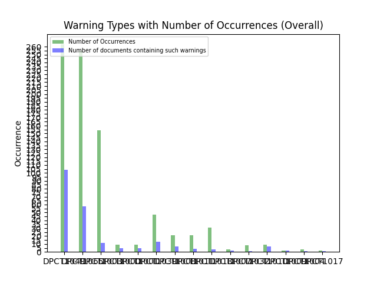

1. Number of Analysis Files: 155
2. Analysis Files:
present/.../main.dp.cpp ; diamond/.../masking.dp.cpp ; split/.../main.dp.cpp ; medianfilter/.../main.dp.cpp ; medianfilter/.../MedianFilter.dp.cpp ; qtclustering/.../QTC.dp.cpp ; miniFE/.../basic/optional/cuda/CudaNode.dp.hpp ; s3d/.../S3D.dp.cpp ; multimaterial/.../compact.dp.cpp ; gmm/.../cluster.dp.cpp ; gmm/.../gaussian_kernel.dp.cpp ; heat/.../heat.dp.cpp ; iso2dfd/.../iso2dfd.dp.cpp ; all-pairs-distance/.../main.dp.cpp ; minimod/.../minimig.dp.cpp ; minimod/.../find_min_max.dp.cpp ; knn/.../main.dp.cpp ; minibude/.../kernel.dp.cpp ; minibude/.../main.dp.cpp ; mt/.../MT.dp.cpp ; easyWave/.../main.dp.cpp ; sosfil/.../main.dp.cpp ; amgmk/.../main.dp.cpp ; black-scholes/.../blackScholesAnalyticEngine.dp.cpp ; haccmk/.../haccmk.dp.cpp ; gaussian/.../gaussianElim.dp.cpp ; nn/.../nearestNeighbor.dp.cpp ; rtm8/.../rtm8.dp.cpp ; nbody/.../GSimulation.dp.cpp ; laplace/.../main.dp.cpp ; boxfilter/.../main.dp.cpp ; stencil/.../stencil_1d.dp.cpp ; simplemoc/.../init.dp.cpp ; simplemoc/.../main.dp.cpp ; pathfinder/.../main.dp.cpp ; tridiagonal/.../sweep_kernels.dp.cpp ; tridiagonal/.../cyclic_kernels.dp.cpp ; tridiagonal/.../pcr_kernels.dp.cpp ; hotspot3D/.../3D.dp.cpp ; fdtd3d/.../FDTD3dGPU.dp.cpp ; b+tree/.../kernel/kernel2.dp.cpp ; b+tree/.../kernel/kernel.dp.cpp ; b+tree/.../kernel/kernel_wrapper.dp.cpp ; b+tree/.../kernel/kernel2_wrapper.dp.cpp ; randomAccess/.../main.dp.cpp ; chi2/.../chi2.dp.cpp ; epistatis/.../main.dp.cpp ; memcpy/.../main.dp.cpp ; urng/.../kernel.dp.cpp ; urng/.../main.dp.cpp ; popcount/.../main.dp.cpp ; transpose/.../main.dp.cpp ; bezier-surface/.../main.dp.cpp ; d2q9-bgk/.../main.dp.cpp ; fpc/.../main.dp.cpp ; testSNAP/.../main.dp.cpp ; geodesic/.../main.dp.cpp ; deredundancy/.../main.dp.cpp ; deredundancy/.../kernels.dp.cpp ; inversek2j/.../main.dp.cpp ; sampling/.../kernels.dp.cpp ; lid-driven-cavity/.../main.dp.cpp ; libor/.../main.dp.cpp ; sptrsv/.../sptrsv_syncfree.dp.cpp ; compute-score/.../main.dp.cpp ; murmurhash3/.../murmurhash3.dp.cpp ; maxpool3d/.../main.dp.cpp ; dct8x8/.../kernels.dp.cpp ; jenkins-hash/.../main.dp.cpp ; particles/.../particles.dp.cpp ; particles/.../bitonicSort.dp.cpp ; particles/.../bitonicSort_kernels.dp.cpp ; particles/.../particles_kernels.dp.cpp ; radixsort/.../Scan.dp.cpp ; radixsort/.../RadixSort.dp.cpp ; radixsort/.../RadixSort_kernels.dp.cpp ; radixsort/.../Scan_kernels.dp.cpp ; myocyte/.../master.dp.cpp ; axhelm/.../axhelmKernel.cpp.dp.cpp ; heat2d/.../main.dp.cpp ; vmc/.../vmc.dp.cpp ; bsw/.../driver.dp.cpp ; bsw/.../kernel.dp.cpp ; scan/.../main.dp.cpp ; bsearch/.../main.dp.cpp ; minisweep/.../main.dp.cpp ; minisweep/.../kernels.dp.cpp ; ldpc/.../kernel.dp.cpp ; ldpc/.../main.dp.cpp ; jaccard/.../main.dp.cpp ; lulesh/.../lulesh.dp.cpp ; grep/.../pnfa.dp.cpp ; sssp/.../main.dp.cpp ; reverse/.../main.dp.cpp ; bspline-vgh/.../main.dp.cpp ; ss/.../main.dp.cpp ; ss/.../kernels.dp.cpp ; affine/.../main.dp.cpp ; sph/.../fluid.dp.cpp ; aobench/.../ao.dp.cpp ; floydwarshall/.../main.dp.cpp ; mdh/.../main.dp.cpp ; srad/.../main.dp.cpp ; srad/.../reduce_kernel.dp.cpp ; convolutionSeparable/.../conv.dp.cpp ; reduction/.../reduction.dp.cpp ; flame/.../utils.dp.cpp ; flame/.../main.dp.cpp ; bfs/.../bfs.dp.cpp ; clenergy/.../clenergy.dp.cpp ; extrema/.../main.dp.cpp ; backprop/.../main.dp.cpp ; softmax/.../main.dp.cpp ; md5hash/.../MD5Hash.dp.cpp ; md/.../MD.dp.cpp ; dxtc1/.../kernel.dp.cpp ; dxtc1/.../main.dp.cpp ; bn/.../main.dp.cpp ; bn/.../kernels.dp.cpp ; page-rank/.../main.dp.cpp ; dp/.../main.dp.cpp ; nw/.../nw.dp.cpp ; ising/.../main.dp.cpp ; rng-wallace/.../main.dp.cpp ; rng-wallace/.../wallace_kernel.dp.cpp ; gd/.../main.dp.cpp ; ccsd-trpdrv/.../ccsd_tengy.dp.cpp ; ccsd-trpdrv/.../main.dp.cpp ; scan2/.../main.dp.cpp ; heartwall/.../kernel/kernel.dp.cpp ; nms/.../main.dp.cpp ; recursiveGaussian/.../main.dp.cpp ; atomicIntrinsics/.../main.dp.cpp ; atomicIntrinsics/.../simpleAtomicIntrinsics_kernel.dp.hpp ; hmm/.../ViterbiGPU.dp.cpp ; dslash/.../kernels.dp.cpp ; filter/.../main.dp.cpp ; asta/.../main.dp.cpp ; thomas/.../main.dp.cpp ; lud/.../lud_kernels.dp.cpp ; lanczos/.../lanczos.dp.cpp ; winograd/.../main.dp.cpp ; ced/.../main.dp.cpp ; kmeans/.../cluster.dp.cpp ; lombscargle/.../main.dp.cpp ; sobol/.../sobol_gpu.dp.cpp ; clock/.../main.dp.cpp ; hybridsort/.../hybridsort.dp.cpp ; hybridsort/.../mergesort.dp.cpp ; hybridsort/.../bucketsort.dp.cpp ; keccaktreehash/.../KeccakTreeGPU.dp.cpp ; qrg/.../main.dp.cpp ; quicksort/.../main.dp.cpp ; quicksort/.../QuicksortKernels.dp.hpp ; snake/.../main.dp.cpp ;
3. Number of Warning Type: 15
4. Warning Code Type:
DPCT1049 ; DPCT1065 ; DPCT1003 ; DPCT1000 ; DPCT1001 ; DPCT1039 ; DPCT1008 ; DPCT1011 ; DPCT1013 ; DPCT1007 ; DPCT1032 ; DPCT1010 ; DPCT1009 ; DPCT1004 ; DPCT1017 ;
5. Total Number of Warnings: 837
6. Distribution Graph:
8. Detailed Warning Information (Before CTA)
| No. | Warning Code | File Path | Project Name | Line Number | Warning message |
|---|---|---|---|---|---|
| 1 | DPCT1049 | present/.../main.dp.cpp | dpcpp | 560 | DPCT1049:0: The workgroup size passed to the SYCL kernel may exceed the limit. To get the device limit, query info::device::max_work_group_size. Adjust the workgroup size if needed. |
| 2 | DPCT1049 | diamond/.../masking.dp.cpp | dpcpp | 307 | DPCT1049:0: The workgroup size passed to the SYCL kernel may exceed the limit. To get the device limit, query info::device::max_work_group_size. Adjust the workgroup size if needed. |
| 3 | DPCT1065 | split/.../main.dp.cpp | dpcpp | 65 | DPCT1065:0: Consider replacing sycl::nd_item::barrier() with sycl::nd_item::barrier(sycl::access::fence_space::local_space) for better performance, if there is no access to global memory. |
| 4 | DPCT1065 | split/.../main.dp.cpp | dpcpp | 76 | DPCT1065:1: Consider replacing sycl::nd_item::barrier() with sycl::nd_item::barrier(sycl::access::fence_space::local_space) for better performance, if there is no access to global memory. |
| 5 | DPCT1065 | split/.../main.dp.cpp | dpcpp | 86 | DPCT1065:2: Consider replacing sycl::nd_item::barrier() with sycl::nd_item::barrier(sycl::access::fence_space::local_space) for better performance, if there is no access to global memory. |
| 6 | DPCT1065 | split/.../main.dp.cpp | dpcpp | 115 | DPCT1065:3: Consider replacing sycl::nd_item::barrier() with sycl::nd_item::barrier(sycl::access::fence_space::local_space) for better performance, if there is no access to global memory. |
| 7 | DPCT1065 | split/.../main.dp.cpp | dpcpp | 146 | DPCT1065:4: Consider replacing sycl::nd_item::barrier() with sycl::nd_item::barrier(sycl::access::fence_space::local_space) for better performance, if there is no access to global memory. |
| 8 | DPCT1065 | split/.../main.dp.cpp | dpcpp | 174 | DPCT1065:5: Consider replacing sycl::nd_item::barrier() with sycl::nd_item::barrier(sycl::access::fence_space::local_space) for better performance, if there is no access to global memory. |
| 9 | DPCT1065 | split/.../main.dp.cpp | dpcpp | 187 | DPCT1065:6: Consider replacing sycl::nd_item::barrier() with sycl::nd_item::barrier(sycl::access::fence_space::local_space) for better performance, if there is no access to global memory. |
| 10 | DPCT1049 | medianfilter/.../main.dp.cpp | dpcpp | 130 | DPCT1049:1: The workgroup size passed to the SYCL kernel may exceed the limit. To get the device limit, query info::device::max_work_group_size. Adjust the workgroup size if needed. |
| 11 | DPCT1065 | medianfilter/.../MedianFilter.dp.cpp | dpcpp | 153 | DPCT1065:0: Consider replacing sycl::nd_item::barrier() with sycl::nd_item::barrier(sycl::access::fence_space::local_space) for better performance, if there is no access to global memory. |
| 12 | DPCT1049 | qtclustering/.../QTC.dp.cpp | dpcpp | 274 | DPCT1049:14: The workgroup size passed to the SYCL kernel may exceed the limit. To get the device limit, query info::device::max_work_group_size. Adjust the workgroup size if needed. |
| 13 | DPCT1049 | qtclustering/.../QTC.dp.cpp | dpcpp | 341 | DPCT1049:15: The workgroup size passed to the SYCL kernel may exceed the limit. To get the device limit, query info::device::max_work_group_size. Adjust the workgroup size if needed. |
| 14 | DPCT1049 | qtclustering/.../QTC.dp.cpp | dpcpp | 409 | DPCT1049:16: The workgroup size passed to the SYCL kernel may exceed the limit. To get the device limit, query info::device::max_work_group_size. Adjust the workgroup size if needed. |
| 15 | DPCT1049 | qtclustering/.../QTC.dp.cpp | dpcpp | 467 | DPCT1049:17: The workgroup size passed to the SYCL kernel may exceed the limit. To get the device limit, query info::device::max_work_group_size. Adjust the workgroup size if needed. |
| 16 | DPCT1049 | miniFE/.../basic/optional/cuda/CudaNode.dp.hpp | dpcpp | 37 | DPCT1049:6: The workgroup size passed to the SYCL kernel may exceed the limit. To get the device limit, query info::device::max_work_group_size. Adjust the workgroup size if needed. |
| 17 | DPCT1003 | s3d/.../S3D.dp.cpp | dpcpp | 127 | DPCT1003:1: Migrated API does not return error code. (*, 0) is inserted. You may need to rewrite this code. |
| 18 | DPCT1003 | s3d/.../S3D.dp.cpp | dpcpp | 133 | DPCT1003:2: Migrated API does not return error code. (*, 0) is inserted. You may need to rewrite this code. |
| 19 | DPCT1003 | s3d/.../S3D.dp.cpp | dpcpp | 139 | DPCT1003:3: Migrated API does not return error code. (*, 0) is inserted. You may need to rewrite this code. |
| 20 | DPCT1003 | s3d/.../S3D.dp.cpp | dpcpp | 146 | DPCT1003:4: Migrated API does not return error code. (*, 0) is inserted. You may need to rewrite this code. |
| 21 | DPCT1003 | s3d/.../S3D.dp.cpp | dpcpp | 153 | DPCT1003:5: Migrated API does not return error code. (*, 0) is inserted. You may need to rewrite this code. |
| 22 | DPCT1003 | s3d/.../S3D.dp.cpp | dpcpp | 197 | DPCT1003:6: Migrated API does not return error code. (*, 0) is inserted. You may need to rewrite this code. |
| 23 | DPCT1003 | s3d/.../S3D.dp.cpp | dpcpp | 203 | DPCT1003:7: Migrated API does not return error code. (*, 0) is inserted. You may need to rewrite this code. |
| 24 | DPCT1003 | s3d/.../S3D.dp.cpp | dpcpp | 209 | DPCT1003:8: Migrated API does not return error code. (*, 0) is inserted. You may need to rewrite this code. |
| 25 | DPCT1003 | s3d/.../S3D.dp.cpp | dpcpp | 216 | DPCT1003:9: Migrated API does not return error code. (*, 0) is inserted. You may need to rewrite this code. |
| 26 | DPCT1003 | s3d/.../S3D.dp.cpp | dpcpp | 223 | DPCT1003:10: Migrated API does not return error code. (*, 0) is inserted. You may need to rewrite this code. |
| 27 | DPCT1003 | s3d/.../S3D.dp.cpp | dpcpp | 230 | DPCT1003:11: Migrated API does not return error code. (*, 0) is inserted. You may need to rewrite this code. |
| 28 | DPCT1003 | s3d/.../S3D.dp.cpp | dpcpp | 237 | DPCT1003:12: Migrated API does not return error code. (*, 0) is inserted. You may need to rewrite this code. |
| 29 | DPCT1003 | s3d/.../S3D.dp.cpp | dpcpp | 244 | DPCT1003:13: Migrated API does not return error code. (*, 0) is inserted. You may need to rewrite this code. |
| 30 | DPCT1003 | s3d/.../S3D.dp.cpp | dpcpp | 251 | DPCT1003:14: Migrated API does not return error code. (*, 0) is inserted. You may need to rewrite this code. |
| 31 | DPCT1003 | s3d/.../S3D.dp.cpp | dpcpp | 258 | DPCT1003:15: Migrated API does not return error code. (*, 0) is inserted. You may need to rewrite this code. |
| 32 | DPCT1003 | s3d/.../S3D.dp.cpp | dpcpp | 265 | DPCT1003:16: Migrated API does not return error code. (*, 0) is inserted. You may need to rewrite this code. |
| 33 | DPCT1003 | s3d/.../S3D.dp.cpp | dpcpp | 280 | DPCT1003:17: Migrated API does not return error code. (*, 0) is inserted. You may need to rewrite this code. |
| 34 | DPCT1003 | s3d/.../S3D.dp.cpp | dpcpp | 285 | DPCT1003:18: Migrated API does not return error code. (*, 0) is inserted. You may need to rewrite this code. |
| 35 | DPCT1003 | s3d/.../S3D.dp.cpp | dpcpp | 290 | DPCT1003:19: Migrated API does not return error code. (*, 0) is inserted. You may need to rewrite this code. |
| 36 | DPCT1003 | s3d/.../S3D.dp.cpp | dpcpp | 295 | DPCT1003:20: Migrated API does not return error code. (*, 0) is inserted. You may need to rewrite this code. |
| 37 | DPCT1003 | s3d/.../S3D.dp.cpp | dpcpp | 684 | DPCT1003:48: Migrated API does not return error code. (*, 0) is inserted. You may need to rewrite this code. |
| 38 | DPCT1003 | s3d/.../S3D.dp.cpp | dpcpp | 693 | DPCT1003:49: Migrated API does not return error code. (*, 0) is inserted. You may need to rewrite this code. |
| 39 | DPCT1003 | s3d/.../S3D.dp.cpp | dpcpp | 698 | DPCT1003:50: Migrated API does not return error code. (*, 0) is inserted. You may need to rewrite this code. |
| 40 | DPCT1003 | s3d/.../S3D.dp.cpp | dpcpp | 703 | DPCT1003:51: Migrated API does not return error code. (*, 0) is inserted. You may need to rewrite this code. |
| 41 | DPCT1003 | s3d/.../S3D.dp.cpp | dpcpp | 708 | DPCT1003:52: Migrated API does not return error code. (*, 0) is inserted. You may need to rewrite this code. |
| 42 | DPCT1003 | s3d/.../S3D.dp.cpp | dpcpp | 713 | DPCT1003:53: Migrated API does not return error code. (*, 0) is inserted. You may need to rewrite this code. |
| 43 | DPCT1003 | s3d/.../S3D.dp.cpp | dpcpp | 718 | DPCT1003:54: Migrated API does not return error code. (*, 0) is inserted. You may need to rewrite this code. |
| 44 | DPCT1003 | s3d/.../S3D.dp.cpp | dpcpp | 723 | DPCT1003:55: Migrated API does not return error code. (*, 0) is inserted. You may need to rewrite this code. |
| 45 | DPCT1003 | s3d/.../S3D.dp.cpp | dpcpp | 728 | DPCT1003:56: Migrated API does not return error code. (*, 0) is inserted. You may need to rewrite this code. |
| 46 | DPCT1003 | s3d/.../S3D.dp.cpp | dpcpp | 733 | DPCT1003:57: Migrated API does not return error code. (*, 0) is inserted. You may need to rewrite this code. |
| 47 | DPCT1003 | s3d/.../S3D.dp.cpp | dpcpp | 738 | DPCT1003:58: Migrated API does not return error code. (*, 0) is inserted. You may need to rewrite this code. |
| 48 | DPCT1003 | s3d/.../S3D.dp.cpp | dpcpp | 743 | DPCT1003:59: Migrated API does not return error code. (*, 0) is inserted. You may need to rewrite this code. |
| 49 | DPCT1003 | s3d/.../S3D.dp.cpp | dpcpp | 758 | DPCT1003:60: Migrated API does not return error code. (*, 0) is inserted. You may need to rewrite this code. |
| 50 | DPCT1003 | s3d/.../S3D.dp.cpp | dpcpp | 763 | DPCT1003:61: Migrated API does not return error code. (*, 0) is inserted. You may need to rewrite this code. |
| 51 | DPCT1003 | s3d/.../S3D.dp.cpp | dpcpp | 768 | DPCT1003:62: Migrated API does not return error code. (*, 0) is inserted. You may need to rewrite this code. |
| 52 | DPCT1003 | s3d/.../S3D.dp.cpp | dpcpp | 773 | DPCT1003:63: Migrated API does not return error code. (*, 0) is inserted. You may need to rewrite this code. |
| 53 | DPCT1003 | s3d/.../S3D.dp.cpp | dpcpp | 778 | DPCT1003:64: Migrated API does not return error code. (*, 0) is inserted. You may need to rewrite this code. |
| 54 | DPCT1049 | s3d/.../S3D.dp.cpp | dpcpp | 305 | DPCT1049:21: The workgroup size passed to the SYCL kernel may exceed the limit. To get the device limit, query info::device::max_work_group_size. Adjust the workgroup size if needed. |
| 55 | DPCT1049 | s3d/.../S3D.dp.cpp | dpcpp | 319 | DPCT1049:22: The workgroup size passed to the SYCL kernel may exceed the limit. To get the device limit, query info::device::max_work_group_size. Adjust the workgroup size if needed. |
| 56 | DPCT1049 | s3d/.../S3D.dp.cpp | dpcpp | 333 | DPCT1049:23: The workgroup size passed to the SYCL kernel may exceed the limit. To get the device limit, query info::device::max_work_group_size. Adjust the workgroup size if needed. |
| 57 | DPCT1049 | s3d/.../S3D.dp.cpp | dpcpp | 348 | DPCT1049:24: The workgroup size passed to the SYCL kernel may exceed the limit. To get the device limit, query info::device::max_work_group_size. Adjust the workgroup size if needed. |
| 58 | DPCT1049 | s3d/.../S3D.dp.cpp | dpcpp | 362 | DPCT1049:25: The workgroup size passed to the SYCL kernel may exceed the limit. To get the device limit, query info::device::max_work_group_size. Adjust the workgroup size if needed. |
| 59 | DPCT1049 | s3d/.../S3D.dp.cpp | dpcpp | 376 | DPCT1049:26: The workgroup size passed to the SYCL kernel may exceed the limit. To get the device limit, query info::device::max_work_group_size. Adjust the workgroup size if needed. |
| 60 | DPCT1049 | s3d/.../S3D.dp.cpp | dpcpp | 390 | DPCT1049:27: The workgroup size passed to the SYCL kernel may exceed the limit. To get the device limit, query info::device::max_work_group_size. Adjust the workgroup size if needed. |
| 61 | DPCT1049 | s3d/.../S3D.dp.cpp | dpcpp | 404 | DPCT1049:28: The workgroup size passed to the SYCL kernel may exceed the limit. To get the device limit, query info::device::max_work_group_size. Adjust the workgroup size if needed. |
| 62 | DPCT1049 | s3d/.../S3D.dp.cpp | dpcpp | 418 | DPCT1049:29: The workgroup size passed to the SYCL kernel may exceed the limit. To get the device limit, query info::device::max_work_group_size. Adjust the workgroup size if needed. |
| 63 | DPCT1049 | s3d/.../S3D.dp.cpp | dpcpp | 432 | DPCT1049:30: The workgroup size passed to the SYCL kernel may exceed the limit. To get the device limit, query info::device::max_work_group_size. Adjust the workgroup size if needed. |
| 64 | DPCT1049 | s3d/.../S3D.dp.cpp | dpcpp | 446 | DPCT1049:31: The workgroup size passed to the SYCL kernel may exceed the limit. To get the device limit, query info::device::max_work_group_size. Adjust the workgroup size if needed. |
| 65 | DPCT1049 | s3d/.../S3D.dp.cpp | dpcpp | 460 | DPCT1049:32: The workgroup size passed to the SYCL kernel may exceed the limit. To get the device limit, query info::device::max_work_group_size. Adjust the workgroup size if needed. |
| 66 | DPCT1049 | s3d/.../S3D.dp.cpp | dpcpp | 475 | DPCT1049:33: The workgroup size passed to the SYCL kernel may exceed the limit. To get the device limit, query info::device::max_work_group_size. Adjust the workgroup size if needed. |
| 67 | DPCT1049 | s3d/.../S3D.dp.cpp | dpcpp | 489 | DPCT1049:34: The workgroup size passed to the SYCL kernel may exceed the limit. To get the device limit, query info::device::max_work_group_size. Adjust the workgroup size if needed. |
| 68 | DPCT1049 | s3d/.../S3D.dp.cpp | dpcpp | 503 | DPCT1049:35: The workgroup size passed to the SYCL kernel may exceed the limit. To get the device limit, query info::device::max_work_group_size. Adjust the workgroup size if needed. |
| 69 | DPCT1049 | s3d/.../S3D.dp.cpp | dpcpp | 516 | DPCT1049:36: The workgroup size passed to the SYCL kernel may exceed the limit. To get the device limit, query info::device::max_work_group_size. Adjust the workgroup size if needed. |
| 70 | DPCT1049 | s3d/.../S3D.dp.cpp | dpcpp | 530 | DPCT1049:37: The workgroup size passed to the SYCL kernel may exceed the limit. To get the device limit, query info::device::max_work_group_size. Adjust the workgroup size if needed. |
| 71 | DPCT1049 | s3d/.../S3D.dp.cpp | dpcpp | 543 | DPCT1049:38: The workgroup size passed to the SYCL kernel may exceed the limit. To get the device limit, query info::device::max_work_group_size. Adjust the workgroup size if needed. |
| 72 | DPCT1049 | s3d/.../S3D.dp.cpp | dpcpp | 556 | DPCT1049:39: The workgroup size passed to the SYCL kernel may exceed the limit. To get the device limit, query info::device::max_work_group_size. Adjust the workgroup size if needed. |
| 73 | DPCT1049 | s3d/.../S3D.dp.cpp | dpcpp | 570 | DPCT1049:40: The workgroup size passed to the SYCL kernel may exceed the limit. To get the device limit, query info::device::max_work_group_size. Adjust the workgroup size if needed. |
| 74 | DPCT1049 | s3d/.../S3D.dp.cpp | dpcpp | 584 | DPCT1049:41: The workgroup size passed to the SYCL kernel may exceed the limit. To get the device limit, query info::device::max_work_group_size. Adjust the workgroup size if needed. |
| 75 | DPCT1049 | s3d/.../S3D.dp.cpp | dpcpp | 598 | DPCT1049:42: The workgroup size passed to the SYCL kernel may exceed the limit. To get the device limit, query info::device::max_work_group_size. Adjust the workgroup size if needed. |
| 76 | DPCT1049 | s3d/.../S3D.dp.cpp | dpcpp | 612 | DPCT1049:43: The workgroup size passed to the SYCL kernel may exceed the limit. To get the device limit, query info::device::max_work_group_size. Adjust the workgroup size if needed. |
| 77 | DPCT1049 | s3d/.../S3D.dp.cpp | dpcpp | 626 | DPCT1049:44: The workgroup size passed to the SYCL kernel may exceed the limit. To get the device limit, query info::device::max_work_group_size. Adjust the workgroup size if needed. |
| 78 | DPCT1049 | s3d/.../S3D.dp.cpp | dpcpp | 640 | DPCT1049:45: The workgroup size passed to the SYCL kernel may exceed the limit. To get the device limit, query info::device::max_work_group_size. Adjust the workgroup size if needed. |
| 79 | DPCT1049 | s3d/.../S3D.dp.cpp | dpcpp | 654 | DPCT1049:46: The workgroup size passed to the SYCL kernel may exceed the limit. To get the device limit, query info::device::max_work_group_size. Adjust the workgroup size if needed. |
| 80 | DPCT1049 | s3d/.../S3D.dp.cpp | dpcpp | 668 | DPCT1049:47: The workgroup size passed to the SYCL kernel may exceed the limit. To get the device limit, query info::device::max_work_group_size. Adjust the workgroup size if needed. |
| 81 | DPCT1049 | multimaterial/.../compact.dp.cpp | dpcpp | 364 | DPCT1049:0: The workgroup size passed to the SYCL kernel may exceed the limit. To get the device limit, query info::device::max_work_group_size. Adjust the workgroup size if needed. |
| 82 | DPCT1049 | multimaterial/.../compact.dp.cpp | dpcpp | 382 | DPCT1049:1: The workgroup size passed to the SYCL kernel may exceed the limit. To get the device limit, query info::device::max_work_group_size. Adjust the workgroup size if needed. |
| 83 | DPCT1049 | multimaterial/.../compact.dp.cpp | dpcpp | 409 | DPCT1049:2: The workgroup size passed to the SYCL kernel may exceed the limit. To get the device limit, query info::device::max_work_group_size. Adjust the workgroup size if needed. |
| 84 | DPCT1049 | multimaterial/.../compact.dp.cpp | dpcpp | 429 | DPCT1049:3: The workgroup size passed to the SYCL kernel may exceed the limit. To get the device limit, query info::device::max_work_group_size. Adjust the workgroup size if needed. |
| 85 | DPCT1049 | multimaterial/.../compact.dp.cpp | dpcpp | 455 | DPCT1049:4: The workgroup size passed to the SYCL kernel may exceed the limit. To get the device limit, query info::device::max_work_group_size. Adjust the workgroup size if needed. |
| 86 | DPCT1003 | gmm/.../cluster.dp.cpp | dpcpp | 262 | DPCT1003:28: Migrated API does not return error code. (*, 0) is inserted. You may need to rewrite this code. |
| 87 | DPCT1003 | gmm/.../cluster.dp.cpp | dpcpp | 267 | DPCT1003:30: Migrated API does not return error code. (*, 0) is inserted. You may need to rewrite this code. |
| 88 | DPCT1003 | gmm/.../cluster.dp.cpp | dpcpp | 272 | DPCT1003:31: Migrated API does not return error code. (*, 0) is inserted. You may need to rewrite this code. |
| 89 | DPCT1003 | gmm/.../cluster.dp.cpp | dpcpp | 277 | DPCT1003:32: Migrated API does not return error code. (*, 0) is inserted. You may need to rewrite this code. |
| 90 | DPCT1003 | gmm/.../cluster.dp.cpp | dpcpp | 282 | DPCT1003:33: Migrated API does not return error code. (*, 0) is inserted. You may need to rewrite this code. |
| 91 | DPCT1003 | gmm/.../cluster.dp.cpp | dpcpp | 287 | DPCT1003:34: Migrated API does not return error code. (*, 0) is inserted. You may need to rewrite this code. |
| 92 | DPCT1003 | gmm/.../cluster.dp.cpp | dpcpp | 292 | DPCT1003:35: Migrated API does not return error code. (*, 0) is inserted. You may need to rewrite this code. |
| 93 | DPCT1003 | gmm/.../cluster.dp.cpp | dpcpp | 297 | DPCT1003:36: Migrated API does not return error code. (*, 0) is inserted. You may need to rewrite this code. |
| 94 | DPCT1003 | gmm/.../cluster.dp.cpp | dpcpp | 327 | DPCT1003:37: Migrated API does not return error code. (*, 0) is inserted. You may need to rewrite this code. |
| 95 | DPCT1003 | gmm/.../cluster.dp.cpp | dpcpp | 332 | DPCT1003:38: Migrated API does not return error code. (*, 0) is inserted. You may need to rewrite this code. |
| 96 | DPCT1003 | gmm/.../cluster.dp.cpp | dpcpp | 337 | DPCT1003:39: Migrated API does not return error code. (*, 0) is inserted. You may need to rewrite this code. |
| 97 | DPCT1003 | gmm/.../cluster.dp.cpp | dpcpp | 343 | DPCT1003:40: Migrated API does not return error code. (*, 0) is inserted. You may need to rewrite this code. |
| 98 | DPCT1003 | gmm/.../cluster.dp.cpp | dpcpp | 349 | DPCT1003:41: Migrated API does not return error code. (*, 0) is inserted. You may need to rewrite this code. |
| 99 | DPCT1003 | gmm/.../cluster.dp.cpp | dpcpp | 356 | DPCT1003:42: Migrated API does not return error code. (*, 0) is inserted. You may need to rewrite this code. |
| 100 | DPCT1003 | gmm/.../cluster.dp.cpp | dpcpp | 365 | DPCT1003:43: Migrated API does not return error code. (*, 0) is inserted. You may need to rewrite this code. |
| 101 | DPCT1003 | gmm/.../cluster.dp.cpp | dpcpp | 374 | DPCT1003:44: Migrated API does not return error code. (*, 0) is inserted. You may need to rewrite this code. |
| 102 | DPCT1003 | gmm/.../cluster.dp.cpp | dpcpp | 386 | DPCT1003:45: Migrated API does not return error code. (*, 0) is inserted. You may need to rewrite this code. |
| 103 | DPCT1003 | gmm/.../cluster.dp.cpp | dpcpp | 393 | DPCT1003:46: Migrated API does not return error code. (*, 0) is inserted. You may need to rewrite this code. |
| 104 | DPCT1003 | gmm/.../cluster.dp.cpp | dpcpp | 413 | DPCT1003:47: Migrated API does not return error code. (*, 0) is inserted. You may need to rewrite this code. |
| 105 | DPCT1003 | gmm/.../cluster.dp.cpp | dpcpp | 419 | DPCT1003:48: Migrated API does not return error code. (*, 0) is inserted. You may need to rewrite this code. |
| 106 | DPCT1003 | gmm/.../cluster.dp.cpp | dpcpp | 425 | DPCT1003:49: Migrated API does not return error code. (*, 0) is inserted. You may need to rewrite this code. |
| 107 | DPCT1003 | gmm/.../cluster.dp.cpp | dpcpp | 431 | DPCT1003:50: Migrated API does not return error code. (*, 0) is inserted. You may need to rewrite this code. |
| 108 | DPCT1003 | gmm/.../cluster.dp.cpp | dpcpp | 439 | DPCT1003:51: Migrated API does not return error code. (*, 0) is inserted. You may need to rewrite this code. |
| 109 | DPCT1003 | gmm/.../cluster.dp.cpp | dpcpp | 447 | DPCT1003:52: Migrated API does not return error code. (*, 0) is inserted. You may need to rewrite this code. |
| 110 | DPCT1003 | gmm/.../cluster.dp.cpp | dpcpp | 456 | DPCT1003:53: Migrated API does not return error code. (*, 0) is inserted. You may need to rewrite this code. |
| 111 | DPCT1003 | gmm/.../cluster.dp.cpp | dpcpp | 466 | DPCT1003:54: Migrated API does not return error code. (*, 0) is inserted. You may need to rewrite this code. |
| 112 | DPCT1003 | gmm/.../cluster.dp.cpp | dpcpp | 487 | DPCT1003:55: Migrated API does not return error code. (*, 0) is inserted. You may need to rewrite this code. |
| 113 | DPCT1003 | gmm/.../cluster.dp.cpp | dpcpp | 493 | DPCT1003:56: Migrated API does not return error code. (*, 0) is inserted. You may need to rewrite this code. |
| 114 | DPCT1003 | gmm/.../cluster.dp.cpp | dpcpp | 499 | DPCT1003:57: Migrated API does not return error code. (*, 0) is inserted. You may need to rewrite this code. |
| 115 | DPCT1003 | gmm/.../cluster.dp.cpp | dpcpp | 507 | DPCT1003:58: Migrated API does not return error code. (*, 0) is inserted. You may need to rewrite this code. |
| 116 | DPCT1003 | gmm/.../cluster.dp.cpp | dpcpp | 515 | DPCT1003:59: Migrated API does not return error code. (*, 0) is inserted. You may need to rewrite this code. |
| 117 | DPCT1003 | gmm/.../cluster.dp.cpp | dpcpp | 524 | DPCT1003:60: Migrated API does not return error code. (*, 0) is inserted. You may need to rewrite this code. |
| 118 | DPCT1003 | gmm/.../cluster.dp.cpp | dpcpp | 534 | DPCT1003:61: Migrated API does not return error code. (*, 0) is inserted. You may need to rewrite this code. |
| 119 | DPCT1003 | gmm/.../cluster.dp.cpp | dpcpp | 624 | DPCT1003:62: Migrated API does not return error code. (*, 0) is inserted. You may need to rewrite this code. |
| 120 | DPCT1003 | gmm/.../cluster.dp.cpp | dpcpp | 630 | DPCT1003:63: Migrated API does not return error code. (*, 0) is inserted. You may need to rewrite this code. |
| 121 | DPCT1003 | gmm/.../cluster.dp.cpp | dpcpp | 637 | DPCT1003:64: Migrated API does not return error code. (*, 0) is inserted. You may need to rewrite this code. |
| 122 | DPCT1003 | gmm/.../cluster.dp.cpp | dpcpp | 644 | DPCT1003:65: Migrated API does not return error code. (*, 0) is inserted. You may need to rewrite this code. |
| 123 | DPCT1003 | gmm/.../cluster.dp.cpp | dpcpp | 761 | DPCT1003:66: Migrated API does not return error code. (*, 0) is inserted. You may need to rewrite this code. |
| 124 | DPCT1003 | gmm/.../cluster.dp.cpp | dpcpp | 818 | DPCT1003:67: Migrated API does not return error code. (*, 0) is inserted. You may need to rewrite this code. |
| 125 | DPCT1003 | gmm/.../cluster.dp.cpp | dpcpp | 861 | DPCT1003:70: Migrated API does not return error code. (*, 0) is inserted. You may need to rewrite this code. |
| 126 | DPCT1003 | gmm/.../cluster.dp.cpp | dpcpp | 891 | DPCT1003:71: Migrated API does not return error code. (*, 0) is inserted. You may need to rewrite this code. |
| 127 | DPCT1003 | gmm/.../cluster.dp.cpp | dpcpp | 914 | DPCT1003:72: Migrated API does not return error code. (*, 0) is inserted. You may need to rewrite this code. |
| 128 | DPCT1003 | gmm/.../cluster.dp.cpp | dpcpp | 959 | DPCT1003:73: Migrated API does not return error code. (*, 0) is inserted. You may need to rewrite this code. |
| 129 | DPCT1003 | gmm/.../cluster.dp.cpp | dpcpp | 997 | DPCT1003:74: Migrated API does not return error code. (*, 0) is inserted. You may need to rewrite this code. |
| 130 | DPCT1003 | gmm/.../cluster.dp.cpp | dpcpp | 1037 | DPCT1003:75: Migrated API does not return error code. (*, 0) is inserted. You may need to rewrite this code. |
| 131 | DPCT1003 | gmm/.../cluster.dp.cpp | dpcpp | 1092 | DPCT1003:76: Migrated API does not return error code. (*, 0) is inserted. You may need to rewrite this code. |
| 132 | DPCT1003 | gmm/.../cluster.dp.cpp | dpcpp | 1119 | DPCT1003:77: Migrated API does not return error code. (*, 0) is inserted. You may need to rewrite this code. |
| 133 | DPCT1003 | gmm/.../cluster.dp.cpp | dpcpp | 1209 | DPCT1003:78: Migrated API does not return error code. (*, 0) is inserted. You may need to rewrite this code. |
| 134 | DPCT1003 | gmm/.../cluster.dp.cpp | dpcpp | 1214 | DPCT1003:79: Migrated API does not return error code. (*, 0) is inserted. You may need to rewrite this code. |
| 135 | DPCT1003 | gmm/.../cluster.dp.cpp | dpcpp | 1219 | DPCT1003:80: Migrated API does not return error code. (*, 0) is inserted. You may need to rewrite this code. |
| 136 | DPCT1003 | gmm/.../cluster.dp.cpp | dpcpp | 1224 | DPCT1003:81: Migrated API does not return error code. (*, 0) is inserted. You may need to rewrite this code. |
| 137 | DPCT1049 | gmm/.../cluster.dp.cpp | dpcpp | 873 | DPCT1049:68: The workgroup size passed to the SYCL kernel may exceed the limit. To get the device limit, query info::device::max_work_group_size. Adjust the workgroup size if needed. |
| 138 | DPCT1049 | gmm/.../cluster.dp.cpp | dpcpp | 928 | DPCT1049:69: The workgroup size passed to the SYCL kernel may exceed the limit. To get the device limit, query info::device::max_work_group_size. Adjust the workgroup size if needed. |
| 139 | DPCT1065 | gmm/.../gaussian_kernel.dp.cpp | dpcpp | 56 | DPCT1065:0: Consider replacing sycl::nd_item::barrier() with sycl::nd_item::barrier(sycl::access::fence_space::local_space) for better performance, if there is no access to global memory. |
| 140 | DPCT1065 | gmm/.../gaussian_kernel.dp.cpp | dpcpp | 151 | DPCT1065:1: Consider replacing sycl::nd_item::barrier() with sycl::nd_item::barrier(sycl::access::fence_space::local_space) for better performance, if there is no access to global memory. |
| 141 | DPCT1065 | gmm/.../gaussian_kernel.dp.cpp | dpcpp | 167 | DPCT1065:2: Consider replacing sycl::nd_item::barrier() with sycl::nd_item::barrier(sycl::access::fence_space::local_space) for better performance, if there is no access to global memory. |
| 142 | DPCT1065 | gmm/.../gaussian_kernel.dp.cpp | dpcpp | 194 | DPCT1065:3: Consider replacing sycl::nd_item::barrier() with sycl::nd_item::barrier(sycl::access::fence_space::local_space) for better performance, if there is no access to global memory. |
| 143 | DPCT1065 | gmm/.../gaussian_kernel.dp.cpp | dpcpp | 212 | DPCT1065:4: Consider replacing sycl::nd_item::barrier() with sycl::nd_item::barrier(sycl::access::fence_space::local_space) for better performance, if there is no access to global memory. |
| 144 | DPCT1065 | gmm/.../gaussian_kernel.dp.cpp | dpcpp | 225 | DPCT1065:5: Consider replacing sycl::nd_item::barrier() with sycl::nd_item::barrier(sycl::access::fence_space::local_space) for better performance, if there is no access to global memory. |
| 145 | DPCT1065 | gmm/.../gaussian_kernel.dp.cpp | dpcpp | 269 | DPCT1065:6: Consider replacing sycl::nd_item::barrier() with sycl::nd_item::barrier(sycl::access::fence_space::local_space) for better performance, if there is no access to global memory. |
| 146 | DPCT1065 | gmm/.../gaussian_kernel.dp.cpp | dpcpp | 287 | DPCT1065:7: Consider replacing sycl::nd_item::barrier() with sycl::nd_item::barrier(sycl::access::fence_space::local_space) for better performance, if there is no access to global memory. |
| 147 | DPCT1065 | gmm/.../gaussian_kernel.dp.cpp | dpcpp | 300 | DPCT1065:8: Consider replacing sycl::nd_item::barrier() with sycl::nd_item::barrier(sycl::access::fence_space::local_space) for better performance, if there is no access to global memory. |
| 148 | DPCT1065 | gmm/.../gaussian_kernel.dp.cpp | dpcpp | 315 | DPCT1065:9: Consider replacing sycl::nd_item::barrier() with sycl::nd_item::barrier(sycl::access::fence_space::local_space) for better performance, if there is no access to global memory. |
| 149 | DPCT1065 | gmm/.../gaussian_kernel.dp.cpp | dpcpp | 332 | DPCT1065:10: Consider replacing sycl::nd_item::barrier() with sycl::nd_item::barrier(sycl::access::fence_space::local_space) for better performance, if there is no access to global memory. |
| 150 | DPCT1065 | gmm/.../gaussian_kernel.dp.cpp | dpcpp | 386 | DPCT1065:11: Consider replacing sycl::nd_item::barrier() with sycl::nd_item::barrier(sycl::access::fence_space::local_space) for better performance, if there is no access to global memory. |
| 151 | DPCT1065 | gmm/.../gaussian_kernel.dp.cpp | dpcpp | 408 | DPCT1065:12: Consider replacing sycl::nd_item::barrier() with sycl::nd_item::barrier(sycl::access::fence_space::local_space) for better performance, if there is no access to global memory. |
| 152 | DPCT1065 | gmm/.../gaussian_kernel.dp.cpp | dpcpp | 423 | DPCT1065:13: Consider replacing sycl::nd_item::barrier() with sycl::nd_item::barrier(sycl::access::fence_space::local_space) for better performance, if there is no access to global memory. |
| 153 | DPCT1065 | gmm/.../gaussian_kernel.dp.cpp | dpcpp | 466 | DPCT1065:14: Consider replacing sycl::nd_item::barrier() with sycl::nd_item::barrier(sycl::access::fence_space::local_space) for better performance, if there is no access to global memory. |
| 154 | DPCT1065 | gmm/.../gaussian_kernel.dp.cpp | dpcpp | 475 | DPCT1065:15: Consider replacing sycl::nd_item::barrier() with sycl::nd_item::barrier(sycl::access::fence_space::local_space) for better performance, if there is no access to global memory. |
| 155 | DPCT1065 | gmm/.../gaussian_kernel.dp.cpp | dpcpp | 481 | DPCT1065:16: Consider replacing sycl::nd_item::barrier() with sycl::nd_item::barrier(sycl::access::fence_space::local_space) for better performance, if there is no access to global memory. |
| 156 | DPCT1065 | gmm/.../gaussian_kernel.dp.cpp | dpcpp | 551 | DPCT1065:17: Consider replacing sycl::nd_item::barrier() with sycl::nd_item::barrier(sycl::access::fence_space::local_space) for better performance, if there is no access to global memory. |
| 157 | DPCT1065 | gmm/.../gaussian_kernel.dp.cpp | dpcpp | 642 | DPCT1065:18: Consider replacing sycl::nd_item::barrier() with sycl::nd_item::barrier(sycl::access::fence_space::local_space) for better performance, if there is no access to global memory. |
| 158 | DPCT1065 | gmm/.../gaussian_kernel.dp.cpp | dpcpp | 679 | DPCT1065:19: Consider replacing sycl::nd_item::barrier() with sycl::nd_item::barrier(sycl::access::fence_space::local_space) for better performance, if there is no access to global memory. |
| 159 | DPCT1065 | gmm/.../gaussian_kernel.dp.cpp | dpcpp | 723 | DPCT1065:20: Consider replacing sycl::nd_item::barrier() with sycl::nd_item::barrier(sycl::access::fence_space::local_space) for better performance, if there is no access to global memory. |
| 160 | DPCT1065 | gmm/.../gaussian_kernel.dp.cpp | dpcpp | 787 | DPCT1065:21: Consider replacing sycl::nd_item::barrier() with sycl::nd_item::barrier(sycl::access::fence_space::local_space) for better performance, if there is no access to global memory. |
| 161 | DPCT1065 | gmm/.../gaussian_kernel.dp.cpp | dpcpp | 815 | DPCT1065:22: Consider replacing sycl::nd_item::barrier() with sycl::nd_item::barrier(sycl::access::fence_space::local_space) for better performance, if there is no access to global memory. |
| 162 | DPCT1065 | gmm/.../gaussian_kernel.dp.cpp | dpcpp | 830 | DPCT1065:23: Consider replacing sycl::nd_item::barrier() with sycl::nd_item::barrier(sycl::access::fence_space::local_space) for better performance, if there is no access to global memory. |
| 163 | DPCT1065 | gmm/.../gaussian_kernel.dp.cpp | dpcpp | 864 | DPCT1065:24: Consider replacing sycl::nd_item::barrier() with sycl::nd_item::barrier(sycl::access::fence_space::local_space) for better performance, if there is no access to global memory. |
| 164 | DPCT1065 | gmm/.../gaussian_kernel.dp.cpp | dpcpp | 892 | DPCT1065:25: Consider replacing sycl::nd_item::barrier() with sycl::nd_item::barrier(sycl::access::fence_space::local_space) for better performance, if there is no access to global memory. |
| 165 | DPCT1065 | gmm/.../gaussian_kernel.dp.cpp | dpcpp | 930 | DPCT1065:26: Consider replacing sycl::nd_item::barrier() with sycl::nd_item::barrier(sycl::access::fence_space::local_space) for better performance, if there is no access to global memory. |
| 166 | DPCT1065 | gmm/.../gaussian_kernel.dp.cpp | dpcpp | 940 | DPCT1065:27: Consider replacing sycl::nd_item::barrier() with sycl::nd_item::barrier(sycl::access::fence_space::local_space) for better performance, if there is no access to global memory. |
| 167 | DPCT1049 | heat/.../heat.dp.cpp | dpcpp | 147 | DPCT1049:4: The workgroup size passed to the SYCL kernel may exceed the limit. To get the device limit, query info::device::max_work_group_size. Adjust the workgroup size if needed. |
| 168 | DPCT1049 | heat/.../heat.dp.cpp | dpcpp | 160 | DPCT1049:5: The workgroup size passed to the SYCL kernel may exceed the limit. To get the device limit, query info::device::max_work_group_size. Adjust the workgroup size if needed. |
| 169 | DPCT1049 | heat/.../heat.dp.cpp | dpcpp | 205 | DPCT1049:7: The workgroup size passed to the SYCL kernel may exceed the limit. To get the device limit, query info::device::max_work_group_size. Adjust the workgroup size if needed. |
| 170 | DPCT1003 | heat/.../heat.dp.cpp | dpcpp | 175 | DPCT1003:6: Migrated API does not return error code. (*, 0) is inserted. You may need to rewrite this code. |
| 171 | DPCT1003 | heat/.../heat.dp.cpp | dpcpp | 231 | DPCT1003:8: Migrated API does not return error code. (*, 0) is inserted. You may need to rewrite this code. |
| 172 | DPCT1000 | heat/.../heat.dp.cpp | dpcpp | 180 | DPCT1000:1: Error handling if-stmt was detected but could not be rewritten. |
| 173 | DPCT1000 | heat/.../heat.dp.cpp | dpcpp | 236 | DPCT1000:3: Error handling if-stmt was detected but could not be rewritten. |
| 174 | DPCT1001 | heat/.../heat.dp.cpp | dpcpp | 184 | DPCT1001:0: The statement could not be removed. |
| 175 | DPCT1001 | heat/.../heat.dp.cpp | dpcpp | 240 | DPCT1001:2: The statement could not be removed. |
| 176 | DPCT1049 | iso2dfd/.../iso2dfd.dp.cpp | dpcpp | 266 | DPCT1049:0: The workgroup size passed to the SYCL kernel may * exceed the limit. To get the device limit, query * info::device::max_work_group_size. Adjust the workgroup size if * needed. |
| 177 | DPCT1049 | iso2dfd/.../iso2dfd.dp.cpp | dpcpp | 280 | DPCT1049:1: The workgroup size passed to the SYCL kernel may * exceed the limit. To get the device limit, query * info::device::max_work_group_size. Adjust the workgroup size if * needed. |
| 178 | DPCT1039 | all-pairs-distance/.../main.dp.cpp | dpcpp | 68 | DPCT1039:0: The generated code assumes that "distance + INSTANCES*gx + gy" points to the global memory address space. If it points to a local memory address space, replace "dpct::atomic_fetch_add" with "dpct::atomic_fetch_add<int, sycl::access::address_space::local_space>". |
| 179 | DPCT1065 | all-pairs-distance/.../main.dp.cpp | dpcpp | 101 | DPCT1065:1: Consider replacing sycl::nd_item::barrier() with sycl::nd_item::barrier(sycl::access::fence_space::local_space) for better performance, if there is no access to global memory. |
| 180 | DPCT1065 | all-pairs-distance/.../main.dp.cpp | dpcpp | 131 | DPCT1065:2: Consider replacing sycl::nd_item::barrier() with sycl::nd_item::barrier(sycl::access::fence_space::local_space) for better performance, if there is no access to global memory. |
| 181 | DPCT1049 | all-pairs-distance/.../main.dp.cpp | dpcpp | 236 | DPCT1049:3: The workgroup size passed to the SYCL kernel may exceed the limit. To get the device limit, query info::device::max_work_group_size. Adjust the workgroup size if needed. |
| 182 | DPCT1049 | all-pairs-distance/.../main.dp.cpp | dpcpp | 271 | DPCT1049:4: The workgroup size passed to the SYCL kernel may exceed the limit. To get the device limit, query info::device::max_work_group_size. Adjust the workgroup size if needed. |
| 183 | DPCT1065 | minimod/.../minimig.dp.cpp | dpcpp | 55 | DPCT1065:0: Consider replacing sycl::nd_item::barrier() with sycl::nd_item::barrier(sycl::access::fence_space::local_space) for better performance, if there is no access to global memory. |
| 184 | DPCT1065 | minimod/.../minimig.dp.cpp | dpcpp | 144 | DPCT1065:1: Consider replacing sycl::nd_item::barrier() with sycl::nd_item::barrier(sycl::access::fence_space::local_space) for better performance, if there is no access to global memory. |
| 185 | DPCT1065 | minimod/.../find_min_max.dp.cpp | dpcpp | 24 | DPCT1065:0: Consider replacing sycl::nd_item::barrier() with sycl::nd_item::barrier(sycl::access::fence_space::local_space) for better performance, if there is no access to global memory. |
| 186 | DPCT1065 | minimod/.../find_min_max.dp.cpp | dpcpp | 45 | DPCT1065:1: Consider replacing sycl::nd_item::barrier() with sycl::nd_item::barrier(sycl::access::fence_space::local_space) for better performance, if there is no access to global memory. |
| 187 | DPCT1049 | minimod/.../minimig.dp.cpp | dpcpp | 300 | DPCT1049:2: The workgroup size passed to the SYCL kernel may exceed the limit. To get the device limit, query info::device::max_work_group_size. Adjust the workgroup size if needed. |
| 188 | DPCT1049 | minimod/.../minimig.dp.cpp | dpcpp | 349 | DPCT1049:3: The workgroup size passed to the SYCL kernel may exceed the limit. To get the device limit, query info::device::max_work_group_size. Adjust the workgroup size if needed. |
| 189 | DPCT1049 | minimod/.../minimig.dp.cpp | dpcpp | 398 | DPCT1049:4: The workgroup size passed to the SYCL kernel may exceed the limit. To get the device limit, query info::device::max_work_group_size. Adjust the workgroup size if needed. |
| 190 | DPCT1049 | minimod/.../minimig.dp.cpp | dpcpp | 447 | DPCT1049:5: The workgroup size passed to the SYCL kernel may exceed the limit. To get the device limit, query info::device::max_work_group_size. Adjust the workgroup size if needed. |
| 191 | DPCT1049 | minimod/.../minimig.dp.cpp | dpcpp | 496 | DPCT1049:6: The workgroup size passed to the SYCL kernel may exceed the limit. To get the device limit, query info::device::max_work_group_size. Adjust the workgroup size if needed. |
| 192 | DPCT1049 | minimod/.../minimig.dp.cpp | dpcpp | 545 | DPCT1049:7: The workgroup size passed to the SYCL kernel may exceed the limit. To get the device limit, query info::device::max_work_group_size. Adjust the workgroup size if needed. |
| 193 | DPCT1049 | minimod/.../minimig.dp.cpp | dpcpp | 594 | DPCT1049:8: The workgroup size passed to the SYCL kernel may exceed the limit. To get the device limit, query info::device::max_work_group_size. Adjust the workgroup size if needed. |
| 194 | DPCT1065 | knn/.../main.dp.cpp | dpcpp | 86 | DPCT1065:0: Consider replacing sycl::nd_item::barrier() with sycl::nd_item::barrier(sycl::access::fence_space::local_space) for better performance, if there is no access to global memory. |
| 195 | DPCT1065 | knn/.../main.dp.cpp | dpcpp | 104 | DPCT1065:1: Consider replacing sycl::nd_item::barrier() with sycl::nd_item::barrier(sycl::access::fence_space::local_space) for better performance, if there is no access to global memory. |
| 196 | DPCT1049 | knn/.../main.dp.cpp | dpcpp | 284 | DPCT1049:2: The workgroup size passed to the SYCL kernel may exceed the limit. To get the device limit, query info::device::max_work_group_size. Adjust the workgroup size if needed. |
| 197 | DPCT1049 | knn/.../main.dp.cpp | dpcpp | 340 | DPCT1049:3: The workgroup size passed to the SYCL kernel may exceed the limit. To get the device limit, query info::device::max_work_group_size. Adjust the workgroup size if needed. |
| 198 | DPCT1049 | knn/.../main.dp.cpp | dpcpp | 367 | DPCT1049:4: The workgroup size passed to the SYCL kernel may exceed the limit. To get the device limit, query info::device::max_work_group_size. Adjust the workgroup size if needed. |
| 199 | DPCT1065 | minibude/.../kernel.dp.cpp | dpcpp | 85 | DPCT1065:0: Consider replacing sycl::nd_item::barrier() with sycl::nd_item::barrier(sycl::access::fence_space::local_space) for better performance, if there is no access to global memory. |
| 200 | DPCT1049 | minibude/.../main.dp.cpp | dpcpp | 286 | DPCT1049:0: The workgroup size passed to the SYCL kernel may exceed the limit. To get the device limit, query info::device::max_work_group_size. Adjust the workgroup size if needed. |
| 201 | DPCT1049 | minibude/.../main.dp.cpp | dpcpp | 304 | DPCT1049:1: The workgroup size passed to the SYCL kernel may exceed the limit. To get the device limit, query info::device::max_work_group_size. Adjust the workgroup size if needed. |
| 202 | DPCT1049 | mt/.../MT.dp.cpp | dpcpp | 172 | DPCT1049:0: The workgroup size passed to the SYCL kernel may exceed the limit. To get the device limit, query info::device::max_work_group_size. Adjust the workgroup size if needed. |
| 203 | DPCT1049 | mt/.../MT.dp.cpp | dpcpp | 186 | DPCT1049:1: The workgroup size passed to the SYCL kernel may exceed the limit. To get the device limit, query info::device::max_work_group_size. Adjust the workgroup size if needed. |
| 204 | DPCT1049 | easyWave/.../main.dp.cpp | dpcpp | 895 | DPCT1049:0: The workgroup size passed to the SYCL kernel may exceed the limit. To get the device limit, query info::device::max_work_group_size. Adjust the workgroup size if needed. |
| 205 | DPCT1049 | easyWave/.../main.dp.cpp | dpcpp | 918 | DPCT1049:1: The workgroup size passed to the SYCL kernel may exceed the limit. To get the device limit, query info::device::max_work_group_size. Adjust the workgroup size if needed. |
| 206 | DPCT1065 | sosfil/.../main.dp.cpp | dpcpp | 67 | DPCT1065:0: Consider replacing sycl::nd_item::barrier() with sycl::nd_item::barrier(sycl::access::fence_space::local_space) for better performance, if there is no access to global memory. |
| 207 | DPCT1065 | sosfil/.../main.dp.cpp | dpcpp | 99 | DPCT1065:1: Consider replacing sycl::nd_item::barrier() with sycl::nd_item::barrier(sycl::access::fence_space::local_space) for better performance, if there is no access to global memory. |
| 208 | DPCT1065 | sosfil/.../main.dp.cpp | dpcpp | 129 | DPCT1065:2: Consider replacing sycl::nd_item::barrier() with sycl::nd_item::barrier(sycl::access::fence_space::local_space) for better performance, if there is no access to global memory. |
| 209 | DPCT1065 | sosfil/.../main.dp.cpp | dpcpp | 156 | DPCT1065:3: Consider replacing sycl::nd_item::barrier() with sycl::nd_item::barrier(sycl::access::fence_space::local_space) for better performance, if there is no access to global memory. |
| 210 | DPCT1049 | sosfil/.../main.dp.cpp | dpcpp | 223 | DPCT1049:4: The workgroup size passed to the SYCL kernel may exceed the limit. To get the device limit, query info::device::max_work_group_size. Adjust the workgroup size if needed. |
| 211 | DPCT1049 | amgmk/.../main.dp.cpp | dpcpp | 304 | DPCT1049:0: The workgroup size passed to the SYCL kernel may exceed the limit. To get the device limit, query info::device::max_work_group_size. Adjust the workgroup size if needed. |
| 212 | DPCT1049 | black-scholes/.../blackScholesAnalyticEngine.dp.cpp | dpcpp | 255 | DPCT1049:0: The workgroup size passed to the SYCL kernel may exceed the limit. To get the device limit, query info::device::max_work_group_size. Adjust the workgroup size if needed. |
| 213 | DPCT1049 | haccmk/.../haccmk.dp.cpp | dpcpp | 98 | DPCT1049:0: The workgroup size passed to the SYCL kernel may exceed the limit. To get the device limit, query info::device::max_work_group_size. Adjust the workgroup size if needed. |
| 214 | DPCT1049 | gaussian/.../gaussianElim.dp.cpp | dpcpp | 239 | DPCT1049:0: The workgroup size passed to the SYCL kernel may exceed * the limit. To get the device limit, query * info::device::max_work_group_size. Adjust the workgroup size if needed. |
| 215 | DPCT1049 | gaussian/.../gaussianElim.dp.cpp | dpcpp | 252 | DPCT1049:1: The workgroup size passed to the SYCL kernel may exceed * the limit. To get the device limit, query * info::device::max_work_group_size. Adjust the workgroup size if needed. |
| 216 | DPCT1049 | nn/.../nearestNeighbor.dp.cpp | dpcpp | 87 | DPCT1049:0: The workgroup size passed to the SYCL kernel may exceed the * limit. To get the device limit, query info::device::max_work_group_size. * Adjust the workgroup size if needed. |
| 217 | DPCT1049 | rtm8/.../rtm8.dp.cpp | dpcpp | 198 | DPCT1049:0: The workgroup size passed to the SYCL kernel may exceed the limit. To get the device limit, query info::device::max_work_group_size. Adjust the workgroup size if needed. |
| 218 | DPCT1049 | nbody/.../GSimulation.dp.cpp | dpcpp | 133 | DPCT1049:0: The workgroup size passed to the SYCL kernel may exceed the limit. To get the device limit, query info::device::max_work_group_size. Adjust the workgroup size if needed. |
| 219 | DPCT1049 | laplace/.../main.dp.cpp | dpcpp | 317 | DPCT1049:0: The workgroup size passed to the SYCL kernel may exceed the limit. To get the device limit, query info::device::max_work_group_size. Adjust the workgroup size if needed. |
| 220 | DPCT1049 | laplace/.../main.dp.cpp | dpcpp | 339 | DPCT1049:1: The workgroup size passed to the SYCL kernel may exceed the limit. To get the device limit, query info::device::max_work_group_size. Adjust the workgroup size if needed. |
| 221 | DPCT1065 | boxfilter/.../main.dp.cpp | dpcpp | 83 | DPCT1065:155: Consider replacing sycl::nd_item::barrier() with sycl::nd_item::barrier(sycl::access::fence_space::local_space) for better performance, if there is no access to global memory. |
| 222 | DPCT1049 | boxfilter/.../main.dp.cpp | dpcpp | 192 | DPCT1049:156: The workgroup size passed to the SYCL kernel may exceed the limit. To get the device limit, query info::device::max_work_group_size. Adjust the workgroup size if needed. |
| 223 | DPCT1049 | boxfilter/.../main.dp.cpp | dpcpp | 218 | DPCT1049:157: The workgroup size passed to the SYCL kernel may exceed the limit. To get the device limit, query info::device::max_work_group_size. Adjust the workgroup size if needed. |
| 224 | DPCT1065 | stencil/.../stencil_1d.dp.cpp | dpcpp | 37 | DPCT1065:0: Consider replacing sycl::nd_item::barrier() with sycl::nd_item::barrier(sycl::access::fence_space::local_space) for better performance, if there is no access to global memory. |
| 225 | DPCT1008 | simplemoc/.../init.dp.cpp | dpcpp | 117 | DPCT1008:0: clock function is not defined in the DPC++. This is a hardware-specific feature. Consult with your hardware vendor to find a replacement. |
| 226 | DPCT1049 | simplemoc/.../main.dp.cpp | dpcpp | 564 | DPCT1049:0: The workgroup size passed to the SYCL kernel may exceed the limit. To get the device limit, query info::device::max_work_group_size. Adjust the workgroup size if needed. |
| 227 | DPCT1065 | pathfinder/.../main.dp.cpp | dpcpp | 97 | DPCT1065:0: Consider replacing sycl::nd_item::barrier() with * sycl::nd_item::barrier(sycl::access::fence_space::local_space) for better * performance, if there is no access to global memory. |
| 228 | DPCT1065 | pathfinder/.../main.dp.cpp | dpcpp | 133 | DPCT1065:1: Consider replacing sycl::nd_item::barrier() with * sycl::nd_item::barrier(sycl::access::fence_space::local_space) for better * performance, if there is no access to global memory. |
| 229 | DPCT1065 | pathfinder/.../main.dp.cpp | dpcpp | 152 | DPCT1065:2: Consider replacing sycl::nd_item::barrier() with * sycl::nd_item::barrier(sycl::access::fence_space::local_space) for better * performance, if there is no access to global memory. |
| 230 | DPCT1049 | pathfinder/.../main.dp.cpp | dpcpp | 260 | DPCT1049:3: The workgroup size passed to the SYCL kernel may exceed * the limit. To get the device limit, query * info::device::max_work_group_size. Adjust the workgroup size if needed. |
| 231 | DPCT1011 | tridiagonal/.../sweep_kernels.dp.cpp | dpcpp | 222 | DPCT1011:0: The tool detected overloaded operators for built-in vector types, which may conflict with the SYCL 1.2.1 standard operators (see 4.10.2.1 Vec interface). The tool inserted a namespace to avoid the conflict. Use SYCL 1.2.1 standard operators instead. |
| 232 | DPCT1011 | tridiagonal/.../sweep_kernels.dp.cpp | dpcpp | 238 | DPCT1011:1: The tool detected overloaded operators for built-in vector types, which may conflict with the SYCL 1.2.1 standard operators (see 4.10.2.1 Vec interface). The tool inserted a namespace to avoid the conflict. Use SYCL 1.2.1 standard operators instead. |
| 233 | DPCT1011 | tridiagonal/.../sweep_kernels.dp.cpp | dpcpp | 254 | DPCT1011:2: The tool detected overloaded operators for built-in vector types, which may conflict with the SYCL 1.2.1 standard operators (see 4.10.2.1 Vec interface). The tool inserted a namespace to avoid the conflict. Use SYCL 1.2.1 standard operators instead. |
| 234 | DPCT1011 | tridiagonal/.../sweep_kernels.dp.cpp | dpcpp | 270 | DPCT1011:3: The tool detected overloaded operators for built-in vector types, which may conflict with the SYCL 1.2.1 standard operators (see 4.10.2.1 Vec interface). The tool inserted a namespace to avoid the conflict. Use SYCL 1.2.1 standard operators instead. |
| 235 | DPCT1011 | tridiagonal/.../sweep_kernels.dp.cpp | dpcpp | 352 | DPCT1011:12: The tool detected overloaded operators for built-in vector types, which may conflict with the SYCL 1.2.1 standard operators (see 4.10.2.1 Vec interface). The tool inserted a namespace to avoid the conflict. Use SYCL 1.2.1 standard operators instead. |
| 236 | DPCT1011 | tridiagonal/.../sweep_kernels.dp.cpp | dpcpp | 367 | DPCT1011:13: The tool detected overloaded operators for built-in vector types, which may conflict with the SYCL 1.2.1 standard operators (see 4.10.2.1 Vec interface). The tool inserted a namespace to avoid the conflict. Use SYCL 1.2.1 standard operators instead. |
| 237 | DPCT1013 | tridiagonal/.../sweep_kernels.dp.cpp | dpcpp | 289 | DPCT1013:4: The rounding mode could not be specified and the generated code may have different precision then the original code. Verify the correctness. SYCL math built-ins rounding mode is aligned with OpenCL C 1.2 standard. |
| 238 | DPCT1013 | tridiagonal/.../sweep_kernels.dp.cpp | dpcpp | 296 | DPCT1013:5: The rounding mode could not be specified and the generated code may have different precision then the original code. Verify the correctness. SYCL math built-ins rounding mode is aligned with OpenCL C 1.2 standard. |
| 239 | DPCT1013 | tridiagonal/.../sweep_kernels.dp.cpp | dpcpp | 303 | DPCT1013:6: The rounding mode could not be specified and the generated code may have different precision then the original code. Verify the correctness. SYCL math built-ins rounding mode is aligned with OpenCL C 1.2 standard. |
| 240 | DPCT1013 | tridiagonal/.../sweep_kernels.dp.cpp | dpcpp | 310 | DPCT1013:7: The rounding mode could not be specified and the generated code may have different precision then the original code. Verify the correctness. SYCL math built-ins rounding mode is aligned with OpenCL C 1.2 standard. |
| 241 | DPCT1013 | tridiagonal/.../sweep_kernels.dp.cpp | dpcpp | 322 | DPCT1013:8: The rounding mode could not be specified and the generated code may have different precision then the original code. Verify the correctness. SYCL math built-ins rounding mode is aligned with OpenCL C 1.2 standard. |
| 242 | DPCT1013 | tridiagonal/.../sweep_kernels.dp.cpp | dpcpp | 329 | DPCT1013:9: The rounding mode could not be specified and the generated code may have different precision then the original code. Verify the correctness. SYCL math built-ins rounding mode is aligned with OpenCL C 1.2 standard. |
| 243 | DPCT1013 | tridiagonal/.../sweep_kernels.dp.cpp | dpcpp | 336 | DPCT1013:10: The rounding mode could not be specified and the generated code may have different precision then the original code. Verify the correctness. SYCL math built-ins rounding mode is aligned with OpenCL C 1.2 standard. |
| 244 | DPCT1013 | tridiagonal/.../sweep_kernels.dp.cpp | dpcpp | 343 | DPCT1013:11: The rounding mode could not be specified and the generated code may have different precision then the original code. Verify the correctness. SYCL math built-ins rounding mode is aligned with OpenCL C 1.2 standard. |
| 245 | DPCT1013 | tridiagonal/.../cyclic_kernels.dp.cpp | dpcpp | 94 | DPCT1013:25: The rounding mode could not be specified and the generated code may have different precision then the original code. Verify the correctness. SYCL math built-ins rounding mode is aligned with OpenCL C 1.2 standard. |
| 246 | DPCT1013 | tridiagonal/.../cyclic_kernels.dp.cpp | dpcpp | 113 | DPCT1013:26: The rounding mode could not be specified and the generated code may have different precision then the original code. Verify the correctness. SYCL math built-ins rounding mode is aligned with OpenCL C 1.2 standard. |
| 247 | DPCT1013 | tridiagonal/.../cyclic_kernels.dp.cpp | dpcpp | 120 | DPCT1013:27: The rounding mode could not be specified and the generated code may have different precision then the original code. Verify the correctness. SYCL math built-ins rounding mode is aligned with OpenCL C 1.2 standard. |
| 248 | DPCT1013 | tridiagonal/.../cyclic_kernels.dp.cpp | dpcpp | 146 | DPCT1013:28: The rounding mode could not be specified and the generated code may have different precision then the original code. Verify the correctness. SYCL math built-ins rounding mode is aligned with OpenCL C 1.2 standard. |
| 249 | DPCT1013 | tridiagonal/.../cyclic_kernels.dp.cpp | dpcpp | 152 | DPCT1013:29: The rounding mode could not be specified and the generated code may have different precision then the original code. Verify the correctness. SYCL math built-ins rounding mode is aligned with OpenCL C 1.2 standard. |
| 250 | DPCT1013 | tridiagonal/.../cyclic_kernels.dp.cpp | dpcpp | 182 | DPCT1013:31: The rounding mode could not be specified and the generated code may have different precision then the original code. Verify the correctness. SYCL math built-ins rounding mode is aligned with OpenCL C 1.2 standard. |
| 251 | DPCT1013 | tridiagonal/.../cyclic_kernels.dp.cpp | dpcpp | 190 | DPCT1013:32: The rounding mode could not be specified and the generated code may have different precision then the original code. Verify the correctness. SYCL math built-ins rounding mode is aligned with OpenCL C 1.2 standard. |
| 252 | DPCT1013 | tridiagonal/.../cyclic_kernels.dp.cpp | dpcpp | 281 | DPCT1013:36: The rounding mode could not be specified and the generated code may have different precision then the original code. Verify the correctness. SYCL math built-ins rounding mode is aligned with OpenCL C 1.2 standard. |
| 253 | DPCT1013 | tridiagonal/.../cyclic_kernels.dp.cpp | dpcpp | 288 | DPCT1013:37: The rounding mode could not be specified and the generated code may have different precision then the original code. Verify the correctness. SYCL math built-ins rounding mode is aligned with OpenCL C 1.2 standard. |
| 254 | DPCT1013 | tridiagonal/.../cyclic_kernels.dp.cpp | dpcpp | 314 | DPCT1013:38: The rounding mode could not be specified and the generated code may have different precision then the original code. Verify the correctness. SYCL math built-ins rounding mode is aligned with OpenCL C 1.2 standard. |
| 255 | DPCT1013 | tridiagonal/.../cyclic_kernels.dp.cpp | dpcpp | 320 | DPCT1013:39: The rounding mode could not be specified and the generated code may have different precision then the original code. Verify the correctness. SYCL math built-ins rounding mode is aligned with OpenCL C 1.2 standard. |
| 256 | DPCT1013 | tridiagonal/.../cyclic_kernels.dp.cpp | dpcpp | 350 | DPCT1013:41: The rounding mode could not be specified and the generated code may have different precision then the original code. Verify the correctness. SYCL math built-ins rounding mode is aligned with OpenCL C 1.2 standard. |
| 257 | DPCT1013 | tridiagonal/.../cyclic_kernels.dp.cpp | dpcpp | 358 | DPCT1013:42: The rounding mode could not be specified and the generated code may have different precision then the original code. Verify the correctness. SYCL math built-ins rounding mode is aligned with OpenCL C 1.2 standard. |
| 258 | DPCT1013 | tridiagonal/.../pcr_kernels.dp.cpp | dpcpp | 76 | DPCT1013:4: The rounding mode could not be specified and the generated code may have different precision then the original code. Verify the correctness. SYCL math built-ins rounding mode is aligned with OpenCL C 1.2 standard. |
| 259 | DPCT1013 | tridiagonal/.../pcr_kernels.dp.cpp | dpcpp | 94 | DPCT1013:5: The rounding mode could not be specified and the generated code may have different precision then the original code. Verify the correctness. SYCL math built-ins rounding mode is aligned with OpenCL C 1.2 standard. |
| 260 | DPCT1013 | tridiagonal/.../pcr_kernels.dp.cpp | dpcpp | 113 | DPCT1013:6: The rounding mode could not be specified and the generated code may have different precision then the original code. Verify the correctness. SYCL math built-ins rounding mode is aligned with OpenCL C 1.2 standard. |
| 261 | DPCT1013 | tridiagonal/.../pcr_kernels.dp.cpp | dpcpp | 120 | DPCT1013:7: The rounding mode could not be specified and the generated code may have different precision then the original code. Verify the correctness. SYCL math built-ins rounding mode is aligned with OpenCL C 1.2 standard. |
| 262 | DPCT1013 | tridiagonal/.../pcr_kernels.dp.cpp | dpcpp | 164 | DPCT1013:8: The rounding mode could not be specified and the generated code may have different precision then the original code. Verify the correctness. SYCL math built-ins rounding mode is aligned with OpenCL C 1.2 standard. |
| 263 | DPCT1013 | tridiagonal/.../pcr_kernels.dp.cpp | dpcpp | 170 | DPCT1013:9: The rounding mode could not be specified and the generated code may have different precision then the original code. Verify the correctness. SYCL math built-ins rounding mode is aligned with OpenCL C 1.2 standard. |
| 264 | DPCT1013 | tridiagonal/.../pcr_kernels.dp.cpp | dpcpp | 243 | DPCT1013:14: The rounding mode could not be specified and the generated code may have different precision then the original code. Verify the correctness. SYCL math built-ins rounding mode is aligned with OpenCL C 1.2 standard. |
| 265 | DPCT1013 | tridiagonal/.../pcr_kernels.dp.cpp | dpcpp | 249 | DPCT1013:15: The rounding mode could not be specified and the generated code may have different precision then the original code. Verify the correctness. SYCL math built-ins rounding mode is aligned with OpenCL C 1.2 standard. |
| 266 | DPCT1013 | tridiagonal/.../pcr_kernels.dp.cpp | dpcpp | 292 | DPCT1013:16: The rounding mode could not be specified and the generated code may have different precision then the original code. Verify the correctness. SYCL math built-ins rounding mode is aligned with OpenCL C 1.2 standard. |
| 267 | DPCT1013 | tridiagonal/.../pcr_kernels.dp.cpp | dpcpp | 298 | DPCT1013:17: The rounding mode could not be specified and the generated code may have different precision then the original code. Verify the correctness. SYCL math built-ins rounding mode is aligned with OpenCL C 1.2 standard. |
| 268 | DPCT1065 | tridiagonal/.../sweep_kernels.dp.cpp | dpcpp | 534 | DPCT1065:14: Consider replacing sycl::nd_item::barrier() with sycl::nd_item::barrier(sycl::access::fence_space::local_space) for better performance, if there is no access to global memory. |
| 269 | DPCT1065 | tridiagonal/.../cyclic_kernels.dp.cpp | dpcpp | 66 | DPCT1065:0: Consider replacing sycl::nd_item::barrier() with sycl::nd_item::barrier(sycl::access::fence_space::local_space) for better performance, if there is no access to global memory. |
| 270 | DPCT1065 | tridiagonal/.../cyclic_kernels.dp.cpp | dpcpp | 76 | DPCT1065:2: Consider replacing sycl::nd_item::barrier() with sycl::nd_item::barrier(sycl::access::fence_space::local_space) for better performance, if there is no access to global memory. |
| 271 | DPCT1065 | tridiagonal/.../cyclic_kernels.dp.cpp | dpcpp | 166 | DPCT1065:3: Consider replacing sycl::nd_item::barrier() with sycl::nd_item::barrier(sycl::access::fence_space::local_space) for better performance, if there is no access to global memory. |
| 272 | DPCT1065 | tridiagonal/.../cyclic_kernels.dp.cpp | dpcpp | 203 | DPCT1065:1: Consider replacing sycl::nd_item::barrier() with sycl::nd_item::barrier(sycl::access::fence_space::local_space) for better performance, if there is no access to global memory. |
| 273 | DPCT1065 | tridiagonal/.../cyclic_kernels.dp.cpp | dpcpp | 253 | DPCT1065:4: Consider replacing sycl::nd_item::barrier() with sycl::nd_item::barrier(sycl::access::fence_space::local_space) for better performance, if there is no access to global memory. |
| 274 | DPCT1065 | tridiagonal/.../cyclic_kernels.dp.cpp | dpcpp | 263 | DPCT1065:6: Consider replacing sycl::nd_item::barrier() with sycl::nd_item::barrier(sycl::access::fence_space::local_space) for better performance, if there is no access to global memory. |
| 275 | DPCT1065 | tridiagonal/.../cyclic_kernels.dp.cpp | dpcpp | 334 | DPCT1065:7: Consider replacing sycl::nd_item::barrier() with sycl::nd_item::barrier(sycl::access::fence_space::local_space) for better performance, if there is no access to global memory. |
| 276 | DPCT1065 | tridiagonal/.../cyclic_kernels.dp.cpp | dpcpp | 371 | DPCT1065:5: Consider replacing sycl::nd_item::barrier() with sycl::nd_item::barrier(sycl::access::fence_space::local_space) for better performance, if there is no access to global memory. |
| 277 | DPCT1065 | tridiagonal/.../pcr_kernels.dp.cpp | dpcpp | 59 | DPCT1065:0: Consider replacing sycl::nd_item::barrier() with sycl::nd_item::barrier(sycl::access::fence_space::local_space) for better performance, if there is no access to global memory. |
| 278 | DPCT1065 | tridiagonal/.../pcr_kernels.dp.cpp | dpcpp | 134 | DPCT1065:2: Consider replacing sycl::nd_item::barrier() with sycl::nd_item::barrier(sycl::access::fence_space::local_space) for better performance, if there is no access to global memory. |
| 279 | DPCT1065 | tridiagonal/.../pcr_kernels.dp.cpp | dpcpp | 147 | DPCT1065:3: Consider replacing sycl::nd_item::barrier() with sycl::nd_item::barrier(sycl::access::fence_space::local_space) for better performance, if there is no access to global memory. |
| 280 | DPCT1065 | tridiagonal/.../pcr_kernels.dp.cpp | dpcpp | 179 | DPCT1065:1: Consider replacing sycl::nd_item::barrier() with sycl::nd_item::barrier(sycl::access::fence_space::local_space) for better performance, if there is no access to global memory. |
| 281 | DPCT1065 | tridiagonal/.../pcr_kernels.dp.cpp | dpcpp | 221 | DPCT1065:10: Consider replacing sycl::nd_item::barrier() with sycl::nd_item::barrier(sycl::access::fence_space::local_space) for better performance, if there is no access to global memory. |
| 282 | DPCT1065 | tridiagonal/.../pcr_kernels.dp.cpp | dpcpp | 262 | DPCT1065:12: Consider replacing sycl::nd_item::barrier() with sycl::nd_item::barrier(sycl::access::fence_space::local_space) for better performance, if there is no access to global memory. |
| 283 | DPCT1065 | tridiagonal/.../pcr_kernels.dp.cpp | dpcpp | 275 | DPCT1065:13: Consider replacing sycl::nd_item::barrier() with sycl::nd_item::barrier(sycl::access::fence_space::local_space) for better performance, if there is no access to global memory. |
| 284 | DPCT1065 | tridiagonal/.../pcr_kernels.dp.cpp | dpcpp | 307 | DPCT1065:11: Consider replacing sycl::nd_item::barrier() with sycl::nd_item::barrier(sycl::access::fence_space::local_space) for better performance, if there is no access to global memory. |
| 285 | DPCT1049 | hotspot3D/.../3D.dp.cpp | dpcpp | 169 | DPCT1049:0: The workgroup size passed to the SYCL kernel may exceed * the limit. To get the device limit, query * info::device::max_work_group_size. Adjust the workgroup size if needed. |
| 286 | DPCT1065 | fdtd3d/.../FDTD3dGPU.dp.cpp | dpcpp | 93 | DPCT1065:0: Consider replacing sycl::nd_item::barrier() with sycl::nd_item::barrier(sycl::access::fence_space::local_space) for better performance, if there is no access to global memory. |
| 287 | DPCT1065 | fdtd3d/.../FDTD3dGPU.dp.cpp | dpcpp | 121 | DPCT1065:1: Consider replacing sycl::nd_item::barrier() with sycl::nd_item::barrier(sycl::access::fence_space::local_space) for better performance, if there is no access to global memory. |
| 288 | DPCT1049 | fdtd3d/.../FDTD3dGPU.dp.cpp | dpcpp | 196 | DPCT1049:2: The workgroup size passed to the SYCL kernel may exceed the limit. To get the device limit, query info::device::max_work_group_size. Adjust the workgroup size if needed. |
| 289 | DPCT1065 | b+tree/.../kernel/kernel2.dp.cpp | dpcpp | 43 | DPCT1065:1: Consider replacing sycl::nd_item::barrier() with sycl::nd_item::barrier(sycl::access::fence_space::local_space) for better performance, if there is no access to global memory. |
| 290 | DPCT1065 | b+tree/.../kernel/kernel2.dp.cpp | dpcpp | 55 | DPCT1065:2: Consider replacing sycl::nd_item::barrier() with sycl::nd_item::barrier(sycl::access::fence_space::local_space) for better performance, if there is no access to global memory. |
| 291 | DPCT1065 | b+tree/.../kernel/kernel2.dp.cpp | dpcpp | 67 | DPCT1065:0: Consider replacing sycl::nd_item::barrier() with sycl::nd_item::barrier(sycl::access::fence_space::local_space) for better performance, if there is no access to global memory. |
| 292 | DPCT1065 | b+tree/.../kernel/kernel.dp.cpp | dpcpp | 35 | DPCT1065:0: Consider replacing sycl::nd_item::barrier() with sycl::nd_item::barrier(sycl::access::fence_space::local_space) for better performance, if there is no access to global memory. |
| 293 | DPCT1065 | b+tree/.../kernel/kernel.dp.cpp | dpcpp | 46 | DPCT1065:1: Consider replacing sycl::nd_item::barrier() with sycl::nd_item::barrier(sycl::access::fence_space::local_space) for better performance, if there is no access to global memory. |
| 294 | DPCT1049 | b+tree/.../kernel/kernel_wrapper.dp.cpp | dpcpp | 120 | DPCT1049:2: The workgroup size passed to the SYCL kernel may exceed the limit. To get the device limit, query info::device::max_work_group_size. Adjust the workgroup size if needed. |
| 295 | DPCT1049 | b+tree/.../kernel/kernel2_wrapper.dp.cpp | dpcpp | 127 | DPCT1049:3: The workgroup size passed to the SYCL kernel may exceed the limit. To get the device limit, query info::device::max_work_group_size. Adjust the workgroup size if needed. |
| 296 | DPCT1039 | randomAccess/.../main.dp.cpp | dpcpp | 79 | DPCT1039:0: The generated code assumes that "&Table[ran[j] & (TableSize-1)]" points to the global memory address space. If it points to a local memory address space, replace "dpct::atomic_fetch_xor" with "dpct::atomic_fetch_xor<u64Int, sycl::access::address_space::local_space>". |
| 297 | DPCT1003 | chi2/.../chi2.dp.cpp | dpcpp | 165 | DPCT1003:8: Migrated API does not return error code. (*, 0) is inserted. You may need to rewrite this code. |
| 298 | DPCT1003 | chi2/.../chi2.dp.cpp | dpcpp | 220 | DPCT1003:9: Migrated API does not return error code. (*, 0) is inserted. You may need to rewrite this code. |
| 299 | DPCT1003 | chi2/.../chi2.dp.cpp | dpcpp | 242 | DPCT1003:10: Migrated API does not return error code. (*, 0) is inserted. You may need to rewrite this code. |
| 300 | DPCT1003 | chi2/.../chi2.dp.cpp | dpcpp | 266 | DPCT1003:11: Migrated API does not return error code. (*, 0) is inserted. You may need to rewrite this code. |
| 301 | DPCT1003 | chi2/.../chi2.dp.cpp | dpcpp | 313 | DPCT1003:13: Migrated API does not return error code. (*, 0) is inserted. You may need to rewrite this code. |
| 302 | DPCT1000 | chi2/.../chi2.dp.cpp | dpcpp | 228 | DPCT1000:1: Error handling if-stmt was detected but could not be rewritten. |
| 303 | DPCT1000 | chi2/.../chi2.dp.cpp | dpcpp | 249 | DPCT1000:3: Error handling if-stmt was detected but could not be rewritten. |
| 304 | DPCT1000 | chi2/.../chi2.dp.cpp | dpcpp | 275 | DPCT1000:5: Error handling if-stmt was detected but could not be rewritten. |
| 305 | DPCT1000 | chi2/.../chi2.dp.cpp | dpcpp | 321 | DPCT1000:7: Error handling if-stmt was detected but could not be rewritten. |
| 306 | DPCT1001 | chi2/.../chi2.dp.cpp | dpcpp | 234 | DPCT1001:0: The statement could not be removed. |
| 307 | DPCT1001 | chi2/.../chi2.dp.cpp | dpcpp | 255 | DPCT1001:2: The statement could not be removed. |
| 308 | DPCT1001 | chi2/.../chi2.dp.cpp | dpcpp | 281 | DPCT1001:4: The statement could not be removed. |
| 309 | DPCT1001 | chi2/.../chi2.dp.cpp | dpcpp | 327 | DPCT1001:6: The statement could not be removed. |
| 310 | DPCT1049 | chi2/.../chi2.dp.cpp | dpcpp | 296 | DPCT1049:12: The workgroup size passed to the SYCL kernel may exceed the limit. To get the device limit, query info::device::max_work_group_size. Adjust the workgroup size if needed. |
| 311 | DPCT1049 | epistatis/.../main.dp.cpp | dpcpp | 332 | DPCT1049:0: The workgroup size passed to the SYCL kernel may exceed * the limit. To get the device limit, query * info::device::max_work_group_size. Adjust the workgroup size if needed. |
| 312 | DPCT1003 | memcpy/.../main.dp.cpp | dpcpp | 41 | DPCT1003:2: Migrated API does not return error code. (*, 0) is inserted. You may need to rewrite this code. |
| 313 | DPCT1000 | memcpy/.../main.dp.cpp | dpcpp | 46 | DPCT1000:1: Error handling if-stmt was detected but could not be rewritten. |
| 314 | DPCT1001 | memcpy/.../main.dp.cpp | dpcpp | 50 | DPCT1001:0: The statement could not be removed. |
| 315 | DPCT1008 | memcpy/.../main.dp.cpp | dpcpp | 61 | DPCT1008:3: clock function is not defined in the DPC++. This is a hardware-specific feature. Consult with your hardware vendor to find a replacement. |
| 316 | DPCT1008 | memcpy/.../main.dp.cpp | dpcpp | 71 | DPCT1008:4: clock function is not defined in the DPC++. This is a hardware-specific feature. Consult with your hardware vendor to find a replacement. |
| 317 | DPCT1008 | memcpy/.../main.dp.cpp | dpcpp | 81 | DPCT1008:5: clock function is not defined in the DPC++. This is a hardware-specific feature. Consult with your hardware vendor to find a replacement. |
| 318 | DPCT1008 | memcpy/.../main.dp.cpp | dpcpp | 91 | DPCT1008:6: clock function is not defined in the DPC++. This is a hardware-specific feature. Consult with your hardware vendor to find a replacement. |
| 319 | DPCT1011 | urng/.../kernel.dp.cpp | dpcpp | 86 | DPCT1011:0: The tool detected overloaded operators for built-in vector types, which may conflict with the SYCL 1.2.1 standard operators (see 4.10.2.1 Vec interface). The tool inserted a namespace to avoid the conflict. Use SYCL 1.2.1 standard operators instead. |
| 320 | DPCT1049 | urng/.../main.dp.cpp | dpcpp | 102 | DPCT1049:1: The workgroup size passed to the SYCL kernel may exceed the limit. To get the device limit, query info::device::max_work_group_size. Adjust the workgroup size if needed. |
| 321 | DPCT1049 | popcount/.../main.dp.cpp | dpcpp | 154 | DPCT1049:0: The workgroup size passed to the SYCL kernel may exceed the limit. To get the device limit, query info::device::max_work_group_size. Adjust the workgroup size if needed. |
| 322 | DPCT1049 | popcount/.../main.dp.cpp | dpcpp | 171 | DPCT1049:1: The workgroup size passed to the SYCL kernel may exceed the limit. To get the device limit, query info::device::max_work_group_size. Adjust the workgroup size if needed. |
| 323 | DPCT1049 | popcount/.../main.dp.cpp | dpcpp | 188 | DPCT1049:2: The workgroup size passed to the SYCL kernel may exceed the limit. To get the device limit, query info::device::max_work_group_size. Adjust the workgroup size if needed. |
| 324 | DPCT1049 | popcount/.../main.dp.cpp | dpcpp | 205 | DPCT1049:3: The workgroup size passed to the SYCL kernel may exceed the limit. To get the device limit, query info::device::max_work_group_size. Adjust the workgroup size if needed. |
| 325 | DPCT1049 | popcount/.../main.dp.cpp | dpcpp | 222 | DPCT1049:4: The workgroup size passed to the SYCL kernel may exceed the limit. To get the device limit, query info::device::max_work_group_size. Adjust the workgroup size if needed. |
| 326 | DPCT1065 | transpose/.../main.dp.cpp | dpcpp | 70 | DPCT1065:0: Consider replacing sycl::nd_item::barrier() with sycl::nd_item::barrier(sycl::access::fence_space::local_space) for better performance, if there is no access to global memory. |
| 327 | DPCT1065 | transpose/.../main.dp.cpp | dpcpp | 91 | DPCT1065:1: Consider replacing sycl::nd_item::barrier() with sycl::nd_item::barrier(sycl::access::fence_space::local_space) for better performance, if there is no access to global memory. |
| 328 | DPCT1049 | bezier-surface/.../main.dp.cpp | dpcpp | 282 | DPCT1049:0: The workgroup size passed to the SYCL kernel may exceed the limit. To get the device limit, query info::device::max_work_group_size. Adjust the workgroup size if needed. |
| 329 | DPCT1065 | d2q9-bgk/.../main.dp.cpp | dpcpp | 310 | DPCT1065:0: Consider replacing sycl::nd_item::barrier() with sycl::nd_item::barrier(sycl::access::fence_space::local_space) for better performance, if there is no access to global memory. |
| 330 | DPCT1049 | d2q9-bgk/.../main.dp.cpp | dpcpp | 458 | DPCT1049:1: The workgroup size passed to the SYCL kernel may exceed the limit. To get the device limit, query info::device::max_work_group_size. Adjust the workgroup size if needed. |
| 331 | DPCT1065 | fpc/.../main.dp.cpp | dpcpp | 166 | DPCT1065:0: Consider replacing sycl::nd_item::barrier() with sycl::nd_item::barrier(sycl::access::fence_space::local_space) for better performance, if there is no access to global memory. |
| 332 | DPCT1065 | fpc/.../main.dp.cpp | dpcpp | 176 | DPCT1065:1: Consider replacing sycl::nd_item::barrier() with sycl::nd_item::barrier(sycl::access::fence_space::local_space) for better performance, if there is no access to global memory. |
| 333 | DPCT1065 | fpc/.../main.dp.cpp | dpcpp | 238 | DPCT1065:3: Consider replacing sycl::nd_item::barrier() with sycl::nd_item::barrier(sycl::access::fence_space::local_space) for better performance, if there is no access to global memory. |
| 334 | DPCT1065 | fpc/.../main.dp.cpp | dpcpp | 248 | DPCT1065:4: Consider replacing sycl::nd_item::barrier() with sycl::nd_item::barrier(sycl::access::fence_space::local_space) for better performance, if there is no access to global memory. |
| 335 | DPCT1039 | fpc/.../main.dp.cpp | dpcpp | 183 | DPCT1039:2: The generated code assumes that "cmp_size" points to the global memory address space. If it points to a local memory address space, replace "dpct::atomic_fetch_add" with "dpct::atomic_fetch_add<unsigned int, sycl::access::address_space::local_space>". |
| 336 | DPCT1039 | fpc/.../main.dp.cpp | dpcpp | 255 | DPCT1039:5: The generated code assumes that "cmp_size" points to the global memory address space. If it points to a local memory address space, replace "dpct::atomic_fetch_add" with "dpct::atomic_fetch_add<unsigned int, sycl::access::address_space::local_space>". |
| 337 | DPCT1049 | fpc/.../main.dp.cpp | dpcpp | 281 | DPCT1049:6: The workgroup size passed to the SYCL kernel may exceed the limit. To get the device limit, query info::device::max_work_group_size. Adjust the workgroup size if needed. |
| 338 | DPCT1049 | fpc/.../main.dp.cpp | dpcpp | 319 | DPCT1049:7: The workgroup size passed to the SYCL kernel may exceed the limit. To get the device limit, query info::device::max_work_group_size. Adjust the workgroup size if needed. |
| 339 | DPCT1049 | testSNAP/.../main.dp.cpp | dpcpp | 867 | DPCT1049:0: The workgroup size passed to the SYCL kernel may exceed the limit. To get the device limit, query info::device::max_work_group_size. Adjust the workgroup size if needed. |
| 340 | DPCT1049 | testSNAP/.../main.dp.cpp | dpcpp | 882 | DPCT1049:1: The workgroup size passed to the SYCL kernel may exceed the limit. To get the device limit, query info::device::max_work_group_size. Adjust the workgroup size if needed. |
| 341 | DPCT1049 | testSNAP/.../main.dp.cpp | dpcpp | 898 | DPCT1049:2: The workgroup size passed to the SYCL kernel may exceed the limit. To get the device limit, query info::device::max_work_group_size. Adjust the workgroup size if needed. |
| 342 | DPCT1049 | testSNAP/.../main.dp.cpp | dpcpp | 923 | DPCT1049:3: The workgroup size passed to the SYCL kernel may exceed the limit. To get the device limit, query info::device::max_work_group_size. Adjust the workgroup size if needed. |
| 343 | DPCT1049 | testSNAP/.../main.dp.cpp | dpcpp | 938 | DPCT1049:4: The workgroup size passed to the SYCL kernel may exceed the limit. To get the device limit, query info::device::max_work_group_size. Adjust the workgroup size if needed. |
| 344 | DPCT1049 | testSNAP/.../main.dp.cpp | dpcpp | 962 | DPCT1049:5: The workgroup size passed to the SYCL kernel may exceed the limit. To get the device limit, query info::device::max_work_group_size. Adjust the workgroup size if needed. |
| 345 | DPCT1049 | testSNAP/.../main.dp.cpp | dpcpp | 987 | DPCT1049:6: The workgroup size passed to the SYCL kernel may exceed the limit. To get the device limit, query info::device::max_work_group_size. Adjust the workgroup size if needed. |
| 346 | DPCT1049 | geodesic/.../main.dp.cpp | dpcpp | 164 | DPCT1049:0: The workgroup size passed to the SYCL kernel may exceed the limit. To get the device limit, query info::device::max_work_group_size. Adjust the workgroup size if needed. |
| 347 | DPCT1049 | deredundancy/.../main.dp.cpp | dpcpp | 48 | DPCT1049:1: The workgroup size passed to the SYCL kernel may exceed the limit. To get the device limit, query info::device::max_work_group_size. Adjust the workgroup size if needed. |
| 348 | DPCT1049 | deredundancy/.../main.dp.cpp | dpcpp | 70 | DPCT1049:2: The workgroup size passed to the SYCL kernel may exceed the limit. To get the device limit, query info::device::max_work_group_size. Adjust the workgroup size if needed. |
| 349 | DPCT1049 | deredundancy/.../main.dp.cpp | dpcpp | 108 | DPCT1049:5: The workgroup size passed to the SYCL kernel may exceed the limit. To get the device limit, query info::device::max_work_group_size. Adjust the workgroup size if needed. |
| 350 | DPCT1049 | deredundancy/.../main.dp.cpp | dpcpp | 123 | DPCT1049:6: The workgroup size passed to the SYCL kernel may exceed the limit. To get the device limit, query info::device::max_work_group_size. Adjust the workgroup size if needed. |
| 351 | DPCT1049 | deredundancy/.../main.dp.cpp | dpcpp | 138 | DPCT1049:7: The workgroup size passed to the SYCL kernel may exceed the limit. To get the device limit, query info::device::max_work_group_size. Adjust the workgroup size if needed. |
| 352 | DPCT1049 | deredundancy/.../main.dp.cpp | dpcpp | 153 | DPCT1049:8: The workgroup size passed to the SYCL kernel may exceed the limit. To get the device limit, query info::device::max_work_group_size. Adjust the workgroup size if needed. |
| 353 | DPCT1049 | deredundancy/.../main.dp.cpp | dpcpp | 174 | DPCT1049:3: The workgroup size passed to the SYCL kernel may exceed the limit. To get the device limit, query info::device::max_work_group_size. Adjust the workgroup size if needed. |
| 354 | DPCT1049 | deredundancy/.../main.dp.cpp | dpcpp | 206 | DPCT1049:4: The workgroup size passed to the SYCL kernel may exceed the limit. To get the device limit, query info::device::max_work_group_size. Adjust the workgroup size if needed. |
| 355 | DPCT1049 | deredundancy/.../main.dp.cpp | dpcpp | 256 | DPCT1049:9: The workgroup size passed to the SYCL kernel may exceed the limit. To get the device limit, query info::device::max_work_group_size. Adjust the workgroup size if needed. |
| 356 | DPCT1049 | deredundancy/.../main.dp.cpp | dpcpp | 270 | DPCT1049:10: The workgroup size passed to the SYCL kernel may exceed the limit. To get the device limit, query info::device::max_work_group_size. Adjust the workgroup size if needed. |
| 357 | DPCT1049 | deredundancy/.../main.dp.cpp | dpcpp | 283 | DPCT1049:11: The workgroup size passed to the SYCL kernel may exceed the limit. To get the device limit, query info::device::max_work_group_size. Adjust the workgroup size if needed. |
| 358 | DPCT1049 | deredundancy/.../main.dp.cpp | dpcpp | 302 | DPCT1049:12: The workgroup size passed to the SYCL kernel may exceed the limit. To get the device limit, query info::device::max_work_group_size. Adjust the workgroup size if needed. |
| 359 | DPCT1049 | deredundancy/.../main.dp.cpp | dpcpp | 316 | DPCT1049:13: The workgroup size passed to the SYCL kernel may exceed the limit. To get the device limit, query info::device::max_work_group_size. Adjust the workgroup size if needed. |
| 360 | DPCT1065 | deredundancy/.../kernels.dp.cpp | dpcpp | 502 | DPCT1065:0: Consider replacing sycl::nd_item::barrier() with sycl::nd_item::barrier(sycl::access::fence_space::local_space) for better performance, if there is no access to global memory. |
| 361 | DPCT1049 | inversek2j/.../main.dp.cpp | dpcpp | 284 | DPCT1049:2: The workgroup size passed to the SYCL kernel may exceed the limit. To get the device limit, query info::device::max_work_group_size. Adjust the workgroup size if needed. |
| 362 | DPCT1003 | inversek2j/.../main.dp.cpp | dpcpp | 298 | DPCT1003:3: Migrated API does not return error code. (*, 0) is inserted. You may need to rewrite this code. |
| 363 | DPCT1000 | inversek2j/.../main.dp.cpp | dpcpp | 303 | DPCT1000:1: Error handling if-stmt was detected but could not be rewritten. |
| 364 | DPCT1001 | inversek2j/.../main.dp.cpp | dpcpp | 308 | DPCT1001:0: The statement could not be removed. |
| 365 | DPCT1065 | sampling/.../kernels.dp.cpp | dpcpp | 123 | DPCT1065:0: Consider replacing sycl::nd_item::barrier() with sycl::nd_item::barrier(sycl::access::fence_space::local_space) for better performance, if there is no access to global memory. |
| 366 | DPCT1049 | sampling/.../kernels.dp.cpp | dpcpp | 190 | DPCT1049:1: The workgroup size passed to the SYCL kernel may exceed the limit. To get the device limit, query info::device::max_work_group_size. Adjust the workgroup size if needed. |
| 367 | DPCT1049 | sampling/.../kernels.dp.cpp | dpcpp | 211 | DPCT1049:2: The workgroup size passed to the SYCL kernel may exceed the limit. To get the device limit, query info::device::max_work_group_size. Adjust the workgroup size if needed. |
| 368 | DPCT1065 | lid-driven-cavity/.../main.dp.cpp | dpcpp | 363 | DPCT1065:0: Consider replacing sycl::nd_item::barrier() with sycl::nd_item::barrier(sycl::access::fence_space::local_space) for better performance, if there is no access to global memory. |
| 369 | DPCT1065 | lid-driven-cavity/.../main.dp.cpp | dpcpp | 377 | DPCT1065:1: Consider replacing sycl::nd_item::barrier() with sycl::nd_item::barrier(sycl::access::fence_space::local_space) for better performance, if there is no access to global memory. |
| 370 | DPCT1065 | lid-driven-cavity/.../main.dp.cpp | dpcpp | 570 | DPCT1065:2: Consider replacing sycl::nd_item::barrier() with sycl::nd_item::barrier(sycl::access::fence_space::local_space) for better performance, if there is no access to global memory. |
| 371 | DPCT1065 | lid-driven-cavity/.../main.dp.cpp | dpcpp | 584 | DPCT1065:3: Consider replacing sycl::nd_item::barrier() with sycl::nd_item::barrier(sycl::access::fence_space::local_space) for better performance, if there is no access to global memory. |
| 372 | DPCT1065 | lid-driven-cavity/.../main.dp.cpp | dpcpp | 660 | DPCT1065:4: Consider replacing sycl::nd_item::barrier() with sycl::nd_item::barrier(sycl::access::fence_space::local_space) for better performance, if there is no access to global memory. |
| 373 | DPCT1065 | lid-driven-cavity/.../main.dp.cpp | dpcpp | 675 | DPCT1065:5: Consider replacing sycl::nd_item::barrier() with sycl::nd_item::barrier(sycl::access::fence_space::local_space) for better performance, if there is no access to global memory. |
| 374 | DPCT1065 | lid-driven-cavity/.../main.dp.cpp | dpcpp | 773 | DPCT1065:6: Consider replacing sycl::nd_item::barrier() with sycl::nd_item::barrier(sycl::access::fence_space::local_space) for better performance, if there is no access to global memory. |
| 375 | DPCT1065 | lid-driven-cavity/.../main.dp.cpp | dpcpp | 788 | DPCT1065:7: Consider replacing sycl::nd_item::barrier() with sycl::nd_item::barrier(sycl::access::fence_space::local_space) for better performance, if there is no access to global memory. |
| 376 | DPCT1049 | lid-driven-cavity/.../main.dp.cpp | dpcpp | 983 | DPCT1049:8: The workgroup size passed to the SYCL kernel may exceed the limit. To get the device limit, query info::device::max_work_group_size. Adjust the workgroup size if needed. |
| 377 | DPCT1049 | lid-driven-cavity/.../main.dp.cpp | dpcpp | 994 | DPCT1049:9: The workgroup size passed to the SYCL kernel may exceed the limit. To get the device limit, query info::device::max_work_group_size. Adjust the workgroup size if needed. |
| 378 | DPCT1049 | lid-driven-cavity/.../main.dp.cpp | dpcpp | 1007 | DPCT1049:10: The workgroup size passed to the SYCL kernel may exceed the limit. To get the device limit, query info::device::max_work_group_size. Adjust the workgroup size if needed. |
| 379 | DPCT1049 | lid-driven-cavity/.../main.dp.cpp | dpcpp | 1047 | DPCT1049:14: The workgroup size passed to the SYCL kernel may exceed the limit. To get the device limit, query info::device::max_work_group_size. Adjust the workgroup size if needed. |
| 380 | DPCT1049 | lid-driven-cavity/.../main.dp.cpp | dpcpp | 1059 | DPCT1049:15: The workgroup size passed to the SYCL kernel may exceed the limit. To get the device limit, query info::device::max_work_group_size. Adjust the workgroup size if needed. |
| 381 | DPCT1049 | lid-driven-cavity/.../main.dp.cpp | dpcpp | 1076 | DPCT1049:16: The workgroup size passed to the SYCL kernel may exceed the limit. To get the device limit, query info::device::max_work_group_size. Adjust the workgroup size if needed. |
| 382 | DPCT1049 | lid-driven-cavity/.../main.dp.cpp | dpcpp | 1093 | DPCT1049:17: The workgroup size passed to the SYCL kernel may exceed the limit. To get the device limit, query info::device::max_work_group_size. Adjust the workgroup size if needed. |
| 383 | DPCT1049 | lid-driven-cavity/.../main.dp.cpp | dpcpp | 1110 | DPCT1049:18: The workgroup size passed to the SYCL kernel may exceed the limit. To get the device limit, query info::device::max_work_group_size. Adjust the workgroup size if needed. |
| 384 | DPCT1049 | lid-driven-cavity/.../main.dp.cpp | dpcpp | 1150 | DPCT1049:11: The workgroup size passed to the SYCL kernel may exceed the limit. To get the device limit, query info::device::max_work_group_size. Adjust the workgroup size if needed. |
| 385 | DPCT1049 | lid-driven-cavity/.../main.dp.cpp | dpcpp | 1169 | DPCT1049:12: The workgroup size passed to the SYCL kernel may exceed the limit. To get the device limit, query info::device::max_work_group_size. Adjust the workgroup size if needed. |
| 386 | DPCT1049 | lid-driven-cavity/.../main.dp.cpp | dpcpp | 1202 | DPCT1049:13: The workgroup size passed to the SYCL kernel may exceed the limit. To get the device limit, query info::device::max_work_group_size. Adjust the workgroup size if needed. |
| 387 | DPCT1049 | libor/.../main.dp.cpp | dpcpp | 359 | DPCT1049:0: The workgroup size passed to the SYCL kernel may exceed the limit. To get the device limit, query info::device::max_work_group_size. Adjust the workgroup size if needed. |
| 388 | DPCT1049 | libor/.../main.dp.cpp | dpcpp | 386 | DPCT1049:1: The workgroup size passed to the SYCL kernel may exceed the limit. To get the device limit, query info::device::max_work_group_size. Adjust the workgroup size if needed. |
| 389 | DPCT1007 | sptrsv/.../sptrsv_syncfree.dp.cpp | dpcpp | 19 | DPCT1007:0: Migration of this CUDA API is not supported by the Intel(R) * DPC++ Compatibility Tool. |
| 390 | DPCT1007 | sptrsv/.../sptrsv_syncfree.dp.cpp | dpcpp | 32 | DPCT1007:1: Migration of this CUDA API is not supported by the Intel(R) * DPC++ Compatibility Tool. |
| 391 | DPCT1065 | compute-score/.../main.dp.cpp | dpcpp | 324 | DPCT1065:0: Consider replacing sycl::nd_item::barrier() with sycl::nd_item::barrier(sycl::access::fence_space::local_space) for better performance, if there is no access to global memory. |
| 392 | DPCT1049 | compute-score/.../main.dp.cpp | dpcpp | 438 | DPCT1049:1: The workgroup size passed to the SYCL kernel may exceed the limit. To get the device limit, query info::device::max_work_group_size. Adjust the workgroup size if needed. |
| 393 | DPCT1049 | compute-score/.../main.dp.cpp | dpcpp | 462 | DPCT1049:2: The workgroup size passed to the SYCL kernel may exceed the limit. To get the device limit, query info::device::max_work_group_size. Adjust the workgroup size if needed. |
| 394 | DPCT1049 | murmurhash3/.../murmurhash3.dp.cpp | dpcpp | 212 | DPCT1049:0: The workgroup size passed to the SYCL kernel may exceed the limit. To get the device limit, query info::device::max_work_group_size. Adjust the workgroup size if needed. |
| 395 | DPCT1049 | maxpool3d/.../main.dp.cpp | dpcpp | 99 | DPCT1049:0: The workgroup size passed to the SYCL kernel may exceed the limit. To get the device limit, query info::device::max_work_group_size. Adjust the workgroup size if needed. |
| 396 | DPCT1049 | dct8x8/.../kernels.dp.cpp | dpcpp | 187 | DPCT1049:0: The workgroup size passed to the SYCL kernel may exceed the limit. To get the device limit, query info::device::max_work_group_size. Adjust the workgroup size if needed. |
| 397 | DPCT1049 | dct8x8/.../kernels.dp.cpp | dpcpp | 207 | DPCT1049:1: The workgroup size passed to the SYCL kernel may exceed the limit. To get the device limit, query info::device::max_work_group_size. Adjust the workgroup size if needed. |
| 398 | DPCT1049 | jenkins-hash/.../main.dp.cpp | dpcpp | 284 | DPCT1049:0: The workgroup size passed to the SYCL kernel may exceed the limit. To get the device limit, query info::device::max_work_group_size. Adjust the workgroup size if needed. |
| 399 | DPCT1049 | particles/.../particles.dp.cpp | dpcpp | 37 | DPCT1049:9: The workgroup size passed to the SYCL kernel may exceed the limit. To get the device limit, query info::device::max_work_group_size. Adjust the workgroup size if needed. |
| 400 | DPCT1049 | particles/.../particles.dp.cpp | dpcpp | 58 | DPCT1049:10: The workgroup size passed to the SYCL kernel may exceed the limit. To get the device limit, query info::device::max_work_group_size. Adjust the workgroup size if needed. |
| 401 | DPCT1049 | particles/.../particles.dp.cpp | dpcpp | 81 | DPCT1049:11: The workgroup size passed to the SYCL kernel may exceed the limit. To get the device limit, query info::device::max_work_group_size. Adjust the workgroup size if needed. |
| 402 | DPCT1049 | particles/.../particles.dp.cpp | dpcpp | 109 | DPCT1049:12: The workgroup size passed to the SYCL kernel may exceed the limit. To get the device limit, query info::device::max_work_group_size. Adjust the workgroup size if needed. |
| 403 | DPCT1049 | particles/.../particles.dp.cpp | dpcpp | 141 | DPCT1049:13: The workgroup size passed to the SYCL kernel may exceed the limit. To get the device limit, query info::device::max_work_group_size. Adjust the workgroup size if needed. |
| 404 | DPCT1049 | particles/.../bitonicSort.dp.cpp | dpcpp | 65 | DPCT1049:8: The workgroup size passed to the SYCL kernel may exceed the limit. To get the device limit, query info::device::max_work_group_size. Adjust the workgroup size if needed. |
| 405 | DPCT1049 | particles/.../bitonicSort.dp.cpp | dpcpp | 94 | DPCT1049:9: The workgroup size passed to the SYCL kernel may exceed the limit. To get the device limit, query info::device::max_work_group_size. Adjust the workgroup size if needed. |
| 406 | DPCT1049 | particles/.../bitonicSort.dp.cpp | dpcpp | 128 | DPCT1049:10: The workgroup size passed to the SYCL kernel may exceed the limit. To get the device limit, query info::device::max_work_group_size. Adjust the workgroup size if needed. |
| 407 | DPCT1049 | particles/.../bitonicSort.dp.cpp | dpcpp | 153 | DPCT1049:11: The workgroup size passed to the SYCL kernel may exceed the limit. To get the device limit, query info::device::max_work_group_size. Adjust the workgroup size if needed. |
| 408 | DPCT1065 | particles/.../bitonicSort_kernels.dp.cpp | dpcpp | 79 | DPCT1065:1: Consider replacing sycl::nd_item::barrier() with sycl::nd_item::barrier(sycl::access::fence_space::local_space) for better performance, if there is no access to global memory. |
| 409 | DPCT1065 | particles/.../bitonicSort_kernels.dp.cpp | dpcpp | 97 | DPCT1065:2: Consider replacing sycl::nd_item::barrier() with sycl::nd_item::barrier(sycl::access::fence_space::local_space) for better performance, if there is no access to global memory. |
| 410 | DPCT1065 | particles/.../bitonicSort_kernels.dp.cpp | dpcpp | 112 | DPCT1065:0: Consider replacing sycl::nd_item::barrier() with sycl::nd_item::barrier(sycl::access::fence_space::local_space) for better performance, if there is no access to global memory. |
| 411 | DPCT1065 | particles/.../bitonicSort_kernels.dp.cpp | dpcpp | 168 | DPCT1065:4: Consider replacing sycl::nd_item::barrier() with sycl::nd_item::barrier(sycl::access::fence_space::local_space) for better performance, if there is no access to global memory. |
| 412 | DPCT1065 | particles/.../bitonicSort_kernels.dp.cpp | dpcpp | 189 | DPCT1065:5: Consider replacing sycl::nd_item::barrier() with sycl::nd_item::barrier(sycl::access::fence_space::local_space) for better performance, if there is no access to global memory. |
| 413 | DPCT1065 | particles/.../bitonicSort_kernels.dp.cpp | dpcpp | 205 | DPCT1065:3: Consider replacing sycl::nd_item::barrier() with sycl::nd_item::barrier(sycl::access::fence_space::local_space) for better performance, if there is no access to global memory. |
| 414 | DPCT1065 | particles/.../bitonicSort_kernels.dp.cpp | dpcpp | 295 | DPCT1065:7: Consider replacing sycl::nd_item::barrier() with sycl::nd_item::barrier(sycl::access::fence_space::local_space) for better performance, if there is no access to global memory. |
| 415 | DPCT1065 | particles/.../bitonicSort_kernels.dp.cpp | dpcpp | 310 | DPCT1065:6: Consider replacing sycl::nd_item::barrier() with sycl::nd_item::barrier(sycl::access::fence_space::local_space) for better performance, if there is no access to global memory. |
| 416 | DPCT1065 | particles/.../particles_kernels.dp.cpp | dpcpp | 316 | DPCT1065:8: Consider replacing sycl::nd_item::barrier() with sycl::nd_item::barrier(sycl::access::fence_space::local_space) for better performance, if there is no access to global memory. |
| 417 | DPCT1011 | particles/.../particles_kernels.dp.cpp | dpcpp | 14 | DPCT1011:0: The tool detected overloaded operators for built-in vector types, which may conflict with the SYCL 1.2.1 standard operators (see 4.10.2.1 Vec interface). The tool inserted a namespace to avoid the conflict. Use SYCL 1.2.1 standard operators instead. |
| 418 | DPCT1011 | particles/.../particles_kernels.dp.cpp | dpcpp | 32 | DPCT1011:1: The tool detected overloaded operators for built-in vector types, which may conflict with the SYCL 1.2.1 standard operators (see 4.10.2.1 Vec interface). The tool inserted a namespace to avoid the conflict. Use SYCL 1.2.1 standard operators instead. |
| 419 | DPCT1011 | particles/.../particles_kernels.dp.cpp | dpcpp | 48 | DPCT1011:2: The tool detected overloaded operators for built-in vector types, which may conflict with the SYCL 1.2.1 standard operators (see 4.10.2.1 Vec interface). The tool inserted a namespace to avoid the conflict. Use SYCL 1.2.1 standard operators instead. |
| 420 | DPCT1011 | particles/.../particles_kernels.dp.cpp | dpcpp | 64 | DPCT1011:3: The tool detected overloaded operators for built-in vector types, which may conflict with the SYCL 1.2.1 standard operators (see 4.10.2.1 Vec interface). The tool inserted a namespace to avoid the conflict. Use SYCL 1.2.1 standard operators instead. |
| 421 | DPCT1011 | particles/.../particles_kernels.dp.cpp | dpcpp | 80 | DPCT1011:4: The tool detected overloaded operators for built-in vector types, which may conflict with the SYCL 1.2.1 standard operators (see 4.10.2.1 Vec interface). The tool inserted a namespace to avoid the conflict. Use SYCL 1.2.1 standard operators instead. |
| 422 | DPCT1011 | particles/.../particles_kernels.dp.cpp | dpcpp | 96 | DPCT1011:5: The tool detected overloaded operators for built-in vector types, which may conflict with the SYCL 1.2.1 standard operators (see 4.10.2.1 Vec interface). The tool inserted a namespace to avoid the conflict. Use SYCL 1.2.1 standard operators instead. |
| 423 | DPCT1011 | particles/.../particles_kernels.dp.cpp | dpcpp | 111 | DPCT1011:6: The tool detected overloaded operators for built-in vector types, which may conflict with the SYCL 1.2.1 standard operators (see 4.10.2.1 Vec interface). The tool inserted a namespace to avoid the conflict. Use SYCL 1.2.1 standard operators instead. |
| 424 | DPCT1011 | particles/.../particles_kernels.dp.cpp | dpcpp | 126 | DPCT1011:7: The tool detected overloaded operators for built-in vector types, which may conflict with the SYCL 1.2.1 standard operators (see 4.10.2.1 Vec interface). The tool inserted a namespace to avoid the conflict. Use SYCL 1.2.1 standard operators instead. |
| 425 | DPCT1049 | radixsort/.../Scan.dp.cpp | dpcpp | 29 | DPCT1049:6: The workgroup size passed to the SYCL kernel may exceed the limit. To get the device limit, query info::device::max_work_group_size. Adjust the workgroup size if needed. |
| 426 | DPCT1049 | radixsort/.../Scan.dp.cpp | dpcpp | 60 | DPCT1049:7: The workgroup size passed to the SYCL kernel may exceed the limit. To get the device limit, query info::device::max_work_group_size. Adjust the workgroup size if needed. |
| 427 | DPCT1049 | radixsort/.../Scan.dp.cpp | dpcpp | 86 | DPCT1049:8: The workgroup size passed to the SYCL kernel may exceed the limit. To get the device limit, query info::device::max_work_group_size. Adjust the workgroup size if needed. |
| 428 | DPCT1049 | radixsort/.../RadixSort.dp.cpp | dpcpp | 36 | DPCT1049:15: The workgroup size passed to the SYCL kernel may exceed the limit. To get the device limit, query info::device::max_work_group_size. Adjust the workgroup size if needed. |
| 429 | DPCT1049 | radixsort/.../RadixSort.dp.cpp | dpcpp | 70 | DPCT1049:16: The workgroup size passed to the SYCL kernel may exceed the limit. To get the device limit, query info::device::max_work_group_size. Adjust the workgroup size if needed. |
| 430 | DPCT1049 | radixsort/.../RadixSort.dp.cpp | dpcpp | 105 | DPCT1049:17: The workgroup size passed to the SYCL kernel may exceed the limit. To get the device limit, query info::device::max_work_group_size. Adjust the workgroup size if needed. |
| 431 | DPCT1065 | radixsort/.../RadixSort_kernels.dp.cpp | dpcpp | 61 | DPCT1065:3: Consider replacing sycl::nd_item::barrier() with sycl::nd_item::barrier(sycl::access::fence_space::local_space) for better performance, if there is no access to global memory. |
| 432 | DPCT1065 | radixsort/.../RadixSort_kernels.dp.cpp | dpcpp | 72 | DPCT1065:4: Consider replacing sycl::nd_item::barrier() with sycl::nd_item::barrier(sycl::access::fence_space::local_space) for better performance, if there is no access to global memory. |
| 433 | DPCT1065 | radixsort/.../RadixSort_kernels.dp.cpp | dpcpp | 82 | DPCT1065:5: Consider replacing sycl::nd_item::barrier() with sycl::nd_item::barrier(sycl::access::fence_space::local_space) for better performance, if there is no access to global memory. |
| 434 | DPCT1065 | radixsort/.../RadixSort_kernels.dp.cpp | dpcpp | 111 | DPCT1065:6: Consider replacing sycl::nd_item::barrier() with sycl::nd_item::barrier(sycl::access::fence_space::local_space) for better performance, if there is no access to global memory. |
| 435 | DPCT1065 | radixsort/.../RadixSort_kernels.dp.cpp | dpcpp | 145 | DPCT1065:7: Consider replacing sycl::nd_item::barrier() with sycl::nd_item::barrier(sycl::access::fence_space::local_space) for better performance, if there is no access to global memory. |
| 436 | DPCT1065 | radixsort/.../RadixSort_kernels.dp.cpp | dpcpp | 173 | DPCT1065:8: Consider replacing sycl::nd_item::barrier() with sycl::nd_item::barrier(sycl::access::fence_space::local_space) for better performance, if there is no access to global memory. |
| 437 | DPCT1065 | radixsort/.../RadixSort_kernels.dp.cpp | dpcpp | 186 | DPCT1065:9: Consider replacing sycl::nd_item::barrier() with sycl::nd_item::barrier(sycl::access::fence_space::local_space) for better performance, if there is no access to global memory. |
| 438 | DPCT1065 | radixsort/.../RadixSort_kernels.dp.cpp | dpcpp | 247 | DPCT1065:10: Consider replacing sycl::nd_item::barrier() with sycl::nd_item::barrier(sycl::access::fence_space::local_space) for better performance, if there is no access to global memory. |
| 439 | DPCT1065 | radixsort/.../RadixSort_kernels.dp.cpp | dpcpp | 262 | DPCT1065:11: Consider replacing sycl::nd_item::barrier() with sycl::nd_item::barrier(sycl::access::fence_space::local_space) for better performance, if there is no access to global memory. |
| 440 | DPCT1065 | radixsort/.../RadixSort_kernels.dp.cpp | dpcpp | 273 | DPCT1065:12: Consider replacing sycl::nd_item::barrier() with sycl::nd_item::barrier(sycl::access::fence_space::local_space) for better performance, if there is no access to global memory. |
| 441 | DPCT1065 | radixsort/.../RadixSort_kernels.dp.cpp | dpcpp | 297 | DPCT1065:13: Consider replacing sycl::nd_item::barrier() with sycl::nd_item::barrier(sycl::access::fence_space::local_space) for better performance, if there is no access to global memory. |
| 442 | DPCT1065 | radixsort/.../RadixSort_kernels.dp.cpp | dpcpp | 366 | DPCT1065:14: Consider replacing sycl::nd_item::barrier() with sycl::nd_item::barrier(sycl::access::fence_space::local_space) for better performance, if there is no access to global memory. |
| 443 | DPCT1065 | radixsort/.../Scan_kernels.dp.cpp | dpcpp | 52 | DPCT1065:3: Consider replacing sycl::nd_item::barrier() with sycl::nd_item::barrier(sycl::access::fence_space::local_space) for better performance, if there is no access to global memory. |
| 444 | DPCT1065 | radixsort/.../Scan_kernels.dp.cpp | dpcpp | 59 | DPCT1065:4: Consider replacing sycl::nd_item::barrier() with sycl::nd_item::barrier(sycl::access::fence_space::local_space) for better performance, if there is no access to global memory. |
| 445 | DPCT1065 | radixsort/.../Scan_kernels.dp.cpp | dpcpp | 246 | DPCT1065:5: Consider replacing sycl::nd_item::barrier() with sycl::nd_item::barrier(sycl::access::fence_space::local_space) for better performance, if there is no access to global memory. |
| 446 | DPCT1049 | myocyte/.../master.dp.cpp | dpcpp | 59 | DPCT1049:0: The workgroup size passed to the SYCL kernel may * exceed the limit. To get the device limit, query * info::device::max_work_group_size. Adjust the workgroup size if * needed. |
| 447 | DPCT1065 | axhelm/.../axhelmKernel.cpp.dp.cpp | dpcpp | 47 | DPCT1065:0: Consider replacing sycl::nd_item::barrier() with sycl::nd_item::barrier(sycl::access::fence_space::local_space) for better performance, if there is no access to global memory. |
| 448 | DPCT1065 | axhelm/.../axhelmKernel.cpp.dp.cpp | dpcpp | 59 | DPCT1065:1: Consider replacing sycl::nd_item::barrier() with sycl::nd_item::barrier(sycl::access::fence_space::local_space) for better performance, if there is no access to global memory. |
| 449 | DPCT1065 | axhelm/.../axhelmKernel.cpp.dp.cpp | dpcpp | 76 | DPCT1065:2: Consider replacing sycl::nd_item::barrier() with sycl::nd_item::barrier(sycl::access::fence_space::local_space) for better performance, if there is no access to global memory. |
| 450 | DPCT1065 | axhelm/.../axhelmKernel.cpp.dp.cpp | dpcpp | 89 | DPCT1065:3: Consider replacing sycl::nd_item::barrier() with sycl::nd_item::barrier(sycl::access::fence_space::local_space) for better performance, if there is no access to global memory. |
| 451 | DPCT1065 | axhelm/.../axhelmKernel.cpp.dp.cpp | dpcpp | 154 | DPCT1065:4: Consider replacing sycl::nd_item::barrier() with sycl::nd_item::barrier(sycl::access::fence_space::local_space) for better performance, if there is no access to global memory. |
| 452 | DPCT1065 | axhelm/.../axhelmKernel.cpp.dp.cpp | dpcpp | 173 | DPCT1065:5: Consider replacing sycl::nd_item::barrier() with sycl::nd_item::barrier(sycl::access::fence_space::local_space) for better performance, if there is no access to global memory. |
| 453 | DPCT1065 | axhelm/.../axhelmKernel.cpp.dp.cpp | dpcpp | 205 | DPCT1065:6: Consider replacing sycl::nd_item::barrier() with sycl::nd_item::barrier(sycl::access::fence_space::local_space) for better performance, if there is no access to global memory. |
| 454 | DPCT1049 | heat2d/.../main.dp.cpp | dpcpp | 142 | DPCT1049:0: The workgroup size passed to the SYCL kernel may exceed the limit. To get the device limit, query info::device::max_work_group_size. Adjust the workgroup size if needed. |
| 455 | DPCT1032 | vmc/.../vmc.dp.cpp | dpcpp | 34 | DPCT1032:0: Different generator is used, you may need to adjust the code. |
| 456 | DPCT1032 | vmc/.../vmc.dp.cpp | dpcpp | 40 | DPCT1032:1: Different generator is used, you may need to adjust the code. |
| 457 | DPCT1032 | vmc/.../vmc.dp.cpp | dpcpp | 50 | DPCT1032:2: Different generator is used, you may need to adjust the code. |
| 458 | DPCT1032 | vmc/.../vmc.dp.cpp | dpcpp | 166 | DPCT1032:6: Different generator is used, you may need to adjust the code. |
| 459 | DPCT1032 | vmc/.../vmc.dp.cpp | dpcpp | 189 | DPCT1032:7: Different generator is used, you may need to adjust the code. |
| 460 | DPCT1032 | vmc/.../vmc.dp.cpp | dpcpp | 209 | DPCT1032:8: Different generator is used, you may need to adjust the code. |
| 461 | DPCT1032 | vmc/.../vmc.dp.cpp | dpcpp | 265 | DPCT1032:9: Different generator is used, you may need to adjust the code. |
| 462 | DPCT1032 | vmc/.../vmc.dp.cpp | dpcpp | 326 | DPCT1032:21: Different generator is used, you may need to adjust the code. |
| 463 | DPCT1007 | vmc/.../vmc.dp.cpp | dpcpp | 56 | DPCT1007:3: Migration of this CUDA API is not supported by the Intel(R) DPC++ Compatibility Tool. |
| 464 | DPCT1065 | vmc/.../vmc.dp.cpp | dpcpp | 82 | DPCT1065:4: Consider replacing sycl::nd_item::barrier() with sycl::nd_item::barrier(sycl::access::fence_space::local_space) for better performance, if there is no access to global memory. |
| 465 | DPCT1065 | vmc/.../vmc.dp.cpp | dpcpp | 100 | DPCT1065:5: Consider replacing sycl::nd_item::barrier() with sycl::nd_item::barrier(sycl::access::fence_space::local_space) for better performance, if there is no access to global memory. |
| 466 | DPCT1003 | vmc/.../vmc.dp.cpp | dpcpp | 270 | DPCT1003:10: Migrated API does not return error code. (*, 0) is inserted. You may need to rewrite this code. |
| 467 | DPCT1003 | vmc/.../vmc.dp.cpp | dpcpp | 275 | DPCT1003:11: Migrated API does not return error code. (*, 0) is inserted. You may need to rewrite this code. |
| 468 | DPCT1003 | vmc/.../vmc.dp.cpp | dpcpp | 280 | DPCT1003:12: Migrated API does not return error code. (*, 0) is inserted. You may need to rewrite this code. |
| 469 | DPCT1003 | vmc/.../vmc.dp.cpp | dpcpp | 285 | DPCT1003:13: Migrated API does not return error code. (*, 0) is inserted. You may need to rewrite this code. |
| 470 | DPCT1003 | vmc/.../vmc.dp.cpp | dpcpp | 290 | DPCT1003:14: Migrated API does not return error code. (*, 0) is inserted. You may need to rewrite this code. |
| 471 | DPCT1003 | vmc/.../vmc.dp.cpp | dpcpp | 295 | DPCT1003:15: Migrated API does not return error code. (*, 0) is inserted. You may need to rewrite this code. |
| 472 | DPCT1003 | vmc/.../vmc.dp.cpp | dpcpp | 300 | DPCT1003:16: Migrated API does not return error code. (*, 0) is inserted. You may need to rewrite this code. |
| 473 | DPCT1003 | vmc/.../vmc.dp.cpp | dpcpp | 305 | DPCT1003:17: Migrated API does not return error code. (*, 0) is inserted. You may need to rewrite this code. |
| 474 | DPCT1003 | vmc/.../vmc.dp.cpp | dpcpp | 310 | DPCT1003:18: Migrated API does not return error code. (*, 0) is inserted. You may need to rewrite this code. |
| 475 | DPCT1003 | vmc/.../vmc.dp.cpp | dpcpp | 316 | DPCT1003:19: Migrated API does not return error code. (*, 0) is inserted. You may need to rewrite this code. |
| 476 | DPCT1003 | vmc/.../vmc.dp.cpp | dpcpp | 322 | DPCT1003:20: Migrated API does not return error code. (*, 0) is inserted. You may need to rewrite this code. |
| 477 | DPCT1003 | vmc/.../vmc.dp.cpp | dpcpp | 407 | DPCT1003:22: Migrated API does not return error code. (*, 0) is inserted. You may need to rewrite this code. |
| 478 | DPCT1003 | vmc/.../vmc.dp.cpp | dpcpp | 439 | DPCT1003:23: Migrated API does not return error code. (*, 0) is inserted. You may need to rewrite this code. |
| 479 | DPCT1003 | vmc/.../vmc.dp.cpp | dpcpp | 444 | DPCT1003:24: Migrated API does not return error code. (*, 0) is inserted. You may need to rewrite this code. |
| 480 | DPCT1003 | vmc/.../vmc.dp.cpp | dpcpp | 449 | DPCT1003:25: Migrated API does not return error code. (*, 0) is inserted. You may need to rewrite this code. |
| 481 | DPCT1003 | vmc/.../vmc.dp.cpp | dpcpp | 454 | DPCT1003:26: Migrated API does not return error code. (*, 0) is inserted. You may need to rewrite this code. |
| 482 | DPCT1003 | vmc/.../vmc.dp.cpp | dpcpp | 459 | DPCT1003:27: Migrated API does not return error code. (*, 0) is inserted. You may need to rewrite this code. |
| 483 | DPCT1003 | vmc/.../vmc.dp.cpp | dpcpp | 464 | DPCT1003:28: Migrated API does not return error code. (*, 0) is inserted. You may need to rewrite this code. |
| 484 | DPCT1003 | vmc/.../vmc.dp.cpp | dpcpp | 469 | DPCT1003:29: Migrated API does not return error code. (*, 0) is inserted. You may need to rewrite this code. |
| 485 | DPCT1003 | vmc/.../vmc.dp.cpp | dpcpp | 474 | DPCT1003:30: Migrated API does not return error code. (*, 0) is inserted. You may need to rewrite this code. |
| 486 | DPCT1003 | vmc/.../vmc.dp.cpp | dpcpp | 479 | DPCT1003:31: Migrated API does not return error code. (*, 0) is inserted. You may need to rewrite this code. |
| 487 | DPCT1003 | vmc/.../vmc.dp.cpp | dpcpp | 484 | DPCT1003:32: Migrated API does not return error code. (*, 0) is inserted. You may need to rewrite this code. |
| 488 | DPCT1003 | vmc/.../vmc.dp.cpp | dpcpp | 489 | DPCT1003:33: Migrated API does not return error code. (*, 0) is inserted. You may need to rewrite this code. |
| 489 | DPCT1049 | bsw/.../driver.dp.cpp | dpcpp | 201 | DPCT1049:19: The workgroup size passed to the SYCL kernel may exceed the limit. To get the device limit, query info::device::max_work_group_size. Adjust the workgroup size if needed. |
| 490 | DPCT1049 | bsw/.../driver.dp.cpp | dpcpp | 282 | DPCT1049:20: The workgroup size passed to the SYCL kernel may exceed the limit. To get the device limit, query info::device::max_work_group_size. Adjust the workgroup size if needed. |
| 491 | DPCT1065 | bsw/.../kernel.dp.cpp | dpcpp | 107 | DPCT1065:0: Consider replacing sycl::nd_item::barrier() with sycl::nd_item::barrier(sycl::access::fence_space::local_space) for better performance, if there is no access to global memory. |
| 492 | DPCT1065 | bsw/.../kernel.dp.cpp | dpcpp | 119 | DPCT1065:1: Consider replacing sycl::nd_item::barrier() with sycl::nd_item::barrier(sycl::access::fence_space::local_space) for better performance, if there is no access to global memory. |
| 493 | DPCT1065 | bsw/.../kernel.dp.cpp | dpcpp | 139 | DPCT1065:2: Consider replacing sycl::nd_item::barrier() with sycl::nd_item::barrier(sycl::access::fence_space::local_space) for better performance, if there is no access to global memory. |
| 494 | DPCT1065 | bsw/.../kernel.dp.cpp | dpcpp | 153 | DPCT1065:3: Consider replacing sycl::nd_item::barrier() with sycl::nd_item::barrier(sycl::access::fence_space::local_space) for better performance, if there is no access to global memory. |
| 495 | DPCT1065 | bsw/.../kernel.dp.cpp | dpcpp | 175 | DPCT1065:4: Consider replacing sycl::nd_item::barrier() with sycl::nd_item::barrier(sycl::access::fence_space::local_space) for better performance, if there is no access to global memory. |
| 496 | DPCT1065 | bsw/.../kernel.dp.cpp | dpcpp | 187 | DPCT1065:5: Consider replacing sycl::nd_item::barrier() with sycl::nd_item::barrier(sycl::access::fence_space::local_space) for better performance, if there is no access to global memory. |
| 497 | DPCT1065 | bsw/.../kernel.dp.cpp | dpcpp | 207 | DPCT1065:6: Consider replacing sycl::nd_item::barrier() with sycl::nd_item::barrier(sycl::access::fence_space::local_space) for better performance, if there is no access to global memory. |
| 498 | DPCT1065 | bsw/.../kernel.dp.cpp | dpcpp | 221 | DPCT1065:7: Consider replacing sycl::nd_item::barrier() with sycl::nd_item::barrier(sycl::access::fence_space::local_space) for better performance, if there is no access to global memory. |
| 499 | DPCT1065 | bsw/.../kernel.dp.cpp | dpcpp | 330 | DPCT1065:8: Consider replacing sycl::nd_item::barrier() with sycl::nd_item::barrier(sycl::access::fence_space::local_space) for better performance, if there is no access to global memory. |
| 500 | DPCT1065 | bsw/.../kernel.dp.cpp | dpcpp | 364 | DPCT1065:9: Consider replacing sycl::nd_item::barrier() with sycl::nd_item::barrier(sycl::access::fence_space::local_space) for better performance, if there is no access to global memory. |
| 501 | DPCT1065 | bsw/.../kernel.dp.cpp | dpcpp | 410 | DPCT1065:11: Consider replacing sycl::nd_item::barrier() with sycl::nd_item::barrier(sycl::access::fence_space::local_space) for better performance, if there is no access to global memory. |
| 502 | DPCT1065 | bsw/.../kernel.dp.cpp | dpcpp | 477 | DPCT1065:12: Consider replacing sycl::nd_item::barrier() with sycl::nd_item::barrier(sycl::access::fence_space::local_space) for better performance, if there is no access to global memory. |
| 503 | DPCT1065 | bsw/.../kernel.dp.cpp | dpcpp | 484 | DPCT1065:10: Consider replacing sycl::nd_item::barrier() with sycl::nd_item::barrier(sycl::access::fence_space::local_space) for better performance, if there is no access to global memory. |
| 504 | DPCT1065 | bsw/.../kernel.dp.cpp | dpcpp | 597 | DPCT1065:13: Consider replacing sycl::nd_item::barrier() with sycl::nd_item::barrier(sycl::access::fence_space::local_space) for better performance, if there is no access to global memory. |
| 505 | DPCT1065 | bsw/.../kernel.dp.cpp | dpcpp | 632 | DPCT1065:14: Consider replacing sycl::nd_item::barrier() with sycl::nd_item::barrier(sycl::access::fence_space::local_space) for better performance, if there is no access to global memory. |
| 506 | DPCT1065 | bsw/.../kernel.dp.cpp | dpcpp | 676 | DPCT1065:17: Consider replacing sycl::nd_item::barrier() with sycl::nd_item::barrier(sycl::access::fence_space::local_space) for better performance, if there is no access to global memory. |
| 507 | DPCT1065 | bsw/.../kernel.dp.cpp | dpcpp | 750 | DPCT1065:18: Consider replacing sycl::nd_item::barrier() with sycl::nd_item::barrier(sycl::access::fence_space::local_space) for better performance, if there is no access to global memory. |
| 508 | DPCT1065 | bsw/.../kernel.dp.cpp | dpcpp | 757 | DPCT1065:15: Consider replacing sycl::nd_item::barrier() with sycl::nd_item::barrier(sycl::access::fence_space::local_space) for better performance, if there is no access to global memory. |
| 509 | DPCT1065 | bsw/.../kernel.dp.cpp | dpcpp | 780 | DPCT1065:16: Consider replacing sycl::nd_item::barrier() with sycl::nd_item::barrier(sycl::access::fence_space::local_space) for better performance, if there is no access to global memory. |
| 510 | DPCT1065 | scan/.../main.dp.cpp | dpcpp | 22 | DPCT1065:0: Consider replacing sycl::nd_item::barrier() with sycl::nd_item::barrier(sycl::access::fence_space::local_space) for better performance, if there is no access to global memory. |
| 511 | DPCT1065 | scan/.../main.dp.cpp | dpcpp | 41 | DPCT1065:1: Consider replacing sycl::nd_item::barrier() with sycl::nd_item::barrier(sycl::access::fence_space::local_space) for better performance, if there is no access to global memory. |
| 512 | DPCT1065 | bsearch/.../main.dp.cpp | dpcpp | 89 | DPCT1065:0: Consider replacing sycl::nd_item::barrier() with sycl::nd_item::barrier(sycl::access::fence_space::local_space) for better performance, if there is no access to global memory. |
| 513 | DPCT1049 | minisweep/.../main.dp.cpp | dpcpp | 306 | DPCT1049:4: The workgroup size passed to the SYCL kernel may exceed the limit. To get the device limit, query info::device::max_work_group_size. Adjust the workgroup size if needed. |
| 514 | DPCT1049 | minisweep/.../main.dp.cpp | dpcpp | 328 | DPCT1049:1: The workgroup size passed to the SYCL kernel may exceed the limit. To get the device limit, query info::device::max_work_group_size. Adjust the workgroup size if needed. |
| 515 | DPCT1049 | minisweep/.../main.dp.cpp | dpcpp | 349 | DPCT1049:2: The workgroup size passed to the SYCL kernel may exceed the limit. To get the device limit, query info::device::max_work_group_size. Adjust the workgroup size if needed. |
| 516 | DPCT1049 | minisweep/.../main.dp.cpp | dpcpp | 370 | DPCT1049:3: The workgroup size passed to the SYCL kernel may exceed the limit. To get the device limit, query info::device::max_work_group_size. Adjust the workgroup size if needed. |
| 517 | DPCT1039 | minisweep/.../kernels.dp.cpp | dpcpp | 342 | DPCT1039:0: The generated code assumes that "&vo[im + dims.nm * ( iu + NU * ( ix + dims_ncell_x * ( iy + dims_ncell_y * ( ie + dims_ne * ( |
| 518 | DPCT1065 | ldpc/.../kernel.dp.cpp | dpcpp | 212 | DPCT1065:0: Consider replacing sycl::nd_item::barrier() with * sycl::nd_item::barrier(sycl::access::fence_space::local_space) for better * performance, if there is no access to global memory. |
| 519 | DPCT1049 | ldpc/.../main.dp.cpp | dpcpp | 243 | DPCT1049:1: The workgroup size passed to the SYCL * kernel may exceed the limit. To get the device limit, query * info::device::max_work_group_size. Adjust the workgroup size if * needed. |
| 520 | DPCT1049 | ldpc/.../main.dp.cpp | dpcpp | 260 | DPCT1049:2: The workgroup size passed to the SYCL * kernel may exceed the limit. To get the device limit, query * info::device::max_work_group_size. Adjust the workgroup size if * needed. |
| 521 | DPCT1049 | ldpc/.../main.dp.cpp | dpcpp | 288 | DPCT1049:3: The workgroup size passed to the SYCL * kernel may exceed the limit. To get the device limit, query * info::device::max_work_group_size. Adjust the workgroup size if * needed. |
| 522 | DPCT1049 | ldpc/.../main.dp.cpp | dpcpp | 305 | DPCT1049:4: The workgroup size passed to the SYCL * kernel may exceed the limit. To get the device limit, query * info::device::max_work_group_size. Adjust the workgroup size if * needed. |
| 523 | DPCT1039 | jaccard/.../main.dp.cpp | dpcpp | 164 | DPCT1039:0: The generated code assumes that "&weight_i[j]" points to the global memory address space. If it points to a local memory address space, replace "dpct::atomic_fetch_add" with "dpct::atomic_fetch_add<T, sycl::access::address_space::local_space>". |
| 524 | DPCT1049 | jaccard/.../main.dp.cpp | dpcpp | 261 | DPCT1049:1: The workgroup size passed to the SYCL kernel may exceed the limit. To get the device limit, query info::device::max_work_group_size. Adjust the workgroup size if needed. |
| 525 | DPCT1049 | jaccard/.../main.dp.cpp | dpcpp | 278 | DPCT1049:2: The workgroup size passed to the SYCL kernel may exceed the limit. To get the device limit, query info::device::max_work_group_size. Adjust the workgroup size if needed. |
| 526 | DPCT1049 | jaccard/.../main.dp.cpp | dpcpp | 299 | DPCT1049:3: The workgroup size passed to the SYCL kernel may exceed the limit. To get the device limit, query info::device::max_work_group_size. Adjust the workgroup size if needed. |
| 527 | DPCT1049 | jaccard/.../main.dp.cpp | dpcpp | 327 | DPCT1049:4: The workgroup size passed to the SYCL kernel may exceed the limit. To get the device limit, query info::device::max_work_group_size. Adjust the workgroup size if needed. |
| 528 | DPCT1049 | jaccard/.../main.dp.cpp | dpcpp | 356 | DPCT1049:5: The workgroup size passed to the SYCL kernel may exceed the limit. To get the device limit, query info::device::max_work_group_size. Adjust the workgroup size if needed. |
| 529 | DPCT1049 | lulesh/.../lulesh.dp.cpp | dpcpp | 2571 | DPCT1049:0: The workgroup size passed to the SYCL kernel may exceed the limit. To get the device limit, query info::device::max_work_group_size. Adjust the workgroup size if needed. |
| 530 | DPCT1049 | lulesh/.../lulesh.dp.cpp | dpcpp | 2588 | DPCT1049:1: The workgroup size passed to the SYCL kernel may exceed the limit. To get the device limit, query info::device::max_work_group_size. Adjust the workgroup size if needed. |
| 531 | DPCT1049 | lulesh/.../lulesh.dp.cpp | dpcpp | 2602 | DPCT1049:2: The workgroup size passed to the SYCL kernel may exceed the limit. To get the device limit, query info::device::max_work_group_size. Adjust the workgroup size if needed. |
| 532 | DPCT1049 | lulesh/.../lulesh.dp.cpp | dpcpp | 2641 | DPCT1049:3: The workgroup size passed to the SYCL kernel may exceed the limit. To get the device limit, query info::device::max_work_group_size. Adjust the workgroup size if needed. |
| 533 | DPCT1049 | lulesh/.../lulesh.dp.cpp | dpcpp | 2713 | DPCT1049:12: The workgroup size passed to the SYCL kernel may exceed the limit. To get the device limit, query info::device::max_work_group_size. Adjust the workgroup size if needed. |
| 534 | DPCT1049 | lulesh/.../lulesh.dp.cpp | dpcpp | 2728 | DPCT1049:13: The workgroup size passed to the SYCL kernel may exceed the limit. To get the device limit, query info::device::max_work_group_size. Adjust the workgroup size if needed. |
| 535 | DPCT1049 | lulesh/.../lulesh.dp.cpp | dpcpp | 2768 | DPCT1049:4: The workgroup size passed to the SYCL kernel may exceed the limit. To get the device limit, query info::device::max_work_group_size. Adjust the workgroup size if needed. |
| 536 | DPCT1049 | lulesh/.../lulesh.dp.cpp | dpcpp | 2815 | DPCT1049:5: The workgroup size passed to the SYCL kernel may exceed the limit. To get the device limit, query info::device::max_work_group_size. Adjust the workgroup size if needed. |
| 537 | DPCT1049 | lulesh/.../lulesh.dp.cpp | dpcpp | 2832 | DPCT1049:6: The workgroup size passed to the SYCL kernel may exceed the limit. To get the device limit, query info::device::max_work_group_size. Adjust the workgroup size if needed. |
| 538 | DPCT1049 | lulesh/.../lulesh.dp.cpp | dpcpp | 2895 | DPCT1049:7: The workgroup size passed to the SYCL kernel may exceed the limit. To get the device limit, query info::device::max_work_group_size. Adjust the workgroup size if needed. |
| 539 | DPCT1049 | lulesh/.../lulesh.dp.cpp | dpcpp | 2914 | DPCT1049:8: The workgroup size passed to the SYCL kernel may exceed the limit. To get the device limit, query info::device::max_work_group_size. Adjust the workgroup size if needed. |
| 540 | DPCT1049 | lulesh/.../lulesh.dp.cpp | dpcpp | 2950 | DPCT1049:9: The workgroup size passed to the SYCL kernel may exceed the limit. To get the device limit, query info::device::max_work_group_size. Adjust the workgroup size if needed. |
| 541 | DPCT1049 | lulesh/.../lulesh.dp.cpp | dpcpp | 2994 | DPCT1049:10: The workgroup size passed to the SYCL kernel may exceed the limit. To get the device limit, query info::device::max_work_group_size. Adjust the workgroup size if needed. |
| 542 | DPCT1049 | lulesh/.../lulesh.dp.cpp | dpcpp | 3067 | DPCT1049:11: The workgroup size passed to the SYCL kernel may exceed the limit. To get the device limit, query info::device::max_work_group_size. Adjust the workgroup size if needed. |
| 543 | DPCT1065 | grep/.../pnfa.dp.cpp | dpcpp | 232 | DPCT1065:0: Consider replacing sycl::nd_item::barrier() with sycl::nd_item::barrier(sycl::access::fence_space::local_space) for better performance, if there is no access to global memory. |
| 544 | DPCT1039 | sssp/.../main.dp.cpp | dpcpp | 181 | DPCT1039:4: The generated code assumes that "&iter[0]" points to the global memory address space. If it points to a local memory address space, replace "dpct::atomic_fetch_add" with "dpct::atomic_fetch_add<int, sycl::access::address_space::local_space>". |
| 545 | DPCT1039 | sssp/.../main.dp.cpp | dpcpp | 190 | DPCT1039:5: The generated code assumes that "n_t" points to the global memory address space. If it points to a local memory address space, replace "dpct::atomic_fetch_add" with "dpct::atomic_fetch_add<int, sycl::access::address_space::local_space>". |
| 546 | DPCT1039 | sssp/.../main.dp.cpp | dpcpp | 198 | DPCT1039:6: The generated code assumes that "&gray_shade[0]" points to the global memory address space. If it points to a local memory address space, replace "dpct::atomic_fetch_add" with "dpct::atomic_fetch_add<int, sycl::access::address_space::local_space>". |
| 547 | DPCT1039 | sssp/.../main.dp.cpp | dpcpp | 214 | DPCT1039:7: The generated code assumes that "&head[0]" points to the global memory address space. If it points to a local memory address space, replace "dpct::atomic_fetch_add" with "dpct::atomic_fetch_add<int, sycl::access::address_space::local_space>". |
| 548 | DPCT1039 | sssp/.../main.dp.cpp | dpcpp | 236 | DPCT1039:12: The generated code assumes that "&tail[0]" points to the global memory address space. If it points to a local memory address space, replace "dpct::atomic_fetch_add" with "dpct::atomic_fetch_add<int, sycl::access::address_space::local_space>". |
| 549 | DPCT1039 | sssp/.../main.dp.cpp | dpcpp | 280 | DPCT1039:13: The generated code assumes that "&color[pid]" points to the global memory address space. If it points to a local memory address space, replace "dpct::atomic_exchange" with "dpct::atomic_exchange<int, sycl::access::address_space::local_space>". |
| 550 | DPCT1039 | sssp/.../main.dp.cpp | dpcpp | 288 | DPCT1039:14: The generated code assumes that "&cost[pid]" points to the global memory address space. If it points to a local memory address space, replace "dpct::atomic_fetch_add" with "dpct::atomic_fetch_add<int, sycl::access::address_space::local_space>". |
| 551 | DPCT1039 | sssp/.../main.dp.cpp | dpcpp | 310 | DPCT1039:15: The generated code assumes that "&cost[id]" points to the global memory address space. If it points to a local memory address space, replace "dpct::atomic_fetch_max" with "dpct::atomic_fetch_max<int, sycl::access::address_space::local_space>". |
| 552 | DPCT1039 | sssp/.../main.dp.cpp | dpcpp | 321 | DPCT1039:16: The generated code assumes that "&color[id]" points to the global memory address space. If it points to a local memory address space, replace "dpct::atomic_fetch_max" with "dpct::atomic_fetch_max<int, sycl::access::address_space::local_space>". |
| 553 | DPCT1039 | sssp/.../main.dp.cpp | dpcpp | 348 | DPCT1039:17: The generated code assumes that "&head[0]" points to the global memory address space. If it points to a local memory address space, replace "dpct::atomic_fetch_add" with "dpct::atomic_fetch_add<int, sycl::access::address_space::local_space>". |
| 554 | DPCT1039 | sssp/.../main.dp.cpp | dpcpp | 370 | DPCT1039:18: The generated code assumes that "&tail[0]" points to the global memory address space. If it points to a local memory address space, replace "dpct::atomic_fetch_add" with "dpct::atomic_fetch_add<int, sycl::access::address_space::local_space>". |
| 555 | DPCT1039 | sssp/.../main.dp.cpp | dpcpp | 395 | DPCT1039:19: The generated code assumes that "&iter[0]" points to the global memory address space. If it points to a local memory address space, replace "dpct::atomic_fetch_add" with "dpct::atomic_fetch_add<int, sycl::access::address_space::local_space>". |
| 556 | DPCT1065 | sssp/.../main.dp.cpp | dpcpp | 222 | DPCT1065:2: Consider replacing sycl::nd_item::barrier() with sycl::nd_item::barrier(sycl::access::fence_space::local_space) for better performance, if there is no access to global memory. |
| 557 | DPCT1065 | sssp/.../main.dp.cpp | dpcpp | 246 | DPCT1065:9: Consider replacing sycl::nd_item::barrier() with sycl::nd_item::barrier(sycl::access::fence_space::local_space) for better performance, if there is no access to global memory. |
| 558 | DPCT1065 | sssp/.../main.dp.cpp | dpcpp | 258 | DPCT1065:10: Consider replacing sycl::nd_item::barrier() with sycl::nd_item::barrier(sycl::access::fence_space::local_space) for better performance, if there is no access to global memory. |
| 559 | DPCT1065 | sssp/.../main.dp.cpp | dpcpp | 268 | DPCT1065:11: Consider replacing sycl::nd_item::barrier() with sycl::nd_item::barrier(sycl::access::fence_space::local_space) for better performance, if there is no access to global memory. |
| 560 | DPCT1065 | sssp/.../main.dp.cpp | dpcpp | 359 | DPCT1065:8: Consider replacing sycl::nd_item::barrier() with sycl::nd_item::barrier(sycl::access::fence_space::local_space) for better performance, if there is no access to global memory. |
| 561 | DPCT1065 | sssp/.../main.dp.cpp | dpcpp | 379 | DPCT1065:3: Consider replacing sycl::nd_item::barrier() with sycl::nd_item::barrier(sycl::access::fence_space::local_space) for better performance, if there is no access to global memory. |
| 562 | DPCT1049 | sssp/.../main.dp.cpp | dpcpp | 650 | DPCT1049:20: The workgroup size passed to the SYCL kernel may exceed the limit. To get the device limit, query info::device::max_work_group_size. Adjust the workgroup size if needed. |
| 563 | DPCT1065 | reverse/.../main.dp.cpp | dpcpp | 13 | DPCT1065:0: Consider replacing sycl::nd_item::barrier() with sycl::nd_item::barrier(sycl::access::fence_space::local_space) for better performance, if there is no access to global memory. |
| 564 | DPCT1049 | bspline-vgh/.../main.dp.cpp | dpcpp | 255 | DPCT1049:0: The workgroup size passed to the SYCL kernel may exceed the limit. To get the device limit, query info::device::max_work_group_size. Adjust the workgroup size if needed. |
| 565 | DPCT1049 | ss/.../main.dp.cpp | dpcpp | 203 | DPCT1049:8: The workgroup size passed to the SYCL kernel may exceed the limit. To get the device limit, query info::device::max_work_group_size. Adjust the workgroup size if needed. |
| 566 | DPCT1049 | ss/.../main.dp.cpp | dpcpp | 242 | DPCT1049:9: The workgroup size passed to the SYCL kernel may exceed the limit. To get the device limit, query info::device::max_work_group_size. Adjust the workgroup size if needed. |
| 567 | DPCT1065 | ss/.../kernels.dp.cpp | dpcpp | 92 | DPCT1065:0: Consider replacing sycl::nd_item::barrier() with sycl::nd_item::barrier(sycl::access::fence_space::local_space) for better performance, if there is no access to global memory. |
| 568 | DPCT1065 | ss/.../kernels.dp.cpp | dpcpp | 111 | DPCT1065:1: Consider replacing sycl::nd_item::barrier() with sycl::nd_item::barrier(sycl::access::fence_space::local_space) for better performance, if there is no access to global memory. |
| 569 | DPCT1065 | ss/.../kernels.dp.cpp | dpcpp | 182 | DPCT1065:2: Consider replacing sycl::nd_item::barrier() with sycl::nd_item::barrier(sycl::access::fence_space::local_space) for better performance, if there is no access to global memory. |
| 570 | DPCT1065 | ss/.../kernels.dp.cpp | dpcpp | 213 | DPCT1065:3: Consider replacing sycl::nd_item::barrier() with sycl::nd_item::barrier(sycl::access::fence_space::local_space) for better performance, if there is no access to global memory. |
| 571 | DPCT1065 | ss/.../kernels.dp.cpp | dpcpp | 220 | DPCT1065:4: Consider replacing sycl::nd_item::barrier() with sycl::nd_item::barrier(sycl::access::fence_space::local_space) for better performance, if there is no access to global memory. |
| 572 | DPCT1065 | ss/.../kernels.dp.cpp | dpcpp | 259 | DPCT1065:5: Consider replacing sycl::nd_item::barrier() with sycl::nd_item::barrier(sycl::access::fence_space::local_space) for better performance, if there is no access to global memory. |
| 573 | DPCT1065 | ss/.../kernels.dp.cpp | dpcpp | 266 | DPCT1065:6: Consider replacing sycl::nd_item::barrier() with sycl::nd_item::barrier(sycl::access::fence_space::local_space) for better performance, if there is no access to global memory. |
| 574 | DPCT1065 | ss/.../kernels.dp.cpp | dpcpp | 306 | DPCT1065:5: Consider replacing sycl::nd_item::barrier() with sycl::nd_item::barrier(sycl::access::fence_space::local_space) for better performance, if there is no access to global memory. |
| 575 | DPCT1049 | affine/.../main.dp.cpp | dpcpp | 269 | DPCT1049:0: The workgroup size passed to the SYCL kernel may exceed the limit. To get the device limit, query info::device::max_work_group_size. Adjust the workgroup size if needed. |
| 576 | DPCT1049 | sph/.../fluid.dp.cpp | dpcpp | 500 | DPCT1049:0: The workgroup size passed to the SYCL kernel may exceed the limit. To get the device limit, query info::device::max_work_group_size. Adjust the workgroup size if needed. |
| 577 | DPCT1049 | sph/.../fluid.dp.cpp | dpcpp | 514 | DPCT1049:1: The workgroup size passed to the SYCL kernel may exceed the limit. To get the device limit, query info::device::max_work_group_size. Adjust the workgroup size if needed. |
| 578 | DPCT1049 | sph/.../fluid.dp.cpp | dpcpp | 528 | DPCT1049:2: The workgroup size passed to the SYCL kernel may exceed the limit. To get the device limit, query info::device::max_work_group_size. Adjust the workgroup size if needed. |
| 579 | DPCT1049 | sph/.../fluid.dp.cpp | dpcpp | 543 | DPCT1049:3: The workgroup size passed to the SYCL kernel may exceed the limit. To get the device limit, query info::device::max_work_group_size. Adjust the workgroup size if needed. |
| 580 | DPCT1003 | aobench/.../ao.dp.cpp | dpcpp | 365 | DPCT1003:1: Migrated API does not return error code. (*, 0) is inserted. * You may need to rewrite this code. |
| 581 | DPCT1003 | aobench/.../ao.dp.cpp | dpcpp | 372 | DPCT1003:2: Migrated API does not return error code. (*, 0) is inserted. * You may need to rewrite this code. |
| 582 | DPCT1003 | aobench/.../ao.dp.cpp | dpcpp | 377 | DPCT1003:3: Migrated API does not return error code. (*, 0) is inserted. * You may need to rewrite this code. |
| 583 | DPCT1003 | aobench/.../ao.dp.cpp | dpcpp | 401 | DPCT1003:5: Migrated API does not return error code. (*, 0) is inserted. * You may need to rewrite this code. |
| 584 | DPCT1010 | aobench/.../ao.dp.cpp | dpcpp | 394 | DPCT1010:4: SYCL uses exceptions to report errors and does not use the * error codes. The call was replaced with 0. You need to rewrite this code. |
| 585 | DPCT1008 | aobench/.../ao.dp.cpp | dpcpp | 429 | DPCT1008:6: clock function is not defined in the DPC++. This is a * hardware-specific feature. Consult with your hardware vendor to find a * replacement. |
| 586 | DPCT1008 | aobench/.../ao.dp.cpp | dpcpp | 438 | DPCT1008:7: clock function is not defined in the DPC++. This is a * hardware-specific feature. Consult with your hardware vendor to find a * replacement. |
| 587 | DPCT1049 | floydwarshall/.../main.dp.cpp | dpcpp | 246 | DPCT1049:0: The workgroup size passed to the SYCL kernel may exceed the limit. To get the device limit, query info::device::max_work_group_size. Adjust the workgroup size if needed. |
| 588 | DPCT1065 | mdh/.../main.dp.cpp | dpcpp | 99 | DPCT1065:155: Consider replacing sycl::nd_item::barrier() with sycl::nd_item::barrier(sycl::access::fence_space::local_space) for better performance, if there is no access to global memory. |
| 589 | DPCT1065 | mdh/.../main.dp.cpp | dpcpp | 129 | DPCT1065:156: Consider replacing sycl::nd_item::barrier() with sycl::nd_item::barrier(sycl::access::fence_space::local_space) for better performance, if there is no access to global memory. |
| 590 | DPCT1065 | mdh/.../main.dp.cpp | dpcpp | 178 | DPCT1065:157: Consider replacing sycl::nd_item::barrier() with sycl::nd_item::barrier(sycl::access::fence_space::local_space) for better performance, if there is no access to global memory. |
| 591 | DPCT1065 | mdh/.../main.dp.cpp | dpcpp | 207 | DPCT1065:158: Consider replacing sycl::nd_item::barrier() with sycl::nd_item::barrier(sycl::access::fence_space::local_space) for better performance, if there is no access to global memory. |
| 592 | DPCT1049 | mdh/.../main.dp.cpp | dpcpp | 285 | DPCT1049:159: The workgroup size passed to the SYCL kernel may exceed the limit. To get the device limit, query info::device::max_work_group_size. Adjust the workgroup size if needed. |
| 593 | DPCT1049 | mdh/.../main.dp.cpp | dpcpp | 304 | DPCT1049:160: The workgroup size passed to the SYCL kernel may exceed the limit. To get the device limit, query info::device::max_work_group_size. Adjust the workgroup size if needed. |
| 594 | DPCT1049 | srad/.../main.dp.cpp | dpcpp | 296 | DPCT1049:4: The workgroup size passed to the SYCL kernel may exceed the limit. To get the device limit, query info::device::max_work_group_size. Adjust the workgroup size if needed. |
| 595 | DPCT1049 | srad/.../main.dp.cpp | dpcpp | 325 | DPCT1049:6: The workgroup size passed to the SYCL kernel may exceed the limit. To get the device limit, query info::device::max_work_group_size. Adjust the workgroup size if needed. |
| 596 | DPCT1049 | srad/.../main.dp.cpp | dpcpp | 350 | DPCT1049:9: The workgroup size passed to the SYCL kernel may exceed the limit. To get the device limit, query info::device::max_work_group_size. Adjust the workgroup size if needed. |
| 597 | DPCT1049 | srad/.../main.dp.cpp | dpcpp | 409 | DPCT1049:7: The workgroup size passed to the SYCL kernel may exceed the limit. To get the device limit, query info::device::max_work_group_size. Adjust the workgroup size if needed. |
| 598 | DPCT1049 | srad/.../main.dp.cpp | dpcpp | 425 | DPCT1049:8: The workgroup size passed to the SYCL kernel may exceed the limit. To get the device limit, query info::device::max_work_group_size. Adjust the workgroup size if needed. |
| 599 | DPCT1049 | srad/.../main.dp.cpp | dpcpp | 450 | DPCT1049:5: The workgroup size passed to the SYCL kernel may exceed the limit. To get the device limit, query info::device::max_work_group_size. Adjust the workgroup size if needed. |
| 600 | DPCT1065 | srad/.../reduce_kernel.dp.cpp | dpcpp | 37 | DPCT1065:0: Consider replacing sycl::nd_item::barrier() with * sycl::nd_item::barrier(sycl::access::fence_space::local_space) for better * performance, if there is no access to global memory. |
| 601 | DPCT1065 | srad/.../reduce_kernel.dp.cpp | dpcpp | 55 | DPCT1065:1: Consider replacing sycl::nd_item::barrier() with * sycl::nd_item::barrier(sycl::access::fence_space::local_space) for * better performance, if there is no access to global memory. |
| 602 | DPCT1065 | srad/.../reduce_kernel.dp.cpp | dpcpp | 80 | DPCT1065:2: Consider replacing sycl::nd_item::barrier() with * sycl::nd_item::barrier(sycl::access::fence_space::local_space) for * better performance, if there is no access to global memory. |
| 603 | DPCT1065 | srad/.../reduce_kernel.dp.cpp | dpcpp | 109 | DPCT1065:3: Consider replacing sycl::nd_item::barrier() with * sycl::nd_item::barrier(sycl::access::fence_space::local_space) for * better performance, if there is no access to global memory. |
| 604 | DPCT1065 | convolutionSeparable/.../conv.dp.cpp | dpcpp | 62 | DPCT1065:0: Consider replacing sycl::nd_item::barrier() with sycl::nd_item::barrier(sycl::access::fence_space::local_space) for better performance, if there is no access to global memory. |
| 605 | DPCT1065 | convolutionSeparable/.../conv.dp.cpp | dpcpp | 113 | DPCT1065:1: Consider replacing sycl::nd_item::barrier() with sycl::nd_item::barrier(sycl::access::fence_space::local_space) for better performance, if there is no access to global memory. |
| 606 | DPCT1049 | convolutionSeparable/.../conv.dp.cpp | dpcpp | 145 | DPCT1049:2: The workgroup size passed to the SYCL kernel may exceed the limit. To get the device limit, query info::device::max_work_group_size. Adjust the workgroup size if needed. |
| 607 | DPCT1049 | convolutionSeparable/.../conv.dp.cpp | dpcpp | 186 | DPCT1049:3: The workgroup size passed to the SYCL kernel may exceed the limit. To get the device limit, query info::device::max_work_group_size. Adjust the workgroup size if needed. |
| 608 | DPCT1010 | reduction/.../reduction.dp.cpp | dpcpp | 38 | DPCT1010:2: SYCL uses exceptions to report errors and does not use the error codes. The call was replaced with 0. You need to rewrite this code. |
| 609 | DPCT1000 | reduction/.../reduction.dp.cpp | dpcpp | 43 | DPCT1000:1: Error handling if-stmt was detected but could not be rewritten. |
| 610 | DPCT1001 | reduction/.../reduction.dp.cpp | dpcpp | 48 | DPCT1001:0: The statement could not be removed. |
| 611 | DPCT1009 | reduction/.../reduction.dp.cpp | dpcpp | 52 | DPCT1009:3: SYCL uses exceptions to report errors and does not use the error codes. The original code was commented out and a warning string was inserted. You need to rewrite this code. |
| 612 | DPCT1039 | reduction/.../reduction.dp.cpp | dpcpp | 72 | DPCT1039:4: The generated code assumes that "out" points to the global memory address space. If it points to a local memory address space, replace "dpct::atomic_fetch_add" with "dpct::atomic_fetch_add<int, sycl::access::address_space::local_space>". |
| 613 | DPCT1039 | reduction/.../reduction.dp.cpp | dpcpp | 91 | DPCT1039:5: The generated code assumes that "out" points to the global memory address space. If it points to a local memory address space, replace "dpct::atomic_fetch_add" with "dpct::atomic_fetch_add<int, sycl::access::address_space::local_space>". |
| 614 | DPCT1039 | reduction/.../reduction.dp.cpp | dpcpp | 110 | DPCT1039:6: The generated code assumes that "out" points to the global memory address space. If it points to a local memory address space, replace "dpct::atomic_fetch_add" with "dpct::atomic_fetch_add<int, sycl::access::address_space::local_space>". |
| 615 | DPCT1039 | reduction/.../reduction.dp.cpp | dpcpp | 128 | DPCT1039:7: The generated code assumes that "out" points to the global memory address space. If it points to a local memory address space, replace "dpct::atomic_fetch_add" with "dpct::atomic_fetch_add<int, sycl::access::address_space::local_space>". |
| 616 | DPCT1039 | reduction/.../reduction.dp.cpp | dpcpp | 148 | DPCT1039:8: The generated code assumes that "out" points to the global memory address space. If it points to a local memory address space, replace "dpct::atomic_fetch_add" with "dpct::atomic_fetch_add<int, sycl::access::address_space::local_space>". |
| 617 | DPCT1049 | reduction/.../reduction.dp.cpp | dpcpp | 207 | DPCT1049:9: The workgroup size passed to the SYCL kernel may exceed the limit. To get the device limit, query info::device::max_work_group_size. Adjust the workgroup size if needed. |
| 618 | DPCT1049 | reduction/.../reduction.dp.cpp | dpcpp | 243 | DPCT1049:10: The workgroup size passed to the SYCL kernel may exceed the limit. To get the device limit, query info::device::max_work_group_size. Adjust the workgroup size if needed. |
| 619 | DPCT1049 | reduction/.../reduction.dp.cpp | dpcpp | 278 | DPCT1049:11: The workgroup size passed to the SYCL kernel may exceed the limit. To get the device limit, query info::device::max_work_group_size. Adjust the workgroup size if needed. |
| 620 | DPCT1049 | reduction/.../reduction.dp.cpp | dpcpp | 313 | DPCT1049:12: The workgroup size passed to the SYCL kernel may exceed the limit. To get the device limit, query info::device::max_work_group_size. Adjust the workgroup size if needed. |
| 621 | DPCT1049 | reduction/.../reduction.dp.cpp | dpcpp | 347 | DPCT1049:13: The workgroup size passed to the SYCL kernel may exceed the limit. To get the device limit, query info::device::max_work_group_size. Adjust the workgroup size if needed. |
| 622 | DPCT1010 | flame/.../utils.dp.cpp | dpcpp | 82 | DPCT1010:0: SYCL uses exceptions to report errors and does not use the error codes. The call was replaced with 0. You need to rewrite this code. |
| 623 | DPCT1049 | flame/.../main.dp.cpp | dpcpp | 180 | DPCT1049:0: The workgroup size passed to the SYCL kernel may exceed the limit. To get the device limit, query info::device::max_work_group_size. Adjust the workgroup size if needed. |
| 624 | DPCT1049 | flame/.../main.dp.cpp | dpcpp | 198 | DPCT1049:2: The workgroup size passed to the SYCL kernel may exceed the limit. To get the device limit, query info::device::max_work_group_size. Adjust the workgroup size if needed. |
| 625 | DPCT1049 | flame/.../main.dp.cpp | dpcpp | 216 | DPCT1049:1: The workgroup size passed to the SYCL kernel may exceed the limit. To get the device limit, query info::device::max_work_group_size. Adjust the workgroup size if needed. |
| 626 | DPCT1049 | bfs/.../bfs.dp.cpp | dpcpp | 159 | DPCT1049:0: The workgroup size passed to the SYCL * kernel may exceed the limit. To get the device limit, query * info::device::max_work_group_size. Adjust the workgroup size * if needed. |
| 627 | DPCT1049 | bfs/.../bfs.dp.cpp | dpcpp | 175 | DPCT1049:1: The workgroup size passed to the SYCL * kernel may exceed the limit. To get the device limit, query * info::device::max_work_group_size. Adjust the workgroup size * if needed. |
| 628 | DPCT1010 | clenergy/.../clenergy.dp.cpp | dpcpp | 19 | DPCT1010:0: SYCL uses exceptions to report errors and does not use the error codes. The call was replaced with 0. You need to rewrite this code. |
| 629 | DPCT1009 | clenergy/.../clenergy.dp.cpp | dpcpp | 23 | DPCT1009:1: SYCL uses exceptions to report errors and does not use the error codes. The original code was commented out and a warning string was inserted. You need to rewrite this code. |
| 630 | DPCT1049 | clenergy/.../clenergy.dp.cpp | dpcpp | 262 | DPCT1049:2: The workgroup size passed to the SYCL kernel may exceed the limit. To get the device limit, query info::device::max_work_group_size. Adjust the workgroup size if needed. |
| 631 | DPCT1049 | extrema/.../main.dp.cpp | dpcpp | 234 | DPCT1049:0: The workgroup size passed to the SYCL kernel may exceed the limit. To get the device limit, query info::device::max_work_group_size. Adjust the workgroup size if needed. |
| 632 | DPCT1049 | extrema/.../main.dp.cpp | dpcpp | 290 | DPCT1049:1: The workgroup size passed to the SYCL kernel may exceed the limit. To get the device limit, query info::device::max_work_group_size. Adjust the workgroup size if needed. |
| 633 | DPCT1049 | backprop/.../main.dp.cpp | dpcpp | 92 | DPCT1049:6: The workgroup size passed to the SYCL kernel may exceed the limit. To get the device limit, query info::device::max_work_group_size. Adjust the workgroup size if needed. |
| 634 | DPCT1049 | backprop/.../main.dp.cpp | dpcpp | 145 | DPCT1049:7: The workgroup size passed to the SYCL kernel may exceed the limit. To get the device limit, query info::device::max_work_group_size. Adjust the workgroup size if needed. |
| 635 | DPCT1049 | softmax/.../main.dp.cpp | dpcpp | 77 | DPCT1049:0: The workgroup size passed to the SYCL kernel may exceed the limit. To get the device limit, query info::device::max_work_group_size. Adjust the workgroup size if needed. |
| 636 | DPCT1049 | md5hash/.../MD5Hash.dp.cpp | dpcpp | 430 | DPCT1049:0: The workgroup size passed to the SYCL kernel may exceed the limit. To get the device limit, query info::device::max_work_group_size. Adjust the workgroup size if needed. |
| 637 | DPCT1049 | md/.../MD.dp.cpp | dpcpp | 215 | DPCT1049:0: The workgroup size passed to the SYCL kernel may exceed the limit. To get the device limit, query info::device::max_work_group_size. Adjust the workgroup size if needed. |
| 638 | DPCT1049 | md/.../MD.dp.cpp | dpcpp | 243 | DPCT1049:1: The workgroup size passed to the SYCL kernel may exceed the limit. To get the device limit, query info::device::max_work_group_size. Adjust the workgroup size if needed. |
| 639 | DPCT1011 | dxtc1/.../kernel.dp.cpp | dpcpp | 17 | DPCT1011:0: The tool detected overloaded operators for built-in vector types, which may conflict with the SYCL 1.2.1 standard operators (see 4.10.2.1 Vec interface). The tool inserted a namespace to avoid the conflict. Use SYCL 1.2.1 standard operators instead. |
| 640 | DPCT1011 | dxtc1/.../kernel.dp.cpp | dpcpp | 35 | DPCT1011:1: The tool detected overloaded operators for built-in vector types, which may conflict with the SYCL 1.2.1 standard operators (see 4.10.2.1 Vec interface). The tool inserted a namespace to avoid the conflict. Use SYCL 1.2.1 standard operators instead. |
| 641 | DPCT1011 | dxtc1/.../kernel.dp.cpp | dpcpp | 51 | DPCT1011:2: The tool detected overloaded operators for built-in vector types, which may conflict with the SYCL 1.2.1 standard operators (see 4.10.2.1 Vec interface). The tool inserted a namespace to avoid the conflict. Use SYCL 1.2.1 standard operators instead. |
| 642 | DPCT1011 | dxtc1/.../kernel.dp.cpp | dpcpp | 67 | DPCT1011:3: The tool detected overloaded operators for built-in vector types, which may conflict with the SYCL 1.2.1 standard operators (see 4.10.2.1 Vec interface). The tool inserted a namespace to avoid the conflict. Use SYCL 1.2.1 standard operators instead. |
| 643 | DPCT1011 | dxtc1/.../kernel.dp.cpp | dpcpp | 83 | DPCT1011:4: The tool detected overloaded operators for built-in vector types, which may conflict with the SYCL 1.2.1 standard operators (see 4.10.2.1 Vec interface). The tool inserted a namespace to avoid the conflict. Use SYCL 1.2.1 standard operators instead. |
| 644 | DPCT1011 | dxtc1/.../kernel.dp.cpp | dpcpp | 98 | DPCT1011:5: The tool detected overloaded operators for built-in vector types, which may conflict with the SYCL 1.2.1 standard operators (see 4.10.2.1 Vec interface). The tool inserted a namespace to avoid the conflict. Use SYCL 1.2.1 standard operators instead. |
| 645 | DPCT1004 | dxtc1/.../kernel.dp.cpp | dpcpp | 257 | DPCT1004:6: Could not generate replacement. |
| 646 | DPCT1004 | dxtc1/.../kernel.dp.cpp | dpcpp | 261 | DPCT1004:7: Could not generate replacement. |
| 647 | DPCT1004 | dxtc1/.../kernel.dp.cpp | dpcpp | 265 | DPCT1004:8: Could not generate replacement. |
| 648 | DPCT1065 | dxtc1/.../kernel.dp.cpp | dpcpp | 498 | DPCT1065:11: Consider replacing sycl::nd_item::barrier() with sycl::nd_item::barrier(sycl::access::fence_space::local_space) for better performance, if there is no access to global memory. |
| 649 | DPCT1065 | dxtc1/.../kernel.dp.cpp | dpcpp | 517 | DPCT1065:9: Consider replacing sycl::nd_item::barrier() with sycl::nd_item::barrier(sycl::access::fence_space::local_space) for better performance, if there is no access to global memory. |
| 650 | DPCT1065 | dxtc1/.../kernel.dp.cpp | dpcpp | 553 | DPCT1065:10: Consider replacing sycl::nd_item::barrier() with sycl::nd_item::barrier(sycl::access::fence_space::local_space) for better performance, if there is no access to global memory. |
| 651 | DPCT1065 | dxtc1/.../main.dp.cpp | dpcpp | 43 | DPCT1065:12: Consider replacing sycl::nd_item::barrier() with sycl::nd_item::barrier(sycl::access::fence_space::local_space) for better performance, if there is no access to global memory. |
| 652 | DPCT1065 | dxtc1/.../main.dp.cpp | dpcpp | 57 | DPCT1065:13: Consider replacing sycl::nd_item::barrier() with sycl::nd_item::barrier(sycl::access::fence_space::local_space) for better performance, if there is no access to global memory. |
| 653 | DPCT1008 | bn/.../main.dp.cpp | dpcpp | 91 | DPCT1008:5: clock function is not defined in the DPC++. This is a hardware-specific feature. Consult with your hardware vendor to find a replacement. |
| 654 | DPCT1008 | bn/.../main.dp.cpp | dpcpp | 123 | DPCT1008:6: clock function is not defined in the DPC++. This is a hardware-specific feature. Consult with your hardware vendor to find a replacement. |
| 655 | DPCT1008 | bn/.../main.dp.cpp | dpcpp | 132 | DPCT1008:7: clock function is not defined in the DPC++. This is a hardware-specific feature. Consult with your hardware vendor to find a replacement. |
| 656 | DPCT1008 | bn/.../main.dp.cpp | dpcpp | 154 | DPCT1008:8: clock function is not defined in the DPC++. This is a hardware-specific feature. Consult with your hardware vendor to find a replacement. |
| 657 | DPCT1049 | bn/.../main.dp.cpp | dpcpp | 104 | DPCT1049:4: The workgroup size passed to the SYCL kernel may exceed the limit. To get the device limit, query info::device::max_work_group_size. Adjust the workgroup size if needed. |
| 658 | DPCT1065 | bn/.../kernels.dp.cpp | dpcpp | 152 | DPCT1065:0: Consider replacing sycl::nd_item::barrier() with sycl::nd_item::barrier(sycl::access::fence_space::local_space) for better performance, if there is no access to global memory. |
| 659 | DPCT1065 | bn/.../kernels.dp.cpp | dpcpp | 178 | DPCT1065:3: Consider replacing sycl::nd_item::barrier() with sycl::nd_item::barrier(sycl::access::fence_space::local_space) for better performance, if there is no access to global memory. |
| 660 | DPCT1065 | bn/.../kernels.dp.cpp | dpcpp | 186 | DPCT1065:1: Consider replacing sycl::nd_item::barrier() with sycl::nd_item::barrier(sycl::access::fence_space::local_space) for better performance, if there is no access to global memory. |
| 661 | DPCT1065 | bn/.../kernels.dp.cpp | dpcpp | 206 | DPCT1065:2: Consider replacing sycl::nd_item::barrier() with sycl::nd_item::barrier(sycl::access::fence_space::local_space) for better performance, if there is no access to global memory. |
| 662 | DPCT1049 | page-rank/.../main.dp.cpp | dpcpp | 236 | DPCT1049:0: The workgroup size passed to the SYCL kernel may exceed the limit. To get the device limit, query info::device::max_work_group_size. Adjust the workgroup size if needed. |
| 663 | DPCT1049 | page-rank/.../main.dp.cpp | dpcpp | 251 | DPCT1049:1: The workgroup size passed to the SYCL kernel may exceed the limit. To get the device limit, query info::device::max_work_group_size. Adjust the workgroup size if needed. |
| 664 | DPCT1049 | dp/.../main.dp.cpp | dpcpp | 84 | DPCT1049:0: The workgroup size passed to the SYCL kernel may exceed the limit. To get the device limit, query info::device::max_work_group_size. Adjust the workgroup size if needed. |
| 665 | DPCT1065 | nw/.../nw.dp.cpp | dpcpp | 107 | DPCT1065:0: Consider replacing sycl::nd_item::barrier() with sycl::nd_item::barrier(sycl::access::fence_space::local_space) for better performance, if there is no access to global memory. |
| 666 | DPCT1065 | nw/.../nw.dp.cpp | dpcpp | 117 | DPCT1065:1: Consider replacing sycl::nd_item::barrier() with sycl::nd_item::barrier(sycl::access::fence_space::local_space) for better performance, if there is no access to global memory. |
| 667 | DPCT1065 | nw/.../nw.dp.cpp | dpcpp | 126 | DPCT1065:2: Consider replacing sycl::nd_item::barrier() with sycl::nd_item::barrier(sycl::access::fence_space::local_space) for better performance, if there is no access to global memory. |
| 668 | DPCT1065 | nw/.../nw.dp.cpp | dpcpp | 135 | DPCT1065:3: Consider replacing sycl::nd_item::barrier() with sycl::nd_item::barrier(sycl::access::fence_space::local_space) for better performance, if there is no access to global memory. |
| 669 | DPCT1065 | nw/.../nw.dp.cpp | dpcpp | 151 | DPCT1065:5: Consider replacing sycl::nd_item::barrier() with sycl::nd_item::barrier(sycl::access::fence_space::local_space) for better performance, if there is no access to global memory. |
| 670 | DPCT1065 | nw/.../nw.dp.cpp | dpcpp | 159 | DPCT1065:4: Consider replacing sycl::nd_item::barrier() with sycl::nd_item::barrier(sycl::access::fence_space::local_space) for better performance, if there is no access to global memory. |
| 671 | DPCT1065 | nw/.../nw.dp.cpp | dpcpp | 179 | DPCT1065:6: Consider replacing sycl::nd_item::barrier() with sycl::nd_item::barrier(sycl::access::fence_space::local_space) for better performance, if there is no access to global memory. |
| 672 | DPCT1065 | nw/.../nw.dp.cpp | dpcpp | 218 | DPCT1065:7: Consider replacing sycl::nd_item::barrier() with sycl::nd_item::barrier(sycl::access::fence_space::local_space) for better performance, if there is no access to global memory. |
| 673 | DPCT1065 | nw/.../nw.dp.cpp | dpcpp | 227 | DPCT1065:8: Consider replacing sycl::nd_item::barrier() with sycl::nd_item::barrier(sycl::access::fence_space::local_space) for better performance, if there is no access to global memory. |
| 674 | DPCT1065 | nw/.../nw.dp.cpp | dpcpp | 236 | DPCT1065:9: Consider replacing sycl::nd_item::barrier() with sycl::nd_item::barrier(sycl::access::fence_space::local_space) for better performance, if there is no access to global memory. |
| 675 | DPCT1065 | nw/.../nw.dp.cpp | dpcpp | 254 | DPCT1065:10: Consider replacing sycl::nd_item::barrier() with sycl::nd_item::barrier(sycl::access::fence_space::local_space) for better performance, if there is no access to global memory. |
| 676 | DPCT1065 | nw/.../nw.dp.cpp | dpcpp | 274 | DPCT1065:11: Consider replacing sycl::nd_item::barrier() with sycl::nd_item::barrier(sycl::access::fence_space::local_space) for better performance, if there is no access to global memory. |
| 677 | DPCT1049 | nw/.../nw.dp.cpp | dpcpp | 390 | DPCT1049:12: The workgroup size passed to the SYCL kernel may exceed the limit. To get the device limit, query info::device::max_work_group_size. Adjust the workgroup size if needed. |
| 678 | DPCT1049 | nw/.../nw.dp.cpp | dpcpp | 422 | DPCT1049:13: The workgroup size passed to the SYCL kernel may exceed the limit. To get the device limit, query info::device::max_work_group_size. Adjust the workgroup size if needed. |
| 679 | DPCT1003 | ising/.../main.dp.cpp | dpcpp | 249 | DPCT1003:0: Migrated API does not return error code. (*, 0) is inserted. You may need to rewrite this code. |
| 680 | DPCT1003 | ising/.../main.dp.cpp | dpcpp | 259 | DPCT1003:2: Migrated API does not return error code. (*, 0) is inserted. You may need to rewrite this code. |
| 681 | DPCT1003 | ising/.../main.dp.cpp | dpcpp | 266 | DPCT1003:3: Migrated API does not return error code. (*, 0) is inserted. You may need to rewrite this code. |
| 682 | DPCT1003 | ising/.../main.dp.cpp | dpcpp | 314 | DPCT1003:4: Migrated API does not return error code. (*, 0) is inserted. You may need to rewrite this code. |
| 683 | DPCT1003 | ising/.../main.dp.cpp | dpcpp | 330 | DPCT1003:5: Migrated API does not return error code. (*, 0) is inserted. You may need to rewrite this code. |
| 684 | DPCT1003 | ising/.../main.dp.cpp | dpcpp | 350 | DPCT1003:6: Migrated API does not return error code. (*, 0) is inserted. You may need to rewrite this code. |
| 685 | DPCT1003 | ising/.../main.dp.cpp | dpcpp | 358 | DPCT1003:7: Migrated API does not return error code. (*, 0) is inserted. You may need to rewrite this code. |
| 686 | DPCT1049 | rng-wallace/.../main.dp.cpp | dpcpp | 53 | DPCT1049:6: The workgroup size passed to the SYCL kernel may exceed * the limit. To get the device limit, query * info::device::max_work_group_size. Adjust the workgroup size if needed. |
| 687 | DPCT1065 | rng-wallace/.../wallace_kernel.dp.cpp | dpcpp | 60 | DPCT1065:0: Consider replacing sycl::nd_item::barrier() with * sycl::nd_item::barrier(sycl::access::fence_space::local_space) for * better performance, if there is no access to global memory. |
| 688 | DPCT1065 | rng-wallace/.../wallace_kernel.dp.cpp | dpcpp | 84 | DPCT1065:2: Consider replacing * sycl::nd_item::barrier() with * sycl::nd_item::barrier(sycl::access::fence_space::local_space) * for better performance, if there is no access to global * memory. |
| 689 | DPCT1065 | rng-wallace/.../wallace_kernel.dp.cpp | dpcpp | 106 | DPCT1065:3: Consider replacing * sycl::nd_item::barrier() with * sycl::nd_item::barrier(sycl::access::fence_space::local_space) * for better performance, if there is no access to * global memory. |
| 690 | DPCT1065 | rng-wallace/.../wallace_kernel.dp.cpp | dpcpp | 131 | DPCT1065:4: Consider replacing * sycl::nd_item::barrier() with * sycl::nd_item::barrier(sycl::access::fence_space::local_space) * for better performance, if there is no access to * global memory. |
| 691 | DPCT1065 | rng-wallace/.../wallace_kernel.dp.cpp | dpcpp | 152 | DPCT1065:5: Consider replacing * sycl::nd_item::barrier() with * sycl::nd_item::barrier(sycl::access::fence_space::local_space) * for better performance, if there is no access to * global memory. |
| 692 | DPCT1065 | rng-wallace/.../wallace_kernel.dp.cpp | dpcpp | 163 | DPCT1065:1: Consider replacing sycl::nd_item::barrier() with * sycl::nd_item::barrier(sycl::access::fence_space::local_space) for * better performance, if there is no access to global memory. |
| 693 | DPCT1039 | gd/.../main.dp.cpp | dpcpp | 17 | DPCT1039:0: The generated code assumes that "l2_norm" points to the global memory address space. If it points to a local memory address space, replace "dpct::atomic_fetch_add" with "dpct::atomic_fetch_add<float, sycl::access::address_space::local_space>". |
| 694 | DPCT1039 | gd/.../main.dp.cpp | dpcpp | 51 | DPCT1039:1: The generated code assumes that "total_obj_val" points to the global memory address space. If it points to a local memory address space, replace "dpct::atomic_fetch_add" with "dpct::atomic_fetch_add<float, sycl::access::address_space::local_space>". |
| 695 | DPCT1039 | gd/.../main.dp.cpp | dpcpp | 62 | DPCT1039:2: The generated code assumes that "correct" points to the global memory address space. If it points to a local memory address space, replace "dpct::atomic_fetch_add" with "dpct::atomic_fetch_add<int, sycl::access::address_space::local_space>". |
| 696 | DPCT1039 | gd/.../main.dp.cpp | dpcpp | 76 | DPCT1039:3: The generated code assumes that "&grad[A_col_index[j]]" points to the global memory address space. If it points to a local memory address space, replace "dpct::atomic_fetch_add" with "dpct::atomic_fetch_add<float, sycl::access::address_space::local_space>". |
| 697 | DPCT1049 | gd/.../main.dp.cpp | dpcpp | 180 | DPCT1049:4: The workgroup size passed to the SYCL kernel may exceed the limit. To get the device limit, query info::device::max_work_group_size. Adjust the workgroup size if needed. |
| 698 | DPCT1049 | gd/.../main.dp.cpp | dpcpp | 195 | DPCT1049:5: The workgroup size passed to the SYCL kernel may exceed the limit. To get the device limit, query info::device::max_work_group_size. Adjust the workgroup size if needed. |
| 699 | DPCT1049 | gd/.../main.dp.cpp | dpcpp | 220 | DPCT1049:6: The workgroup size passed to the SYCL kernel may exceed the limit. To get the device limit, query info::device::max_work_group_size. Adjust the workgroup size if needed. |
| 700 | DPCT1039 | ccsd-trpdrv/.../ccsd_tengy.dp.cpp | dpcpp | 56 | DPCT1039:0: The generated code assumes that "emp4i" points to the global memory address space. If it points to a local memory address space, replace "dpct::atomic_fetch_add" with "dpct::atomic_fetch_add<double, sycl::access::address_space::local_space>". |
| 701 | DPCT1039 | ccsd-trpdrv/.../ccsd_tengy.dp.cpp | dpcpp | 71 | DPCT1039:1: The generated code assumes that "emp4k" points to the global memory address space. If it points to a local memory address space, replace "dpct::atomic_fetch_add" with "dpct::atomic_fetch_add<double, sycl::access::address_space::local_space>". |
| 702 | DPCT1039 | ccsd-trpdrv/.../ccsd_tengy.dp.cpp | dpcpp | 94 | DPCT1039:2: The generated code assumes that "emp5i" points to the global memory address space. If it points to a local memory address space, replace "dpct::atomic_fetch_add" with "dpct::atomic_fetch_add<double, sycl::access::address_space::local_space>". |
| 703 | DPCT1039 | ccsd-trpdrv/.../ccsd_tengy.dp.cpp | dpcpp | 107 | DPCT1039:3: The generated code assumes that "emp5k" points to the global memory address space. If it points to a local memory address space, replace "dpct::atomic_fetch_add" with "dpct::atomic_fetch_add<double, sycl::access::address_space::local_space>". |
| 704 | DPCT1008 | ccsd-trpdrv/.../main.dp.cpp | dpcpp | 140 | DPCT1008:0: clock function is not defined in the DPC++. This is a hardware-specific feature. Consult with your hardware vendor to find a replacement. |
| 705 | DPCT1008 | ccsd-trpdrv/.../main.dp.cpp | dpcpp | 150 | DPCT1008:1: clock function is not defined in the DPC++. This is a hardware-specific feature. Consult with your hardware vendor to find a replacement. |
| 706 | DPCT1065 | scan2/.../main.dp.cpp | dpcpp | 49 | DPCT1065:0: Consider replacing sycl::nd_item::barrier() with sycl::nd_item::barrier(sycl::access::fence_space::local_space) for better performance, if there is no access to global memory. |
| 707 | DPCT1065 | scan2/.../main.dp.cpp | dpcpp | 77 | DPCT1065:1: Consider replacing sycl::nd_item::barrier() with sycl::nd_item::barrier(sycl::access::fence_space::local_space) for better performance, if there is no access to global memory. |
| 708 | DPCT1065 | scan2/.../main.dp.cpp | dpcpp | 96 | DPCT1065:2: Consider replacing sycl::nd_item::barrier() with sycl::nd_item::barrier(sycl::access::fence_space::local_space) for better performance, if there is no access to global memory. |
| 709 | DPCT1065 | scan2/.../main.dp.cpp | dpcpp | 106 | DPCT1065:3: Consider replacing sycl::nd_item::barrier() with sycl::nd_item::barrier(sycl::access::fence_space::local_space) for better performance, if there is no access to global memory. |
| 710 | DPCT1065 | scan2/.../main.dp.cpp | dpcpp | 147 | DPCT1065:4: Consider replacing sycl::nd_item::barrier() with sycl::nd_item::barrier(sycl::access::fence_space::local_space) for better performance, if there is no access to global memory. |
| 711 | DPCT1065 | scan2/.../main.dp.cpp | dpcpp | 166 | DPCT1065:5: Consider replacing sycl::nd_item::barrier() with sycl::nd_item::barrier(sycl::access::fence_space::local_space) for better performance, if there is no access to global memory. |
| 712 | DPCT1065 | scan2/.../main.dp.cpp | dpcpp | 176 | DPCT1065:6: Consider replacing sycl::nd_item::barrier() with sycl::nd_item::barrier(sycl::access::fence_space::local_space) for better performance, if there is no access to global memory. |
| 713 | DPCT1049 | scan2/.../main.dp.cpp | dpcpp | 207 | DPCT1049:7: The workgroup size passed to the SYCL kernel may exceed the limit. To get the device limit, query info::device::max_work_group_size. Adjust the workgroup size if needed. |
| 714 | DPCT1049 | scan2/.../main.dp.cpp | dpcpp | 232 | DPCT1049:8: The workgroup size passed to the SYCL kernel may exceed the limit. To get the device limit, query info::device::max_work_group_size. Adjust the workgroup size if needed. |
| 715 | DPCT1049 | scan2/.../main.dp.cpp | dpcpp | 258 | DPCT1049:9: The workgroup size passed to the SYCL kernel may exceed the limit. To get the device limit, query info::device::max_work_group_size. Adjust the workgroup size if needed. |
| 716 | DPCT1049 | heartwall/.../kernel/kernel.dp.cpp | dpcpp | 459 | DPCT1049:37: The workgroup size passed to the SYCL kernel may exceed the limit. To get the device limit, query info::device::max_work_group_size. Adjust the workgroup size if needed. |
| 717 | DPCT1065 | nms/.../main.dp.cpp | dpcpp | 66 | DPCT1065:0: Consider replacing sycl::nd_item::barrier() with sycl::nd_item::barrier(sycl::access::fence_space::local_space) for better performance, if there is no access to global memory. |
| 718 | DPCT1003 | nms/.../main.dp.cpp | dpcpp | 217 | DPCT1003:1: Migrated API does not return error code. (*, 0) is inserted. You may need to rewrite this code. |
| 719 | DPCT1003 | nms/.../main.dp.cpp | dpcpp | 223 | DPCT1003:3: Migrated API does not return error code. (*, 0) is inserted. You may need to rewrite this code. |
| 720 | DPCT1003 | nms/.../main.dp.cpp | dpcpp | 232 | DPCT1003:5: Migrated API does not return error code. (*, 0) is inserted. You may need to rewrite this code. |
| 721 | DPCT1003 | nms/.../main.dp.cpp | dpcpp | 242 | DPCT1003:7: Migrated API does not return error code. (*, 0) is inserted. You may need to rewrite this code. |
| 722 | DPCT1003 | nms/.../main.dp.cpp | dpcpp | 250 | DPCT1003:9: Migrated API does not return error code. (*, 0) is inserted. You may need to rewrite this code. |
| 723 | DPCT1003 | nms/.../main.dp.cpp | dpcpp | 260 | DPCT1003:11: Migrated API does not return error code. (*, 0) is inserted. You may need to rewrite this code. |
| 724 | DPCT1003 | nms/.../main.dp.cpp | dpcpp | 269 | DPCT1003:13: Migrated API does not return error code. (*, 0) is inserted. You may need to rewrite this code. |
| 725 | DPCT1003 | nms/.../main.dp.cpp | dpcpp | 336 | DPCT1003:21: Migrated API does not return error code. (*, 0) is inserted. You may need to rewrite this code. |
| 726 | DPCT1049 | nms/.../main.dp.cpp | dpcpp | 290 | DPCT1049:15: The workgroup size passed to the SYCL kernel may exceed the limit. To get the device limit, query info::device::max_work_group_size. Adjust the workgroup size if needed. |
| 727 | DPCT1049 | nms/.../main.dp.cpp | dpcpp | 315 | DPCT1049:18: The workgroup size passed to the SYCL kernel may exceed the limit. To get the device limit, query info::device::max_work_group_size. Adjust the workgroup size if needed. |
| 728 | DPCT1010 | nms/.../main.dp.cpp | dpcpp | 302 | DPCT1010:16: SYCL uses exceptions to report errors and does not use the error codes. The call was replaced with 0. You need to rewrite this code. |
| 729 | DPCT1010 | nms/.../main.dp.cpp | dpcpp | 328 | DPCT1010:19: SYCL uses exceptions to report errors and does not use the error codes. The call was replaced with 0. You need to rewrite this code. |
| 730 | DPCT1065 | recursiveGaussian/.../main.dp.cpp | dpcpp | 69 | DPCT1065:155: Consider replacing sycl::nd_item::barrier() with sycl::nd_item::barrier(sycl::access::fence_space::local_space) for better performance, if there is no access to global memory. |
| 731 | DPCT1049 | recursiveGaussian/.../main.dp.cpp | dpcpp | 293 | DPCT1049:156: The workgroup size passed to the SYCL kernel may exceed the limit. To get the device limit, query info::device::max_work_group_size. Adjust the workgroup size if needed. |
| 732 | DPCT1049 | recursiveGaussian/.../main.dp.cpp | dpcpp | 317 | DPCT1049:157: The workgroup size passed to the SYCL kernel may exceed the limit. To get the device limit, query info::device::max_work_group_size. Adjust the workgroup size if needed. |
| 733 | DPCT1049 | recursiveGaussian/.../main.dp.cpp | dpcpp | 344 | DPCT1049:158: The workgroup size passed to the SYCL kernel may exceed the limit. To get the device limit, query info::device::max_work_group_size. Adjust the workgroup size if needed. |
| 734 | DPCT1049 | recursiveGaussian/.../main.dp.cpp | dpcpp | 368 | DPCT1049:159: The workgroup size passed to the SYCL kernel may exceed the limit. To get the device limit, query info::device::max_work_group_size. Adjust the workgroup size if needed. |
| 735 | DPCT1049 | atomicIntrinsics/.../main.dp.cpp | dpcpp | 154 | DPCT1049:7: The workgroup size passed to the SYCL kernel may exceed the limit. To get the device limit, query info::device::max_work_group_size. Adjust the workgroup size if needed. |
| 736 | DPCT1039 | atomicIntrinsics/.../simpleAtomicIntrinsics_kernel.dp.hpp | dpcpp | 34 | DPCT1039:0: The generated code assumes that "&g_odata[0]" points to the global memory address space. If it points to a local memory address space, replace "dpct::atomic_fetch_add" with "dpct::atomic_fetch_add<int, sycl::access::address_space::local_space>". |
| 737 | DPCT1039 | atomicIntrinsics/.../simpleAtomicIntrinsics_kernel.dp.hpp | dpcpp | 43 | DPCT1039:1: The generated code assumes that "&g_odata[1]" points to the global memory address space. If it points to a local memory address space, replace "dpct::atomic_fetch_sub" with "dpct::atomic_fetch_sub<int, sycl::access::address_space::local_space>". |
| 738 | DPCT1039 | atomicIntrinsics/.../simpleAtomicIntrinsics_kernel.dp.hpp | dpcpp | 52 | DPCT1039:2: The generated code assumes that "&g_odata[2]" points to the global memory address space. If it points to a local memory address space, replace "dpct::atomic_fetch_max" with "dpct::atomic_fetch_max<int, sycl::access::address_space::local_space>". |
| 739 | DPCT1039 | atomicIntrinsics/.../simpleAtomicIntrinsics_kernel.dp.hpp | dpcpp | 61 | DPCT1039:3: The generated code assumes that "&g_odata[3]" points to the global memory address space. If it points to a local memory address space, replace "dpct::atomic_fetch_min" with "dpct::atomic_fetch_min<int, sycl::access::address_space::local_space>". |
| 740 | DPCT1039 | atomicIntrinsics/.../simpleAtomicIntrinsics_kernel.dp.hpp | dpcpp | 70 | DPCT1039:4: The generated code assumes that "&g_odata[4]" points to the global memory address space. If it points to a local memory address space, replace "dpct::atomic_fetch_and" with "dpct::atomic_fetch_and<int, sycl::access::address_space::local_space>". |
| 741 | DPCT1039 | atomicIntrinsics/.../simpleAtomicIntrinsics_kernel.dp.hpp | dpcpp | 80 | DPCT1039:5: The generated code assumes that "&g_odata[5]" points to the global memory address space. If it points to a local memory address space, replace "dpct::atomic_fetch_or" with "dpct::atomic_fetch_or<int, sycl::access::address_space::local_space>". |
| 742 | DPCT1039 | atomicIntrinsics/.../simpleAtomicIntrinsics_kernel.dp.hpp | dpcpp | 89 | DPCT1039:6: The generated code assumes that "&g_odata[6]" points to the global memory address space. If it points to a local memory address space, replace "dpct::atomic_fetch_xor" with "dpct::atomic_fetch_xor<int, sycl::access::address_space::local_space>". |
| 743 | DPCT1049 | hmm/.../ViterbiGPU.dp.cpp | dpcpp | 94 | DPCT1049:0: The workgroup size passed to the SYCL kernel may exceed * the limit. To get the device limit, query * info::device::max_work_group_size. Adjust the workgroup size if needed. |
| 744 | DPCT1049 | dslash/.../kernels.dp.cpp | dpcpp | 191 | DPCT1049:0: The workgroup size passed to the SYCL kernel may exceed the limit. To get the device limit, query info::device::max_work_group_size. Adjust the workgroup size if needed. |
| 745 | DPCT1065 | filter/.../main.dp.cpp | dpcpp | 31 | DPCT1065:0: Consider replacing sycl::nd_item::barrier() with sycl::nd_item::barrier(sycl::access::fence_space::local_space) for better performance, if there is no access to global memory. |
| 746 | DPCT1065 | filter/.../main.dp.cpp | dpcpp | 49 | DPCT1065:1: Consider replacing sycl::nd_item::barrier() with sycl::nd_item::barrier(sycl::access::fence_space::local_space) for better performance, if there is no access to global memory. |
| 747 | DPCT1065 | filter/.../main.dp.cpp | dpcpp | 65 | DPCT1065:2: Consider replacing sycl::nd_item::barrier() with sycl::nd_item::barrier(sycl::access::fence_space::local_space) for better performance, if there is no access to global memory. |
| 748 | DPCT1065 | filter/.../main.dp.cpp | dpcpp | 77 | DPCT1065:3: Consider replacing sycl::nd_item::barrier() with sycl::nd_item::barrier(sycl::access::fence_space::local_space) for better performance, if there is no access to global memory. |
| 749 | DPCT1039 | filter/.../main.dp.cpp | dpcpp | 58 | DPCT1039:4: The generated code assumes that "nres" points to the global memory address space. If it points to a local memory address space, replace "dpct::atomic_fetch_add" with "dpct::atomic_fetch_add<int, sycl::access::address_space::local_space>". |
| 750 | DPCT1049 | filter/.../main.dp.cpp | dpcpp | 111 | DPCT1049:5: The workgroup size passed to the SYCL kernel may exceed the limit. To get the device limit, query info::device::max_work_group_size. Adjust the workgroup size if needed. |
| 751 | DPCT1039 | asta/.../main.dp.cpp | dpcpp | 63 | DPCT1039:1: The generated code assumes that "&head[0]" points to the global memory address space. If it points to a local memory address space, replace "dpct::atomic_fetch_add" with "dpct::atomic_fetch_add<int, sycl::access::address_space::local_space>". |
| 752 | DPCT1039 | asta/.../main.dp.cpp | dpcpp | 81 | DPCT1039:5: The generated code assumes that "&head[0]" points to the global memory address space. If it points to a local memory address space, replace "dpct::atomic_fetch_add" with "dpct::atomic_fetch_add<int, sycl::access::address_space::local_space>". |
| 753 | DPCT1039 | asta/.../main.dp.cpp | dpcpp | 113 | DPCT1039:6: The generated code assumes that "&finished[lmem[1]]" points to the global memory address space. If it points to a local memory address space, replace "dpct::atomic_fetch_add" with "dpct::atomic_fetch_add<int, sycl::access::address_space::local_space>". |
| 754 | DPCT1039 | asta/.../main.dp.cpp | dpcpp | 145 | DPCT1039:8: The generated code assumes that "&finished[next_in_cycle]" points to the global memory address space. If it points to a local memory address space, replace "dpct::atomic_exchange" with "dpct::atomic_exchange<int, sycl::access::address_space::local_space>". |
| 755 | DPCT1039 | asta/.../main.dp.cpp | dpcpp | 189 | DPCT1039:9: The generated code assumes that "&head[0]" points to the global memory address space. If it points to a local memory address space, replace "dpct::atomic_fetch_add" with "dpct::atomic_fetch_add<int, sycl::access::address_space::local_space>". |
| 756 | DPCT1065 | asta/.../main.dp.cpp | dpcpp | 70 | DPCT1065:0: Consider replacing sycl::nd_item::barrier() with sycl::nd_item::barrier(sycl::access::fence_space::local_space) for better performance, if there is no access to global memory. |
| 757 | DPCT1065 | asta/.../main.dp.cpp | dpcpp | 89 | DPCT1065:4: Consider replacing sycl::nd_item::barrier() with sycl::nd_item::barrier(sycl::access::fence_space::local_space) for better performance, if there is no access to global memory. |
| 758 | DPCT1065 | asta/.../main.dp.cpp | dpcpp | 122 | DPCT1065:2: Consider replacing sycl::nd_item::barrier() with sycl::nd_item::barrier(sycl::access::fence_space::local_space) for better performance, if there is no access to global memory. |
| 759 | DPCT1065 | asta/.../main.dp.cpp | dpcpp | 153 | DPCT1065:7: Consider replacing sycl::nd_item::barrier() with sycl::nd_item::barrier(sycl::access::fence_space::local_space) for better performance, if there is no access to global memory. |
| 760 | DPCT1065 | asta/.../main.dp.cpp | dpcpp | 196 | DPCT1065:3: Consider replacing sycl::nd_item::barrier() with sycl::nd_item::barrier(sycl::access::fence_space::local_space) for better performance, if there is no access to global memory. |
| 761 | DPCT1049 | asta/.../main.dp.cpp | dpcpp | 322 | DPCT1049:10: The workgroup size passed to the SYCL kernel may exceed the limit. To get the device limit, query info::device::max_work_group_size. Adjust the workgroup size if needed. |
| 762 | DPCT1049 | thomas/.../main.dp.cpp | dpcpp | 153 | DPCT1049:0: The workgroup size passed to the SYCL kernel may exceed the limit. To get the device limit, query info::device::max_work_group_size. Adjust the workgroup size if needed. |
| 763 | DPCT1065 | lud/.../lud_kernels.dp.cpp | dpcpp | 16 | DPCT1065:0: Consider replacing sycl::nd_item::barrier() with sycl::nd_item::barrier(sycl::access::fence_space::local_space) for better performance, if there is no access to global memory. |
| 764 | DPCT1065 | lud/.../lud_kernels.dp.cpp | dpcpp | 31 | DPCT1065:1: Consider replacing sycl::nd_item::barrier() with sycl::nd_item::barrier(sycl::access::fence_space::local_space) for better performance, if there is no access to global memory. |
| 765 | DPCT1065 | lud/.../lud_kernels.dp.cpp | dpcpp | 43 | DPCT1065:2: Consider replacing sycl::nd_item::barrier() with sycl::nd_item::barrier(sycl::access::fence_space::local_space) for better performance, if there is no access to global memory. |
| 766 | DPCT1065 | lud/.../lud_kernels.dp.cpp | dpcpp | 98 | DPCT1065:3: Consider replacing sycl::nd_item::barrier() with sycl::nd_item::barrier(sycl::access::fence_space::local_space) for better performance, if there is no access to global memory. |
| 767 | DPCT1065 | lud/.../lud_kernels.dp.cpp | dpcpp | 120 | DPCT1065:4: Consider replacing sycl::nd_item::barrier() with sycl::nd_item::barrier(sycl::access::fence_space::local_space) for better performance, if there is no access to global memory. |
| 768 | DPCT1065 | lud/.../lud_kernels.dp.cpp | dpcpp | 165 | DPCT1065:5: Consider replacing sycl::nd_item::barrier() with sycl::nd_item::barrier(sycl::access::fence_space::local_space) for better performance, if there is no access to global memory. |
| 769 | DPCT1065 | lanczos/.../lanczos.dp.cpp | dpcpp | 41 | DPCT1065:0: Consider replacing sycl::nd_item::barrier() with sycl::nd_item::barrier(sycl::access::fence_space::local_space) for better performance, if there is no access to global memory. |
| 770 | DPCT1065 | lanczos/.../lanczos.dp.cpp | dpcpp | 54 | DPCT1065:1: Consider replacing sycl::nd_item::barrier() with sycl::nd_item::barrier(sycl::access::fence_space::local_space) for better performance, if there is no access to global memory. |
| 771 | DPCT1049 | winograd/.../main.dp.cpp | dpcpp | 161 | DPCT1049:0: The workgroup size passed to the SYCL kernel may exceed the limit. To get the device limit, query info::device::max_work_group_size. Adjust the workgroup size if needed. |
| 772 | DPCT1065 | ced/.../main.dp.cpp | dpcpp | 107 | DPCT1065:0: Consider replacing sycl::nd_item::barrier() with sycl::nd_item::barrier(sycl::access::fence_space::local_space) for better performance, if there is no access to global memory. |
| 773 | DPCT1065 | ced/.../main.dp.cpp | dpcpp | 182 | DPCT1065:1: Consider replacing sycl::nd_item::barrier() with sycl::nd_item::barrier(sycl::access::fence_space::local_space) for better performance, if there is no access to global memory. |
| 774 | DPCT1065 | ced/.../main.dp.cpp | dpcpp | 292 | DPCT1065:2: Consider replacing sycl::nd_item::barrier() with sycl::nd_item::barrier(sycl::access::fence_space::local_space) for better performance, if there is no access to global memory. |
| 775 | DPCT1049 | kmeans/.../cluster.dp.cpp | dpcpp | 116 | DPCT1049:0: The workgroup size passed to the SYCL kernel may exceed the limit. To get the device limit, query info::device::max_work_group_size. Adjust the workgroup size if needed. |
| 776 | DPCT1049 | kmeans/.../cluster.dp.cpp | dpcpp | 190 | DPCT1049:1: The workgroup size passed to the SYCL kernel may exceed the limit. To get the device limit, query info::device::max_work_group_size. Adjust the workgroup size if needed. |
| 777 | DPCT1017 | lombscargle/.../main.dp.cpp | dpcpp | 72 | DPCT1017:1: The sycl::sincos call is used instead of the sincosf call. These two calls do not provide exactly the same functionality. Check the potential precision and/or performance issues for the generated code. |
| 778 | DPCT1017 | lombscargle/.../main.dp.cpp | dpcpp | 90 | DPCT1017:0: The sycl::sincos call is used instead of the sincosf call. These two calls do not provide exactly the same functionality. Check the potential precision and/or performance issues for the generated code. |
| 779 | DPCT1049 | lombscargle/.../main.dp.cpp | dpcpp | 195 | DPCT1049:2: The workgroup size passed to the SYCL kernel may exceed the limit. To get the device limit, query info::device::max_work_group_size. Adjust the workgroup size if needed. |
| 780 | DPCT1065 | sobol/.../sobol_gpu.dp.cpp | dpcpp | 70 | DPCT1065:0: Consider replacing sycl::nd_item::barrier() with sycl::nd_item::barrier(sycl::access::fence_space::local_space) for better performance, if there is no access to global memory. |
| 781 | DPCT1049 | sobol/.../sobol_gpu.dp.cpp | dpcpp | 197 | DPCT1049:1: The workgroup size passed to the SYCL kernel may exceed the limit. To get the device limit, query info::device::max_work_group_size. Adjust the workgroup size if needed. |
| 782 | DPCT1008 | clock/.../main.dp.cpp | dpcpp | 42 | DPCT1008:1: clock function is not defined in the DPC++. This is a hardware-specific feature. Consult with your hardware vendor to find a replacement. |
| 783 | DPCT1008 | clock/.../main.dp.cpp | dpcpp | 86 | DPCT1008:3: clock function is not defined in the DPC++. This is a hardware-specific feature. Consult with your hardware vendor to find a replacement. |
| 784 | DPCT1065 | clock/.../main.dp.cpp | dpcpp | 57 | DPCT1065:2: Consider replacing sycl::nd_item::barrier() with sycl::nd_item::barrier(sycl::access::fence_space::local_space) for better performance, if there is no access to global memory. |
| 785 | DPCT1065 | clock/.../main.dp.cpp | dpcpp | 79 | DPCT1065:0: Consider replacing sycl::nd_item::barrier() with sycl::nd_item::barrier(sycl::access::fence_space::local_space) for better performance, if there is no access to global memory. |
| 786 | DPCT1008 | hybridsort/.../hybridsort.dp.cpp | dpcpp | 119 | DPCT1008:0: clock function is not defined in the DPC++. This is a hardware-specific feature. Consult with your hardware vendor to find a replacement. |
| 787 | DPCT1008 | hybridsort/.../hybridsort.dp.cpp | dpcpp | 126 | DPCT1008:1: clock function is not defined in the DPC++. This is a hardware-specific feature. Consult with your hardware vendor to find a replacement. |
| 788 | DPCT1008 | hybridsort/.../hybridsort.dp.cpp | dpcpp | 142 | DPCT1008:2: clock function is not defined in the DPC++. This is a hardware-specific feature. Consult with your hardware vendor to find a replacement. |
| 789 | DPCT1008 | hybridsort/.../hybridsort.dp.cpp | dpcpp | 151 | DPCT1008:3: clock function is not defined in the DPC++. This is a hardware-specific feature. Consult with your hardware vendor to find a replacement. |
| 790 | DPCT1008 | hybridsort/.../hybridsort.dp.cpp | dpcpp | 171 | DPCT1008:4: clock function is not defined in the DPC++. This is a hardware-specific feature. Consult with your hardware vendor to find a replacement. |
| 791 | DPCT1008 | hybridsort/.../hybridsort.dp.cpp | dpcpp | 179 | DPCT1008:5: clock function is not defined in the DPC++. This is a hardware-specific feature. Consult with your hardware vendor to find a replacement. |
| 792 | DPCT1049 | hybridsort/.../mergesort.dp.cpp | dpcpp | 196 | DPCT1049:1: The workgroup size passed to the SYCL kernel may exceed the limit. To get the device limit, query info::device::max_work_group_size. Adjust the workgroup size if needed. |
| 793 | DPCT1049 | hybridsort/.../mergesort.dp.cpp | dpcpp | 239 | DPCT1049:0: The workgroup size passed to the SYCL kernel may exceed the limit. To get the device limit, query info::device::max_work_group_size. Adjust the workgroup size if needed. |
| 794 | DPCT1049 | hybridsort/.../bucketsort.dp.cpp | dpcpp | 69 | DPCT1049:6: The workgroup size passed to the SYCL kernel may exceed the limit. To get the device limit, query info::device::max_work_group_size. Adjust the workgroup size if needed. |
| 795 | DPCT1049 | hybridsort/.../bucketsort.dp.cpp | dpcpp | 148 | DPCT1049:7: The workgroup size passed to the SYCL kernel may exceed the limit. To get the device limit, query info::device::max_work_group_size. Adjust the workgroup size if needed. |
| 796 | DPCT1010 | keccaktreehash/.../KeccakTreeGPU.dp.cpp | dpcpp | 24 | DPCT1010:0: SYCL uses exceptions to report errors and does not * use the error codes. The call was replaced with 0. You need to * rewrite this code. |
| 797 | DPCT1049 | qrg/.../main.dp.cpp | dpcpp | 167 | DPCT1049:0: The workgroup size passed to the SYCL kernel may exceed the limit. To get the device limit, query info::device::max_work_group_size. Adjust the workgroup size if needed. |
| 798 | DPCT1049 | qrg/.../main.dp.cpp | dpcpp | 195 | DPCT1049:1: The workgroup size passed to the SYCL kernel may exceed the limit. To get the device limit, query info::device::max_work_group_size. Adjust the workgroup size if needed. |
| 799 | DPCT1003 | quicksort/.../main.dp.cpp | dpcpp | 169 | DPCT1003:22: Migrated API does not return error code. (*, 0) is inserted. * You may need to rewrite this code. |
| 800 | DPCT1003 | quicksort/.../main.dp.cpp | dpcpp | 176 | DPCT1003:23: Migrated API does not return error code. (*, 0) is inserted. * You may need to rewrite this code. |
| 801 | DPCT1003 | quicksort/.../main.dp.cpp | dpcpp | 182 | DPCT1003:24: Migrated API does not return error code. (*, 0) is inserted. * You may need to rewrite this code. |
| 802 | DPCT1003 | quicksort/.../main.dp.cpp | dpcpp | 189 | DPCT1003:25: Migrated API does not return error code. (*, 0) is inserted. * You may need to rewrite this code. |
| 803 | DPCT1003 | quicksort/.../main.dp.cpp | dpcpp | 198 | DPCT1003:26: Migrated API does not return error code. (*, 0) is inserted. * You may need to rewrite this code. |
| 804 | DPCT1003 | quicksort/.../main.dp.cpp | dpcpp | 207 | DPCT1003:27: Migrated API does not return error code. (*, 0) is inserted. * You may need to rewrite this code. |
| 805 | DPCT1003 | quicksort/.../main.dp.cpp | dpcpp | 255 | DPCT1003:29: Migrated API does not return error code. (*, 0) is inserted. * You may need to rewrite this code. |
| 806 | DPCT1003 | quicksort/.../main.dp.cpp | dpcpp | 260 | DPCT1003:30: Migrated API does not return error code. (*, 0) is inserted. * You may need to rewrite this code. |
| 807 | DPCT1003 | quicksort/.../main.dp.cpp | dpcpp | 269 | DPCT1003:31: Migrated API does not return error code. (*, 0) is inserted. * You may need to rewrite this code. |
| 808 | DPCT1003 | quicksort/.../main.dp.cpp | dpcpp | 274 | DPCT1003:32: Migrated API does not return error code. (*, 0) is inserted. * You may need to rewrite this code. |
| 809 | DPCT1003 | quicksort/.../main.dp.cpp | dpcpp | 279 | DPCT1003:33: Migrated API does not return error code. (*, 0) is inserted. * You may need to rewrite this code. |
| 810 | DPCT1003 | quicksort/.../main.dp.cpp | dpcpp | 312 | DPCT1003:34: Migrated API does not return error code. (*, 0) is inserted. * You may need to rewrite this code. |
| 811 | DPCT1003 | quicksort/.../main.dp.cpp | dpcpp | 319 | DPCT1003:35: Migrated API does not return error code. (*, 0) is inserted. * You may need to rewrite this code. |
| 812 | DPCT1003 | quicksort/.../main.dp.cpp | dpcpp | 385 | DPCT1003:37: Migrated API does not return error code. (*, 0) is inserted. * You may need to rewrite this code. |
| 813 | DPCT1003 | quicksort/.../main.dp.cpp | dpcpp | 392 | DPCT1003:38: Migrated API does not return error code. (*, 0) is inserted. * You may need to rewrite this code. |
| 814 | DPCT1010 | quicksort/.../main.dp.cpp | dpcpp | 249 | DPCT1010:28: SYCL uses exceptions to report errors and does not use the * error codes. The call was replaced with 0. You need to rewrite this code. |
| 815 | DPCT1010 | quicksort/.../main.dp.cpp | dpcpp | 379 | DPCT1010:36: SYCL uses exceptions to report errors and does not use the * error codes. The call was replaced with 0. You need to rewrite this code. |
| 816 | DPCT1065 | quicksort/.../QuicksortKernels.dp.hpp | dpcpp | 61 | DPCT1065:1: Consider replacing sycl::nd_item::barrier() with * sycl::nd_item::barrier(sycl::access::fence_space::local_space) for * better performance, if there is no access to global memory. |
| 817 | DPCT1065 | quicksort/.../QuicksortKernels.dp.hpp | dpcpp | 78 | DPCT1065:2: Consider replacing sycl::nd_item::barrier() with * sycl::nd_item::barrier(sycl::access::fence_space::local_space) for better * performance, if there is no access to global memory. |
| 818 | DPCT1065 | quicksort/.../QuicksortKernels.dp.hpp | dpcpp | 111 | DPCT1065:3: Consider replacing sycl::nd_item::barrier() with * sycl::nd_item::barrier(sycl::access::fence_space::local_space) for better * performance, if there is no access to global memory. |
| 819 | DPCT1065 | quicksort/.../QuicksortKernels.dp.hpp | dpcpp | 165 | DPCT1065:4: Consider replacing sycl::nd_item::barrier() with * sycl::nd_item::barrier(sycl::access::fence_space::local_space) for better * performance, if there is no access to global memory. |
| 820 | DPCT1065 | quicksort/.../QuicksortKernels.dp.hpp | dpcpp | 185 | DPCT1065:5: Consider replacing sycl::nd_item::barrier() with * sycl::nd_item::barrier(sycl::access::fence_space::local_space) for better * performance, if there is no access to global memory. |
| 821 | DPCT1065 | quicksort/.../QuicksortKernels.dp.hpp | dpcpp | 200 | DPCT1065:8: Consider replacing sycl::nd_item::barrier() with * sycl::nd_item::barrier(sycl::access::fence_space::local_space) for better * performance, if there is no access to global memory. |
| 822 | DPCT1065 | quicksort/.../QuicksortKernels.dp.hpp | dpcpp | 221 | DPCT1065:9: Consider replacing sycl::nd_item::barrier() with * sycl::nd_item::barrier(sycl::access::fence_space::local_space) for better * performance, if there is no access to global memory. |
| 823 | DPCT1065 | quicksort/.../QuicksortKernels.dp.hpp | dpcpp | 259 | DPCT1065:6: Consider replacing sycl::nd_item::barrier() with * sycl::nd_item::barrier(sycl::access::fence_space::local_space) for better * performance, if there is no access to global memory. |
| 824 | DPCT1065 | quicksort/.../QuicksortKernels.dp.hpp | dpcpp | 280 | DPCT1065:7: Consider replacing sycl::nd_item::barrier() with * sycl::nd_item::barrier(sycl::access::fence_space::local_space) for better * performance, if there is no access to global memory. |
| 825 | DPCT1065 | quicksort/.../QuicksortKernels.dp.hpp | dpcpp | 339 | DPCT1065:21: Consider replacing sycl::nd_item::barrier() with * sycl::nd_item::barrier(sycl::access::fence_space::local_space) for better * performance, if there is no access to global memory. |
| 826 | DPCT1065 | quicksort/.../QuicksortKernels.dp.hpp | dpcpp | 406 | DPCT1065:13: Consider replacing sycl::nd_item::barrier() with * sycl::nd_item::barrier(sycl::access::fence_space::local_space) for better * performance, if there is no access to global memory. |
| 827 | DPCT1065 | quicksort/.../QuicksortKernels.dp.hpp | dpcpp | 419 | DPCT1065:14: Consider replacing sycl::nd_item::barrier() with * sycl::nd_item::barrier(sycl::access::fence_space::local_space) for better * performance, if there is no access to global memory. |
| 828 | DPCT1065 | quicksort/.../QuicksortKernels.dp.hpp | dpcpp | 440 | DPCT1065:15: Consider replacing sycl::nd_item::barrier() with * sycl::nd_item::barrier(sycl::access::fence_space::local_space) for better * performance, if there is no access to global memory. |
| 829 | DPCT1065 | quicksort/.../QuicksortKernels.dp.hpp | dpcpp | 465 | DPCT1065:16: Consider replacing sycl::nd_item::barrier() with * sycl::nd_item::barrier(sycl::access::fence_space::local_space) for better * performance, if there is no access to global memory. |
| 830 | DPCT1065 | quicksort/.../QuicksortKernels.dp.hpp | dpcpp | 480 | DPCT1065:19: Consider replacing sycl::nd_item::barrier() with * sycl::nd_item::barrier(sycl::access::fence_space::local_space) for * better performance, if there is no access to global memory. |
| 831 | DPCT1065 | quicksort/.../QuicksortKernels.dp.hpp | dpcpp | 501 | DPCT1065:20: Consider replacing sycl::nd_item::barrier() with * sycl::nd_item::barrier(sycl::access::fence_space::local_space) for * better performance, if there is no access to global memory. |
| 832 | DPCT1065 | quicksort/.../QuicksortKernels.dp.hpp | dpcpp | 523 | DPCT1065:17: Consider replacing sycl::nd_item::barrier() with * sycl::nd_item::barrier(sycl::access::fence_space::local_space) for better * performance, if there is no access to global memory. |
| 833 | DPCT1065 | quicksort/.../QuicksortKernels.dp.hpp | dpcpp | 535 | DPCT1065:18: Consider replacing sycl::nd_item::barrier() with * sycl::nd_item::barrier(sycl::access::fence_space::local_space) for better * performance, if there is no access to global memory. |
| 834 | DPCT1039 | quicksort/.../QuicksortKernels.dp.hpp | dpcpp | 238 | DPCT1039:10: The generated code assumes that "psstart" points to the * global memory address space. If it points to a local memory address * space, replace "dpct::atomic_fetch_add" with * "dpct::atomic_fetch_add<uint, * sycl::access::address_space::local_space>". |
| 835 | DPCT1039 | quicksort/.../QuicksortKernels.dp.hpp | dpcpp | 248 | DPCT1039:11: The generated code assumes that "psend" points to the * global memory address space. If it points to a local memory address * space, replace "dpct::atomic_fetch_sub" with * "dpct::atomic_fetch_sub<uint, * sycl::access::address_space::local_space>". |
| 836 | DPCT1039 | quicksort/.../QuicksortKernels.dp.hpp | dpcpp | 289 | DPCT1039:12: The generated code assumes that "pblockcount" points to * the global memory address space. If it points to a local memory address * space, replace "dpct::atomic_fetch_sub" with * "dpct::atomic_fetch_sub<uint, * sycl::access::address_space::local_space>". |
| 837 | DPCT1049 | snake/.../main.dp.cpp | dpcpp | 424 | DPCT1049:0: The workgroup size passed to the SYCL kernel may exceed the limit. To get the device limit, query info::device::max_work_group_size. Adjust the workgroup size if needed. |
9. Detailed Warning Information (After CTA)
| No. | Warning Code | File Path | Project Name | Line Number | Warning message |
|---|---|---|---|---|---|
| 1 | DPCT1003 | s3d/.../S3D.dp.cpp | cta-version | 128 | DPCT1003:1: Migrated API does not return error code. (*, 0) is inserted. You may need to rewrite this code. |
| 2 | DPCT1003 | s3d/.../S3D.dp.cpp | cta-version | 135 | DPCT1003:2: Migrated API does not return error code. (*, 0) is inserted. You may need to rewrite this code. |
| 3 | DPCT1003 | s3d/.../S3D.dp.cpp | cta-version | 142 | DPCT1003:3: Migrated API does not return error code. (*, 0) is inserted. You may need to rewrite this code. |
| 4 | DPCT1003 | s3d/.../S3D.dp.cpp | cta-version | 150 | DPCT1003:4: Migrated API does not return error code. (*, 0) is inserted. You may need to rewrite this code. |
| 5 | DPCT1003 | s3d/.../S3D.dp.cpp | cta-version | 158 | DPCT1003:5: Migrated API does not return error code. (*, 0) is inserted. You may need to rewrite this code. |
| 6 | DPCT1003 | s3d/.../S3D.dp.cpp | cta-version | 203 | DPCT1003:6: Migrated API does not return error code. (*, 0) is inserted. You may need to rewrite this code. |
| 7 | DPCT1003 | s3d/.../S3D.dp.cpp | cta-version | 210 | DPCT1003:7: Migrated API does not return error code. (*, 0) is inserted. You may need to rewrite this code. |
| 8 | DPCT1003 | s3d/.../S3D.dp.cpp | cta-version | 217 | DPCT1003:8: Migrated API does not return error code. (*, 0) is inserted. You may need to rewrite this code. |
| 9 | DPCT1003 | s3d/.../S3D.dp.cpp | cta-version | 225 | DPCT1003:9: Migrated API does not return error code. (*, 0) is inserted. You may need to rewrite this code. |
| 10 | DPCT1003 | s3d/.../S3D.dp.cpp | cta-version | 233 | DPCT1003:10: Migrated API does not return error code. (*, 0) is inserted. You may need to rewrite this code. |
| 11 | DPCT1003 | s3d/.../S3D.dp.cpp | cta-version | 241 | DPCT1003:11: Migrated API does not return error code. (*, 0) is inserted. You may need to rewrite this code. |
| 12 | DPCT1003 | s3d/.../S3D.dp.cpp | cta-version | 249 | DPCT1003:12: Migrated API does not return error code. (*, 0) is inserted. You may need to rewrite this code. |
| 13 | DPCT1003 | s3d/.../S3D.dp.cpp | cta-version | 257 | DPCT1003:13: Migrated API does not return error code. (*, 0) is inserted. You may need to rewrite this code. |
| 14 | DPCT1003 | s3d/.../S3D.dp.cpp | cta-version | 265 | DPCT1003:14: Migrated API does not return error code. (*, 0) is inserted. You may need to rewrite this code. |
| 15 | DPCT1003 | s3d/.../S3D.dp.cpp | cta-version | 273 | DPCT1003:15: Migrated API does not return error code. (*, 0) is inserted. You may need to rewrite this code. |
| 16 | DPCT1003 | s3d/.../S3D.dp.cpp | cta-version | 281 | DPCT1003:16: Migrated API does not return error code. (*, 0) is inserted. You may need to rewrite this code. |
| 17 | DPCT1003 | s3d/.../S3D.dp.cpp | cta-version | 297 | DPCT1003:17: Migrated API does not return error code. (*, 0) is inserted. You may need to rewrite this code. |
| 18 | DPCT1003 | s3d/.../S3D.dp.cpp | cta-version | 303 | DPCT1003:18: Migrated API does not return error code. (*, 0) is inserted. You may need to rewrite this code. |
| 19 | DPCT1003 | s3d/.../S3D.dp.cpp | cta-version | 309 | DPCT1003:19: Migrated API does not return error code. (*, 0) is inserted. You may need to rewrite this code. |
| 20 | DPCT1003 | s3d/.../S3D.dp.cpp | cta-version | 315 | DPCT1003:20: Migrated API does not return error code. (*, 0) is inserted. You may need to rewrite this code. |
| 21 | DPCT1003 | s3d/.../S3D.dp.cpp | cta-version | 735 | DPCT1003:48: Migrated API does not return error code. (*, 0) is inserted. You may need to rewrite this code. |
| 22 | DPCT1003 | s3d/.../S3D.dp.cpp | cta-version | 745 | DPCT1003:49: Migrated API does not return error code. (*, 0) is inserted. You may need to rewrite this code. |
| 23 | DPCT1003 | s3d/.../S3D.dp.cpp | cta-version | 751 | DPCT1003:50: Migrated API does not return error code. (*, 0) is inserted. You may need to rewrite this code. |
| 24 | DPCT1003 | s3d/.../S3D.dp.cpp | cta-version | 757 | DPCT1003:51: Migrated API does not return error code. (*, 0) is inserted. You may need to rewrite this code. |
| 25 | DPCT1003 | s3d/.../S3D.dp.cpp | cta-version | 763 | DPCT1003:52: Migrated API does not return error code. (*, 0) is inserted. You may need to rewrite this code. |
| 26 | DPCT1003 | s3d/.../S3D.dp.cpp | cta-version | 769 | DPCT1003:53: Migrated API does not return error code. (*, 0) is inserted. You may need to rewrite this code. |
| 27 | DPCT1003 | s3d/.../S3D.dp.cpp | cta-version | 775 | DPCT1003:54: Migrated API does not return error code. (*, 0) is inserted. You may need to rewrite this code. |
| 28 | DPCT1003 | s3d/.../S3D.dp.cpp | cta-version | 781 | DPCT1003:55: Migrated API does not return error code. (*, 0) is inserted. You may need to rewrite this code. |
| 29 | DPCT1003 | s3d/.../S3D.dp.cpp | cta-version | 787 | DPCT1003:56: Migrated API does not return error code. (*, 0) is inserted. You may need to rewrite this code. |
| 30 | DPCT1003 | s3d/.../S3D.dp.cpp | cta-version | 793 | DPCT1003:57: Migrated API does not return error code. (*, 0) is inserted. You may need to rewrite this code. |
| 31 | DPCT1003 | s3d/.../S3D.dp.cpp | cta-version | 799 | DPCT1003:58: Migrated API does not return error code. (*, 0) is inserted. You may need to rewrite this code. |
| 32 | DPCT1003 | s3d/.../S3D.dp.cpp | cta-version | 805 | DPCT1003:59: Migrated API does not return error code. (*, 0) is inserted. You may need to rewrite this code. |
| 33 | DPCT1003 | s3d/.../S3D.dp.cpp | cta-version | 821 | DPCT1003:60: Migrated API does not return error code. (*, 0) is inserted. You may need to rewrite this code. |
| 34 | DPCT1003 | s3d/.../S3D.dp.cpp | cta-version | 827 | DPCT1003:61: Migrated API does not return error code. (*, 0) is inserted. You may need to rewrite this code. |
| 35 | DPCT1003 | s3d/.../S3D.dp.cpp | cta-version | 833 | DPCT1003:62: Migrated API does not return error code. (*, 0) is inserted. You may need to rewrite this code. |
| 36 | DPCT1003 | s3d/.../S3D.dp.cpp | cta-version | 839 | DPCT1003:63: Migrated API does not return error code. (*, 0) is inserted. You may need to rewrite this code. |
| 37 | DPCT1003 | s3d/.../S3D.dp.cpp | cta-version | 845 | DPCT1003:64: Migrated API does not return error code. (*, 0) is inserted. You may need to rewrite this code. |
| 38 | DPCT1003 | gmm/.../cluster.dp.cpp | cta-version | 263 | DPCT1003:28: Migrated API does not return error code. (*, 0) is inserted. You may need to rewrite this code. |
| 39 | DPCT1003 | gmm/.../cluster.dp.cpp | cta-version | 269 | DPCT1003:30: Migrated API does not return error code. (*, 0) is inserted. You may need to rewrite this code. |
| 40 | DPCT1003 | gmm/.../cluster.dp.cpp | cta-version | 275 | DPCT1003:31: Migrated API does not return error code. (*, 0) is inserted. You may need to rewrite this code. |
| 41 | DPCT1003 | gmm/.../cluster.dp.cpp | cta-version | 281 | DPCT1003:32: Migrated API does not return error code. (*, 0) is inserted. You may need to rewrite this code. |
| 42 | DPCT1003 | gmm/.../cluster.dp.cpp | cta-version | 287 | DPCT1003:33: Migrated API does not return error code. (*, 0) is inserted. You may need to rewrite this code. |
| 43 | DPCT1003 | gmm/.../cluster.dp.cpp | cta-version | 293 | DPCT1003:34: Migrated API does not return error code. (*, 0) is inserted. You may need to rewrite this code. |
| 44 | DPCT1003 | gmm/.../cluster.dp.cpp | cta-version | 299 | DPCT1003:35: Migrated API does not return error code. (*, 0) is inserted. You may need to rewrite this code. |
| 45 | DPCT1003 | gmm/.../cluster.dp.cpp | cta-version | 305 | DPCT1003:36: Migrated API does not return error code. (*, 0) is inserted. You may need to rewrite this code. |
| 46 | DPCT1003 | gmm/.../cluster.dp.cpp | cta-version | 336 | DPCT1003:37: Migrated API does not return error code. (*, 0) is inserted. You may need to rewrite this code. |
| 47 | DPCT1003 | gmm/.../cluster.dp.cpp | cta-version | 342 | DPCT1003:38: Migrated API does not return error code. (*, 0) is inserted. You may need to rewrite this code. |
| 48 | DPCT1003 | gmm/.../cluster.dp.cpp | cta-version | 348 | DPCT1003:39: Migrated API does not return error code. (*, 0) is inserted. You may need to rewrite this code. |
| 49 | DPCT1003 | gmm/.../cluster.dp.cpp | cta-version | 355 | DPCT1003:40: Migrated API does not return error code. (*, 0) is inserted. You may need to rewrite this code. |
| 50 | DPCT1003 | gmm/.../cluster.dp.cpp | cta-version | 362 | DPCT1003:41: Migrated API does not return error code. (*, 0) is inserted. You may need to rewrite this code. |
| 51 | DPCT1003 | gmm/.../cluster.dp.cpp | cta-version | 370 | DPCT1003:42: Migrated API does not return error code. (*, 0) is inserted. You may need to rewrite this code. |
| 52 | DPCT1003 | gmm/.../cluster.dp.cpp | cta-version | 380 | DPCT1003:43: Migrated API does not return error code. (*, 0) is inserted. You may need to rewrite this code. |
| 53 | DPCT1003 | gmm/.../cluster.dp.cpp | cta-version | 390 | DPCT1003:44: Migrated API does not return error code. (*, 0) is inserted. You may need to rewrite this code. |
| 54 | DPCT1003 | gmm/.../cluster.dp.cpp | cta-version | 403 | DPCT1003:45: Migrated API does not return error code. (*, 0) is inserted. You may need to rewrite this code. |
| 55 | DPCT1003 | gmm/.../cluster.dp.cpp | cta-version | 411 | DPCT1003:46: Migrated API does not return error code. (*, 0) is inserted. You may need to rewrite this code. |
| 56 | DPCT1003 | gmm/.../cluster.dp.cpp | cta-version | 432 | DPCT1003:47: Migrated API does not return error code. (*, 0) is inserted. You may need to rewrite this code. |
| 57 | DPCT1003 | gmm/.../cluster.dp.cpp | cta-version | 439 | DPCT1003:48: Migrated API does not return error code. (*, 0) is inserted. You may need to rewrite this code. |
| 58 | DPCT1003 | gmm/.../cluster.dp.cpp | cta-version | 446 | DPCT1003:49: Migrated API does not return error code. (*, 0) is inserted. You may need to rewrite this code. |
| 59 | DPCT1003 | gmm/.../cluster.dp.cpp | cta-version | 453 | DPCT1003:50: Migrated API does not return error code. (*, 0) is inserted. You may need to rewrite this code. |
| 60 | DPCT1003 | gmm/.../cluster.dp.cpp | cta-version | 462 | DPCT1003:51: Migrated API does not return error code. (*, 0) is inserted. You may need to rewrite this code. |
| 61 | DPCT1003 | gmm/.../cluster.dp.cpp | cta-version | 471 | DPCT1003:52: Migrated API does not return error code. (*, 0) is inserted. You may need to rewrite this code. |
| 62 | DPCT1003 | gmm/.../cluster.dp.cpp | cta-version | 481 | DPCT1003:53: Migrated API does not return error code. (*, 0) is inserted. You may need to rewrite this code. |
| 63 | DPCT1003 | gmm/.../cluster.dp.cpp | cta-version | 492 | DPCT1003:54: Migrated API does not return error code. (*, 0) is inserted. You may need to rewrite this code. |
| 64 | DPCT1003 | gmm/.../cluster.dp.cpp | cta-version | 514 | DPCT1003:55: Migrated API does not return error code. (*, 0) is inserted. You may need to rewrite this code. |
| 65 | DPCT1003 | gmm/.../cluster.dp.cpp | cta-version | 521 | DPCT1003:56: Migrated API does not return error code. (*, 0) is inserted. You may need to rewrite this code. |
| 66 | DPCT1003 | gmm/.../cluster.dp.cpp | cta-version | 528 | DPCT1003:57: Migrated API does not return error code. (*, 0) is inserted. You may need to rewrite this code. |
| 67 | DPCT1003 | gmm/.../cluster.dp.cpp | cta-version | 537 | DPCT1003:58: Migrated API does not return error code. (*, 0) is inserted. You may need to rewrite this code. |
| 68 | DPCT1003 | gmm/.../cluster.dp.cpp | cta-version | 546 | DPCT1003:59: Migrated API does not return error code. (*, 0) is inserted. You may need to rewrite this code. |
| 69 | DPCT1003 | gmm/.../cluster.dp.cpp | cta-version | 556 | DPCT1003:60: Migrated API does not return error code. (*, 0) is inserted. You may need to rewrite this code. |
| 70 | DPCT1003 | gmm/.../cluster.dp.cpp | cta-version | 567 | DPCT1003:61: Migrated API does not return error code. (*, 0) is inserted. You may need to rewrite this code. |
| 71 | DPCT1003 | gmm/.../cluster.dp.cpp | cta-version | 658 | DPCT1003:62: Migrated API does not return error code. (*, 0) is inserted. You may need to rewrite this code. |
| 72 | DPCT1003 | gmm/.../cluster.dp.cpp | cta-version | 665 | DPCT1003:63: Migrated API does not return error code. (*, 0) is inserted. You may need to rewrite this code. |
| 73 | DPCT1003 | gmm/.../cluster.dp.cpp | cta-version | 673 | DPCT1003:64: Migrated API does not return error code. (*, 0) is inserted. You may need to rewrite this code. |
| 74 | DPCT1003 | gmm/.../cluster.dp.cpp | cta-version | 681 | DPCT1003:65: Migrated API does not return error code. (*, 0) is inserted. You may need to rewrite this code. |
| 75 | DPCT1003 | gmm/.../cluster.dp.cpp | cta-version | 799 | DPCT1003:66: Migrated API does not return error code. (*, 0) is inserted. You may need to rewrite this code. |
| 76 | DPCT1003 | gmm/.../cluster.dp.cpp | cta-version | 857 | DPCT1003:67: Migrated API does not return error code. (*, 0) is inserted. You may need to rewrite this code. |
| 77 | DPCT1003 | gmm/.../cluster.dp.cpp | cta-version | 901 | DPCT1003:70: Migrated API does not return error code. (*, 0) is inserted. You may need to rewrite this code. |
| 78 | DPCT1003 | gmm/.../cluster.dp.cpp | cta-version | 935 | DPCT1003:71: Migrated API does not return error code. (*, 0) is inserted. You may need to rewrite this code. |
| 79 | DPCT1003 | gmm/.../cluster.dp.cpp | cta-version | 959 | DPCT1003:72: Migrated API does not return error code. (*, 0) is inserted. You may need to rewrite this code. |
| 80 | DPCT1003 | gmm/.../cluster.dp.cpp | cta-version | 1008 | DPCT1003:73: Migrated API does not return error code. (*, 0) is inserted. You may need to rewrite this code. |
| 81 | DPCT1003 | gmm/.../cluster.dp.cpp | cta-version | 1047 | DPCT1003:74: Migrated API does not return error code. (*, 0) is inserted. You may need to rewrite this code. |
| 82 | DPCT1003 | gmm/.../cluster.dp.cpp | cta-version | 1088 | DPCT1003:75: Migrated API does not return error code. (*, 0) is inserted. You may need to rewrite this code. |
| 83 | DPCT1003 | gmm/.../cluster.dp.cpp | cta-version | 1144 | DPCT1003:76: Migrated API does not return error code. (*, 0) is inserted. You may need to rewrite this code. |
| 84 | DPCT1003 | gmm/.../cluster.dp.cpp | cta-version | 1172 | DPCT1003:77: Migrated API does not return error code. (*, 0) is inserted. You may need to rewrite this code. |
| 85 | DPCT1003 | gmm/.../cluster.dp.cpp | cta-version | 1263 | DPCT1003:78: Migrated API does not return error code. (*, 0) is inserted. You may need to rewrite this code. |
| 86 | DPCT1003 | gmm/.../cluster.dp.cpp | cta-version | 1269 | DPCT1003:79: Migrated API does not return error code. (*, 0) is inserted. You may need to rewrite this code. |
| 87 | DPCT1003 | gmm/.../cluster.dp.cpp | cta-version | 1275 | DPCT1003:80: Migrated API does not return error code. (*, 0) is inserted. You may need to rewrite this code. |
| 88 | DPCT1003 | gmm/.../cluster.dp.cpp | cta-version | 1281 | DPCT1003:81: Migrated API does not return error code. (*, 0) is inserted. You may need to rewrite this code. |
| 89 | DPCT1003 | heat/.../heat.dp.cpp | cta-version | 180 | DPCT1003:6: Migrated API does not return error code. (*, 0) is inserted. You may need to rewrite this code. |
| 90 | DPCT1003 | heat/.../heat.dp.cpp | cta-version | 239 | DPCT1003:8: Migrated API does not return error code. (*, 0) is inserted. You may need to rewrite this code. |
| 91 | DPCT1011 | tridiagonal/.../sweep_kernels.dp.cpp | cta-version | 222 | DPCT1011:0: The tool detected overloaded operators for built-in vector types, which may conflict with the SYCL 1.2.1 standard operators (see 4.10.2.1 Vec interface). The tool inserted a namespace to avoid the conflict. Use SYCL 1.2.1 standard operators instead. |
| 92 | DPCT1011 | tridiagonal/.../sweep_kernels.dp.cpp | cta-version | 238 | DPCT1011:1: The tool detected overloaded operators for built-in vector types, which may conflict with the SYCL 1.2.1 standard operators (see 4.10.2.1 Vec interface). The tool inserted a namespace to avoid the conflict. Use SYCL 1.2.1 standard operators instead. |
| 93 | DPCT1011 | tridiagonal/.../sweep_kernels.dp.cpp | cta-version | 254 | DPCT1011:2: The tool detected overloaded operators for built-in vector types, which may conflict with the SYCL 1.2.1 standard operators (see 4.10.2.1 Vec interface). The tool inserted a namespace to avoid the conflict. Use SYCL 1.2.1 standard operators instead. |
| 94 | DPCT1011 | tridiagonal/.../sweep_kernels.dp.cpp | cta-version | 270 | DPCT1011:3: The tool detected overloaded operators for built-in vector types, which may conflict with the SYCL 1.2.1 standard operators (see 4.10.2.1 Vec interface). The tool inserted a namespace to avoid the conflict. Use SYCL 1.2.1 standard operators instead. |
| 95 | DPCT1011 | tridiagonal/.../sweep_kernels.dp.cpp | cta-version | 352 | DPCT1011:12: The tool detected overloaded operators for built-in vector types, which may conflict with the SYCL 1.2.1 standard operators (see 4.10.2.1 Vec interface). The tool inserted a namespace to avoid the conflict. Use SYCL 1.2.1 standard operators instead. |
| 96 | DPCT1011 | tridiagonal/.../sweep_kernels.dp.cpp | cta-version | 367 | DPCT1011:13: The tool detected overloaded operators for built-in vector types, which may conflict with the SYCL 1.2.1 standard operators (see 4.10.2.1 Vec interface). The tool inserted a namespace to avoid the conflict. Use SYCL 1.2.1 standard operators instead. |
| 97 | DPCT1013 | tridiagonal/.../sweep_kernels.dp.cpp | cta-version | 289 | DPCT1013:4: The rounding mode could not be specified and the generated code may have different precision then the original code. Verify the correctness. SYCL math built-ins rounding mode is aligned with OpenCL C 1.2 standard. |
| 98 | DPCT1013 | tridiagonal/.../sweep_kernels.dp.cpp | cta-version | 296 | DPCT1013:5: The rounding mode could not be specified and the generated code may have different precision then the original code. Verify the correctness. SYCL math built-ins rounding mode is aligned with OpenCL C 1.2 standard. |
| 99 | DPCT1013 | tridiagonal/.../sweep_kernels.dp.cpp | cta-version | 303 | DPCT1013:6: The rounding mode could not be specified and the generated code may have different precision then the original code. Verify the correctness. SYCL math built-ins rounding mode is aligned with OpenCL C 1.2 standard. |
| 100 | DPCT1013 | tridiagonal/.../sweep_kernels.dp.cpp | cta-version | 310 | DPCT1013:7: The rounding mode could not be specified and the generated code may have different precision then the original code. Verify the correctness. SYCL math built-ins rounding mode is aligned with OpenCL C 1.2 standard. |
| 101 | DPCT1013 | tridiagonal/.../sweep_kernels.dp.cpp | cta-version | 322 | DPCT1013:8: The rounding mode could not be specified and the generated code may have different precision then the original code. Verify the correctness. SYCL math built-ins rounding mode is aligned with OpenCL C 1.2 standard. |
| 102 | DPCT1013 | tridiagonal/.../sweep_kernels.dp.cpp | cta-version | 329 | DPCT1013:9: The rounding mode could not be specified and the generated code may have different precision then the original code. Verify the correctness. SYCL math built-ins rounding mode is aligned with OpenCL C 1.2 standard. |
| 103 | DPCT1013 | tridiagonal/.../sweep_kernels.dp.cpp | cta-version | 336 | DPCT1013:10: The rounding mode could not be specified and the generated code may have different precision then the original code. Verify the correctness. SYCL math built-ins rounding mode is aligned with OpenCL C 1.2 standard. |
| 104 | DPCT1013 | tridiagonal/.../sweep_kernels.dp.cpp | cta-version | 343 | DPCT1013:11: The rounding mode could not be specified and the generated code may have different precision then the original code. Verify the correctness. SYCL math built-ins rounding mode is aligned with OpenCL C 1.2 standard. |
| 105 | DPCT1013 | tridiagonal/.../cyclic_kernels.dp.cpp | cta-version | 98 | DPCT1013:25: The rounding mode could not be specified and the generated code may have different precision then the original code. Verify the correctness. SYCL math built-ins rounding mode is aligned with OpenCL C 1.2 standard. |
| 106 | DPCT1013 | tridiagonal/.../cyclic_kernels.dp.cpp | cta-version | 117 | DPCT1013:26: The rounding mode could not be specified and the generated code may have different precision then the original code. Verify the correctness. SYCL math built-ins rounding mode is aligned with OpenCL C 1.2 standard. |
| 107 | DPCT1013 | tridiagonal/.../cyclic_kernels.dp.cpp | cta-version | 124 | DPCT1013:27: The rounding mode could not be specified and the generated code may have different precision then the original code. Verify the correctness. SYCL math built-ins rounding mode is aligned with OpenCL C 1.2 standard. |
| 108 | DPCT1013 | tridiagonal/.../cyclic_kernels.dp.cpp | cta-version | 150 | DPCT1013:28: The rounding mode could not be specified and the generated code may have different precision then the original code. Verify the correctness. SYCL math built-ins rounding mode is aligned with OpenCL C 1.2 standard. |
| 109 | DPCT1013 | tridiagonal/.../cyclic_kernels.dp.cpp | cta-version | 156 | DPCT1013:29: The rounding mode could not be specified and the generated code may have different precision then the original code. Verify the correctness. SYCL math built-ins rounding mode is aligned with OpenCL C 1.2 standard. |
| 110 | DPCT1013 | tridiagonal/.../cyclic_kernels.dp.cpp | cta-version | 188 | DPCT1013:31: The rounding mode could not be specified and the generated code may have different precision then the original code. Verify the correctness. SYCL math built-ins rounding mode is aligned with OpenCL C 1.2 standard. |
| 111 | DPCT1013 | tridiagonal/.../cyclic_kernels.dp.cpp | cta-version | 196 | DPCT1013:32: The rounding mode could not be specified and the generated code may have different precision then the original code. Verify the correctness. SYCL math built-ins rounding mode is aligned with OpenCL C 1.2 standard. |
| 112 | DPCT1013 | tridiagonal/.../cyclic_kernels.dp.cpp | cta-version | 293 | DPCT1013:36: The rounding mode could not be specified and the generated code may have different precision then the original code. Verify the correctness. SYCL math built-ins rounding mode is aligned with OpenCL C 1.2 standard. |
| 113 | DPCT1013 | tridiagonal/.../cyclic_kernels.dp.cpp | cta-version | 300 | DPCT1013:37: The rounding mode could not be specified and the generated code may have different precision then the original code. Verify the correctness. SYCL math built-ins rounding mode is aligned with OpenCL C 1.2 standard. |
| 114 | DPCT1013 | tridiagonal/.../cyclic_kernels.dp.cpp | cta-version | 326 | DPCT1013:38: The rounding mode could not be specified and the generated code may have different precision then the original code. Verify the correctness. SYCL math built-ins rounding mode is aligned with OpenCL C 1.2 standard. |
| 115 | DPCT1013 | tridiagonal/.../cyclic_kernels.dp.cpp | cta-version | 332 | DPCT1013:39: The rounding mode could not be specified and the generated code may have different precision then the original code. Verify the correctness. SYCL math built-ins rounding mode is aligned with OpenCL C 1.2 standard. |
| 116 | DPCT1013 | tridiagonal/.../cyclic_kernels.dp.cpp | cta-version | 364 | DPCT1013:41: The rounding mode could not be specified and the generated code may have different precision then the original code. Verify the correctness. SYCL math built-ins rounding mode is aligned with OpenCL C 1.2 standard. |
| 117 | DPCT1013 | tridiagonal/.../cyclic_kernels.dp.cpp | cta-version | 372 | DPCT1013:42: The rounding mode could not be specified and the generated code may have different precision then the original code. Verify the correctness. SYCL math built-ins rounding mode is aligned with OpenCL C 1.2 standard. |
| 118 | DPCT1013 | tridiagonal/.../pcr_kernels.dp.cpp | cta-version | 78 | DPCT1013:4: The rounding mode could not be specified and the generated code may have different precision then the original code. Verify the correctness. SYCL math built-ins rounding mode is aligned with OpenCL C 1.2 standard. |
| 119 | DPCT1013 | tridiagonal/.../pcr_kernels.dp.cpp | cta-version | 96 | DPCT1013:5: The rounding mode could not be specified and the generated code may have different precision then the original code. Verify the correctness. SYCL math built-ins rounding mode is aligned with OpenCL C 1.2 standard. |
| 120 | DPCT1013 | tridiagonal/.../pcr_kernels.dp.cpp | cta-version | 115 | DPCT1013:6: The rounding mode could not be specified and the generated code may have different precision then the original code. Verify the correctness. SYCL math built-ins rounding mode is aligned with OpenCL C 1.2 standard. |
| 121 | DPCT1013 | tridiagonal/.../pcr_kernels.dp.cpp | cta-version | 122 | DPCT1013:7: The rounding mode could not be specified and the generated code may have different precision then the original code. Verify the correctness. SYCL math built-ins rounding mode is aligned with OpenCL C 1.2 standard. |
| 122 | DPCT1013 | tridiagonal/.../pcr_kernels.dp.cpp | cta-version | 170 | DPCT1013:8: The rounding mode could not be specified and the generated code may have different precision then the original code. Verify the correctness. SYCL math built-ins rounding mode is aligned with OpenCL C 1.2 standard. |
| 123 | DPCT1013 | tridiagonal/.../pcr_kernels.dp.cpp | cta-version | 176 | DPCT1013:9: The rounding mode could not be specified and the generated code may have different precision then the original code. Verify the correctness. SYCL math built-ins rounding mode is aligned with OpenCL C 1.2 standard. |
| 124 | DPCT1013 | tridiagonal/.../pcr_kernels.dp.cpp | cta-version | 253 | DPCT1013:14: The rounding mode could not be specified and the generated code may have different precision then the original code. Verify the correctness. SYCL math built-ins rounding mode is aligned with OpenCL C 1.2 standard. |
| 125 | DPCT1013 | tridiagonal/.../pcr_kernels.dp.cpp | cta-version | 259 | DPCT1013:15: The rounding mode could not be specified and the generated code may have different precision then the original code. Verify the correctness. SYCL math built-ins rounding mode is aligned with OpenCL C 1.2 standard. |
| 126 | DPCT1013 | tridiagonal/.../pcr_kernels.dp.cpp | cta-version | 306 | DPCT1013:16: The rounding mode could not be specified and the generated code may have different precision then the original code. Verify the correctness. SYCL math built-ins rounding mode is aligned with OpenCL C 1.2 standard. |
| 127 | DPCT1013 | tridiagonal/.../pcr_kernels.dp.cpp | cta-version | 312 | DPCT1013:17: The rounding mode could not be specified and the generated code may have different precision then the original code. Verify the correctness. SYCL math built-ins rounding mode is aligned with OpenCL C 1.2 standard. |
| 128 | DPCT1003 | chi2/.../chi2.dp.cpp | cta-version | 166 | DPCT1003:8: Migrated API does not return error code. (*, 0) is inserted. You may need to rewrite this code. |
| 129 | DPCT1003 | chi2/.../chi2.dp.cpp | cta-version | 222 | DPCT1003:9: Migrated API does not return error code. (*, 0) is inserted. You may need to rewrite this code. |
| 130 | DPCT1003 | chi2/.../chi2.dp.cpp | cta-version | 244 | DPCT1003:10: Migrated API does not return error code. (*, 0) is inserted. You may need to rewrite this code. |
| 131 | DPCT1003 | chi2/.../chi2.dp.cpp | cta-version | 268 | DPCT1003:11: Migrated API does not return error code. (*, 0) is inserted. You may need to rewrite this code. |
| 132 | DPCT1003 | chi2/.../chi2.dp.cpp | cta-version | 316 | DPCT1003:13: Migrated API does not return error code. (*, 0) is inserted. You may need to rewrite this code. |
| 133 | DPCT1003 | memcpy/.../main.dp.cpp | cta-version | 42 | DPCT1003:2: Migrated API does not return error code. (*, 0) is inserted. You may need to rewrite this code. |
| 134 | DPCT1011 | urng/.../kernel.dp.cpp | cta-version | 86 | DPCT1011:0: The tool detected overloaded operators for built-in vector types, which may conflict with the SYCL 1.2.1 standard operators (see 4.10.2.1 Vec interface). The tool inserted a namespace to avoid the conflict. Use SYCL 1.2.1 standard operators instead. |
| 135 | DPCT1003 | inversek2j/.../main.dp.cpp | cta-version | 301 | DPCT1003:3: Migrated API does not return error code. (*, 0) is inserted. You may need to rewrite this code. |
| 136 | DPCT1007 | sptrsv/.../sptrsv_syncfree.dp.cpp | cta-version | 19 | DPCT1007:0: Migration of this CUDA API is not supported by the Intel(R) * DPC++ Compatibility Tool. |
| 137 | DPCT1007 | sptrsv/.../sptrsv_syncfree.dp.cpp | cta-version | 32 | DPCT1007:1: Migration of this CUDA API is not supported by the Intel(R) * DPC++ Compatibility Tool. |
| 138 | DPCT1011 | particles/.../particles_kernels.dp.cpp | cta-version | 14 | DPCT1011:0: The tool detected overloaded operators for built-in vector types, which may conflict with the SYCL 1.2.1 standard operators (see 4.10.2.1 Vec interface). The tool inserted a namespace to avoid the conflict. Use SYCL 1.2.1 standard operators instead. |
| 139 | DPCT1011 | particles/.../particles_kernels.dp.cpp | cta-version | 32 | DPCT1011:1: The tool detected overloaded operators for built-in vector types, which may conflict with the SYCL 1.2.1 standard operators (see 4.10.2.1 Vec interface). The tool inserted a namespace to avoid the conflict. Use SYCL 1.2.1 standard operators instead. |
| 140 | DPCT1011 | particles/.../particles_kernels.dp.cpp | cta-version | 48 | DPCT1011:2: The tool detected overloaded operators for built-in vector types, which may conflict with the SYCL 1.2.1 standard operators (see 4.10.2.1 Vec interface). The tool inserted a namespace to avoid the conflict. Use SYCL 1.2.1 standard operators instead. |
| 141 | DPCT1011 | particles/.../particles_kernels.dp.cpp | cta-version | 64 | DPCT1011:3: The tool detected overloaded operators for built-in vector types, which may conflict with the SYCL 1.2.1 standard operators (see 4.10.2.1 Vec interface). The tool inserted a namespace to avoid the conflict. Use SYCL 1.2.1 standard operators instead. |
| 142 | DPCT1011 | particles/.../particles_kernels.dp.cpp | cta-version | 80 | DPCT1011:4: The tool detected overloaded operators for built-in vector types, which may conflict with the SYCL 1.2.1 standard operators (see 4.10.2.1 Vec interface). The tool inserted a namespace to avoid the conflict. Use SYCL 1.2.1 standard operators instead. |
| 143 | DPCT1011 | particles/.../particles_kernels.dp.cpp | cta-version | 96 | DPCT1011:5: The tool detected overloaded operators for built-in vector types, which may conflict with the SYCL 1.2.1 standard operators (see 4.10.2.1 Vec interface). The tool inserted a namespace to avoid the conflict. Use SYCL 1.2.1 standard operators instead. |
| 144 | DPCT1011 | particles/.../particles_kernels.dp.cpp | cta-version | 111 | DPCT1011:6: The tool detected overloaded operators for built-in vector types, which may conflict with the SYCL 1.2.1 standard operators (see 4.10.2.1 Vec interface). The tool inserted a namespace to avoid the conflict. Use SYCL 1.2.1 standard operators instead. |
| 145 | DPCT1011 | particles/.../particles_kernels.dp.cpp | cta-version | 126 | DPCT1011:7: The tool detected overloaded operators for built-in vector types, which may conflict with the SYCL 1.2.1 standard operators (see 4.10.2.1 Vec interface). The tool inserted a namespace to avoid the conflict. Use SYCL 1.2.1 standard operators instead. |
| 146 | DPCT1007 | vmc/.../vmc.dp.cpp | cta-version | 56 | DPCT1007:3: Migration of this CUDA API is not supported by the Intel(R) DPC++ Compatibility Tool. |
| 147 | DPCT1003 | vmc/.../vmc.dp.cpp | cta-version | 275 | DPCT1003:10: Migrated API does not return error code. (*, 0) is inserted. You may need to rewrite this code. |
| 148 | DPCT1003 | vmc/.../vmc.dp.cpp | cta-version | 281 | DPCT1003:11: Migrated API does not return error code. (*, 0) is inserted. You may need to rewrite this code. |
| 149 | DPCT1003 | vmc/.../vmc.dp.cpp | cta-version | 287 | DPCT1003:12: Migrated API does not return error code. (*, 0) is inserted. You may need to rewrite this code. |
| 150 | DPCT1003 | vmc/.../vmc.dp.cpp | cta-version | 293 | DPCT1003:13: Migrated API does not return error code. (*, 0) is inserted. You may need to rewrite this code. |
| 151 | DPCT1003 | vmc/.../vmc.dp.cpp | cta-version | 299 | DPCT1003:14: Migrated API does not return error code. (*, 0) is inserted. You may need to rewrite this code. |
| 152 | DPCT1003 | vmc/.../vmc.dp.cpp | cta-version | 305 | DPCT1003:15: Migrated API does not return error code. (*, 0) is inserted. You may need to rewrite this code. |
| 153 | DPCT1003 | vmc/.../vmc.dp.cpp | cta-version | 311 | DPCT1003:16: Migrated API does not return error code. (*, 0) is inserted. You may need to rewrite this code. |
| 154 | DPCT1003 | vmc/.../vmc.dp.cpp | cta-version | 317 | DPCT1003:17: Migrated API does not return error code. (*, 0) is inserted. You may need to rewrite this code. |
| 155 | DPCT1003 | vmc/.../vmc.dp.cpp | cta-version | 323 | DPCT1003:18: Migrated API does not return error code. (*, 0) is inserted. You may need to rewrite this code. |
| 156 | DPCT1003 | vmc/.../vmc.dp.cpp | cta-version | 330 | DPCT1003:19: Migrated API does not return error code. (*, 0) is inserted. You may need to rewrite this code. |
| 157 | DPCT1003 | vmc/.../vmc.dp.cpp | cta-version | 337 | DPCT1003:20: Migrated API does not return error code. (*, 0) is inserted. You may need to rewrite this code. |
| 158 | DPCT1003 | vmc/.../vmc.dp.cpp | cta-version | 423 | DPCT1003:22: Migrated API does not return error code. (*, 0) is inserted. You may need to rewrite this code. |
| 159 | DPCT1003 | vmc/.../vmc.dp.cpp | cta-version | 456 | DPCT1003:23: Migrated API does not return error code. (*, 0) is inserted. You may need to rewrite this code. |
| 160 | DPCT1003 | vmc/.../vmc.dp.cpp | cta-version | 462 | DPCT1003:24: Migrated API does not return error code. (*, 0) is inserted. You may need to rewrite this code. |
| 161 | DPCT1003 | vmc/.../vmc.dp.cpp | cta-version | 468 | DPCT1003:25: Migrated API does not return error code. (*, 0) is inserted. You may need to rewrite this code. |
| 162 | DPCT1003 | vmc/.../vmc.dp.cpp | cta-version | 474 | DPCT1003:26: Migrated API does not return error code. (*, 0) is inserted. You may need to rewrite this code. |
| 163 | DPCT1003 | vmc/.../vmc.dp.cpp | cta-version | 480 | DPCT1003:27: Migrated API does not return error code. (*, 0) is inserted. You may need to rewrite this code. |
| 164 | DPCT1003 | vmc/.../vmc.dp.cpp | cta-version | 486 | DPCT1003:28: Migrated API does not return error code. (*, 0) is inserted. You may need to rewrite this code. |
| 165 | DPCT1003 | vmc/.../vmc.dp.cpp | cta-version | 492 | DPCT1003:29: Migrated API does not return error code. (*, 0) is inserted. You may need to rewrite this code. |
| 166 | DPCT1003 | vmc/.../vmc.dp.cpp | cta-version | 498 | DPCT1003:30: Migrated API does not return error code. (*, 0) is inserted. You may need to rewrite this code. |
| 167 | DPCT1003 | vmc/.../vmc.dp.cpp | cta-version | 504 | DPCT1003:31: Migrated API does not return error code. (*, 0) is inserted. You may need to rewrite this code. |
| 168 | DPCT1003 | vmc/.../vmc.dp.cpp | cta-version | 510 | DPCT1003:32: Migrated API does not return error code. (*, 0) is inserted. You may need to rewrite this code. |
| 169 | DPCT1003 | vmc/.../vmc.dp.cpp | cta-version | 516 | DPCT1003:33: Migrated API does not return error code. (*, 0) is inserted. You may need to rewrite this code. |
| 170 | DPCT1003 | aobench/.../ao.dp.cpp | cta-version | 366 | DPCT1003:1: Migrated API does not return error code. (*, 0) is inserted. * You may need to rewrite this code. |
| 171 | DPCT1003 | aobench/.../ao.dp.cpp | cta-version | 374 | DPCT1003:2: Migrated API does not return error code. (*, 0) is inserted. * You may need to rewrite this code. |
| 172 | DPCT1003 | aobench/.../ao.dp.cpp | cta-version | 380 | DPCT1003:3: Migrated API does not return error code. (*, 0) is inserted. * You may need to rewrite this code. |
| 173 | DPCT1003 | aobench/.../ao.dp.cpp | cta-version | 405 | DPCT1003:5: Migrated API does not return error code. (*, 0) is inserted. * You may need to rewrite this code. |
| 174 | DPCT1010 | aobench/.../ao.dp.cpp | cta-version | 397 | DPCT1010:4: SYCL uses exceptions to report errors and does not use the * error codes. The call was replaced with 0. You need to rewrite this code. |
| 175 | DPCT1010 | reduction/.../reduction.dp.cpp | cta-version | 38 | DPCT1010:2: SYCL uses exceptions to report errors and does not use the error codes. The call was replaced with 0. You need to rewrite this code. |
| 176 | DPCT1009 | reduction/.../reduction.dp.cpp | cta-version | 52 | DPCT1009:3: SYCL uses exceptions to report errors and does not use the error codes. The original code was commented out and a warning string was inserted. You need to rewrite this code. |
| 177 | DPCT1010 | flame/.../utils.dp.cpp | cta-version | 82 | DPCT1010:0: SYCL uses exceptions to report errors and does not use the error codes. The call was replaced with 0. You need to rewrite this code. |
| 178 | DPCT1010 | clenergy/.../clenergy.dp.cpp | cta-version | 19 | DPCT1010:0: SYCL uses exceptions to report errors and does not use the error codes. The call was replaced with 0. You need to rewrite this code. |
| 179 | DPCT1009 | clenergy/.../clenergy.dp.cpp | cta-version | 23 | DPCT1009:1: SYCL uses exceptions to report errors and does not use the error codes. The original code was commented out and a warning string was inserted. You need to rewrite this code. |
| 180 | DPCT1011 | dxtc1/.../kernel.dp.cpp | cta-version | 17 | DPCT1011:0: The tool detected overloaded operators for built-in vector types, which may conflict with the SYCL 1.2.1 standard operators (see 4.10.2.1 Vec interface). The tool inserted a namespace to avoid the conflict. Use SYCL 1.2.1 standard operators instead. |
| 181 | DPCT1011 | dxtc1/.../kernel.dp.cpp | cta-version | 35 | DPCT1011:1: The tool detected overloaded operators for built-in vector types, which may conflict with the SYCL 1.2.1 standard operators (see 4.10.2.1 Vec interface). The tool inserted a namespace to avoid the conflict. Use SYCL 1.2.1 standard operators instead. |
| 182 | DPCT1011 | dxtc1/.../kernel.dp.cpp | cta-version | 51 | DPCT1011:2: The tool detected overloaded operators for built-in vector types, which may conflict with the SYCL 1.2.1 standard operators (see 4.10.2.1 Vec interface). The tool inserted a namespace to avoid the conflict. Use SYCL 1.2.1 standard operators instead. |
| 183 | DPCT1011 | dxtc1/.../kernel.dp.cpp | cta-version | 67 | DPCT1011:3: The tool detected overloaded operators for built-in vector types, which may conflict with the SYCL 1.2.1 standard operators (see 4.10.2.1 Vec interface). The tool inserted a namespace to avoid the conflict. Use SYCL 1.2.1 standard operators instead. |
| 184 | DPCT1011 | dxtc1/.../kernel.dp.cpp | cta-version | 83 | DPCT1011:4: The tool detected overloaded operators for built-in vector types, which may conflict with the SYCL 1.2.1 standard operators (see 4.10.2.1 Vec interface). The tool inserted a namespace to avoid the conflict. Use SYCL 1.2.1 standard operators instead. |
| 185 | DPCT1011 | dxtc1/.../kernel.dp.cpp | cta-version | 98 | DPCT1011:5: The tool detected overloaded operators for built-in vector types, which may conflict with the SYCL 1.2.1 standard operators (see 4.10.2.1 Vec interface). The tool inserted a namespace to avoid the conflict. Use SYCL 1.2.1 standard operators instead. |
| 186 | DPCT1004 | dxtc1/.../kernel.dp.cpp | cta-version | 257 | DPCT1004:6: Could not generate replacement. |
| 187 | DPCT1004 | dxtc1/.../kernel.dp.cpp | cta-version | 261 | DPCT1004:7: Could not generate replacement. |
| 188 | DPCT1004 | dxtc1/.../kernel.dp.cpp | cta-version | 265 | DPCT1004:8: Could not generate replacement. |
| 189 | DPCT1003 | ising/.../main.dp.cpp | cta-version | 250 | DPCT1003:0: Migrated API does not return error code. (*, 0) is inserted. You may need to rewrite this code. |
| 190 | DPCT1003 | ising/.../main.dp.cpp | cta-version | 261 | DPCT1003:2: Migrated API does not return error code. (*, 0) is inserted. You may need to rewrite this code. |
| 191 | DPCT1003 | ising/.../main.dp.cpp | cta-version | 269 | DPCT1003:3: Migrated API does not return error code. (*, 0) is inserted. You may need to rewrite this code. |
| 192 | DPCT1003 | ising/.../main.dp.cpp | cta-version | 318 | DPCT1003:4: Migrated API does not return error code. (*, 0) is inserted. You may need to rewrite this code. |
| 193 | DPCT1003 | ising/.../main.dp.cpp | cta-version | 335 | DPCT1003:5: Migrated API does not return error code. (*, 0) is inserted. You may need to rewrite this code. |
| 194 | DPCT1003 | ising/.../main.dp.cpp | cta-version | 356 | DPCT1003:6: Migrated API does not return error code. (*, 0) is inserted. You may need to rewrite this code. |
| 195 | DPCT1003 | ising/.../main.dp.cpp | cta-version | 365 | DPCT1003:7: Migrated API does not return error code. (*, 0) is inserted. You may need to rewrite this code. |
| 196 | DPCT1003 | nms/.../main.dp.cpp | cta-version | 220 | DPCT1003:1: Migrated API does not return error code. (*, 0) is inserted. You may need to rewrite this code. |
| 197 | DPCT1003 | nms/.../main.dp.cpp | cta-version | 227 | DPCT1003:3: Migrated API does not return error code. (*, 0) is inserted. You may need to rewrite this code. |
| 198 | DPCT1003 | nms/.../main.dp.cpp | cta-version | 237 | DPCT1003:5: Migrated API does not return error code. (*, 0) is inserted. You may need to rewrite this code. |
| 199 | DPCT1003 | nms/.../main.dp.cpp | cta-version | 248 | DPCT1003:7: Migrated API does not return error code. (*, 0) is inserted. You may need to rewrite this code. |
| 200 | DPCT1003 | nms/.../main.dp.cpp | cta-version | 257 | DPCT1003:9: Migrated API does not return error code. (*, 0) is inserted. You may need to rewrite this code. |
| 201 | DPCT1003 | nms/.../main.dp.cpp | cta-version | 268 | DPCT1003:11: Migrated API does not return error code. (*, 0) is inserted. You may need to rewrite this code. |
| 202 | DPCT1003 | nms/.../main.dp.cpp | cta-version | 278 | DPCT1003:13: Migrated API does not return error code. (*, 0) is inserted. You may need to rewrite this code. |
| 203 | DPCT1003 | nms/.../main.dp.cpp | cta-version | 352 | DPCT1003:21: Migrated API does not return error code. (*, 0) is inserted. You may need to rewrite this code. |
| 204 | DPCT1010 | nms/.../main.dp.cpp | cta-version | 314 | DPCT1010:16: SYCL uses exceptions to report errors and does not use the error codes. The call was replaced with 0. You need to rewrite this code. |
| 205 | DPCT1010 | nms/.../main.dp.cpp | cta-version | 343 | DPCT1010:19: SYCL uses exceptions to report errors and does not use the error codes. The call was replaced with 0. You need to rewrite this code. |
| 206 | DPCT1017 | lombscargle/.../main.dp.cpp | cta-version | 72 | DPCT1017:1: The sycl::sincos call is used instead of the sincosf call. These two calls do not provide exactly the same functionality. Check the potential precision and/or performance issues for the generated code. |
| 207 | DPCT1017 | lombscargle/.../main.dp.cpp | cta-version | 90 | DPCT1017:0: The sycl::sincos call is used instead of the sincosf call. These two calls do not provide exactly the same functionality. Check the potential precision and/or performance issues for the generated code. |
| 208 | DPCT1010 | keccaktreehash/.../KeccakTreeGPU.dp.cpp | cta-version | 24 | DPCT1010:0: SYCL uses exceptions to report errors and does not * use the error codes. The call was replaced with 0. You need to * rewrite this code. |
| 209 | DPCT1003 | quicksort/.../main.dp.cpp | cta-version | 170 | DPCT1003:22: Migrated API does not return error code. (*, 0) is inserted. * You may need to rewrite this code. |
| 210 | DPCT1003 | quicksort/.../main.dp.cpp | cta-version | 178 | DPCT1003:23: Migrated API does not return error code. (*, 0) is inserted. * You may need to rewrite this code. |
| 211 | DPCT1003 | quicksort/.../main.dp.cpp | cta-version | 185 | DPCT1003:24: Migrated API does not return error code. (*, 0) is inserted. * You may need to rewrite this code. |
| 212 | DPCT1003 | quicksort/.../main.dp.cpp | cta-version | 193 | DPCT1003:25: Migrated API does not return error code. (*, 0) is inserted. * You may need to rewrite this code. |
| 213 | DPCT1003 | quicksort/.../main.dp.cpp | cta-version | 203 | DPCT1003:26: Migrated API does not return error code. (*, 0) is inserted. * You may need to rewrite this code. |
| 214 | DPCT1003 | quicksort/.../main.dp.cpp | cta-version | 213 | DPCT1003:27: Migrated API does not return error code. (*, 0) is inserted. * You may need to rewrite this code. |
| 215 | DPCT1003 | quicksort/.../main.dp.cpp | cta-version | 262 | DPCT1003:29: Migrated API does not return error code. (*, 0) is inserted. * You may need to rewrite this code. |
| 216 | DPCT1003 | quicksort/.../main.dp.cpp | cta-version | 268 | DPCT1003:30: Migrated API does not return error code. (*, 0) is inserted. * You may need to rewrite this code. |
| 217 | DPCT1003 | quicksort/.../main.dp.cpp | cta-version | 278 | DPCT1003:31: Migrated API does not return error code. (*, 0) is inserted. * You may need to rewrite this code. |
| 218 | DPCT1003 | quicksort/.../main.dp.cpp | cta-version | 284 | DPCT1003:32: Migrated API does not return error code. (*, 0) is inserted. * You may need to rewrite this code. |
| 219 | DPCT1003 | quicksort/.../main.dp.cpp | cta-version | 290 | DPCT1003:33: Migrated API does not return error code. (*, 0) is inserted. * You may need to rewrite this code. |
| 220 | DPCT1003 | quicksort/.../main.dp.cpp | cta-version | 324 | DPCT1003:34: Migrated API does not return error code. (*, 0) is inserted. * You may need to rewrite this code. |
| 221 | DPCT1003 | quicksort/.../main.dp.cpp | cta-version | 332 | DPCT1003:35: Migrated API does not return error code. (*, 0) is inserted. * You may need to rewrite this code. |
| 222 | DPCT1003 | quicksort/.../main.dp.cpp | cta-version | 399 | DPCT1003:37: Migrated API does not return error code. (*, 0) is inserted. * You may need to rewrite this code. |
| 223 | DPCT1003 | quicksort/.../main.dp.cpp | cta-version | 407 | DPCT1003:38: Migrated API does not return error code. (*, 0) is inserted. * You may need to rewrite this code. |
| 224 | DPCT1010 | quicksort/.../main.dp.cpp | cta-version | 255 | DPCT1010:28: SYCL uses exceptions to report errors and does not use the * error codes. The call was replaced with 0. You need to rewrite this code. |
| 225 | DPCT1010 | quicksort/.../main.dp.cpp | cta-version | 392 | DPCT1010:36: SYCL uses exceptions to report errors and does not use the * error codes. The call was replaced with 0. You need to rewrite this code. |
10. Detailed Recommendation Information (After CTA)
| No. | Recommendation Code | File Path | Project Name | Line Number | Recommendation message |
|---|---|---|---|---|---|
| 1 | CTA1065 | split/.../main.dp.cpp | cta-version | 65 | CTA1065:0: CTA recommended to ignore this warning. but you can also consider replacing 'item_ct1.barrier();' with 'item_ct1.barrier(sycl::access::fence_space::local_space);' to have have better performance if the kernel function has no memory accesses in the global memory. |
| 2 | CTA1065 | split/.../main.dp.cpp | cta-version | 78 | CTA1065:1: CTA recommended to ignore this warning. but you can also consider replacing 'item_ct1.barrier();' with 'item_ct1.barrier(sycl::access::fence_space::local_space);' to have have better performance if the kernel function has no memory accesses in the global memory. |
| 3 | CTA1065 | split/.../main.dp.cpp | cta-version | 90 | CTA1065:2: CTA recommended to ignore this warning. but you can also consider replacing 'item_ct1.barrier();' with 'item_ct1.barrier(sycl::access::fence_space::local_space);' to have have better performance if the kernel function has no memory accesses in the global memory. |
| 4 | CTA1065 | split/.../main.dp.cpp | cta-version | 121 | CTA1065:3: CTA recommended to ignore this warning. but you can also consider replacing 'item_ct1.barrier();' with 'item_ct1.barrier(sycl::access::fence_space::local_space);' to have have better performance if the kernel function has no memory accesses in the global memory. |
| 5 | CTA1065 | split/.../main.dp.cpp | cta-version | 154 | CTA1065:4: CTA recommended to ignore this warning. but you can also consider replacing 'item_ct1.barrier();' with 'item_ct1.barrier(sycl::access::fence_space::local_space);' to have have better performance if the kernel function has no memory accesses in the global memory. |
| 6 | CTA1065 | split/.../main.dp.cpp | cta-version | 184 | CTA1065:5: CTA recommended to ignore this warning. but you can also consider replacing 'item_ct1.barrier();' with 'item_ct1.barrier(sycl::access::fence_space::local_space);' to have have better performance if the kernel function has no memory accesses in the global memory. |
| 7 | CTA1065 | split/.../main.dp.cpp | cta-version | 199 | CTA1065:6: CTA recommended to ignore this warning. but you can also consider replacing 'item_ct1.barrier();' with 'item_ct1.barrier(sycl::access::fence_space::local_space);' to have have better performance if the kernel function has no memory accesses in the global memory. |
| 8 | CTA1065 | medianfilter/.../MedianFilter.dp.cpp | cta-version | 153 | CTA1065:0: CTA recommended to ignore this warning. but you can also consider replacing 'item_ct1.barrier();' with 'item_ct1.barrier(sycl::access::fence_space::local_space);' to have have better performance if the kernel function has no memory accesses in the global memory. |
| 9 | CTA1065 | gmm/.../gaussian_kernel.dp.cpp | cta-version | 56 | CTA1065:0: CTA recommended to ignore this warning. but you can also consider replacing 'item_ct1.barrier();' with 'item_ct1.barrier(sycl::access::fence_space::local_space);' to have have better performance if the kernel function has no memory accesses in the global memory. |
| 10 | CTA1065 | gmm/.../gaussian_kernel.dp.cpp | cta-version | 153 | CTA1065:1: CTA recommended to ignore this warning. but you can also consider replacing 'item_ct1.barrier();' with 'item_ct1.barrier(sycl::access::fence_space::local_space);' to have have better performance if the kernel function has no memory accesses in the global memory. |
| 11 | CTA1065 | gmm/.../gaussian_kernel.dp.cpp | cta-version | 171 | CTA1065:2: CTA recommended to ignore this warning. but you can also consider replacing 'item_ct1.barrier();' with 'item_ct1.barrier(sycl::access::fence_space::local_space);' to have have better performance if the kernel function has no memory accesses in the global memory. |
| 12 | CTA1065 | gmm/.../gaussian_kernel.dp.cpp | cta-version | 200 | CTA1065:3: CTA recommended to ignore this warning. but you can also consider replacing 'item_ct1.barrier();' with 'item_ct1.barrier(sycl::access::fence_space::local_space);' to have have better performance if the kernel function has no memory accesses in the global memory. |
| 13 | CTA1065 | gmm/.../gaussian_kernel.dp.cpp | cta-version | 220 | CTA1065:4: CTA recommended to ignore this warning. but you can also consider replacing 'item_ct1.barrier();' with 'item_ct1.barrier(sycl::access::fence_space::local_space);' to have have better performance if the kernel function has no memory accesses in the global memory. |
| 14 | CTA1065 | gmm/.../gaussian_kernel.dp.cpp | cta-version | 235 | CTA1065:5: CTA recommended to ignore this warning. but you can also consider replacing 'item_ct1.barrier();' with 'item_ct1.barrier(sycl::access::fence_space::local_space);' to have have better performance if the kernel function has no memory accesses in the global memory. |
| 15 | CTA1065 | gmm/.../gaussian_kernel.dp.cpp | cta-version | 281 | CTA1065:6: CTA recommended to ignore this warning. but you can also consider replacing 'item_ct1.barrier();' with 'item_ct1.barrier(sycl::access::fence_space::local_space);' to have have better performance if the kernel function has no memory accesses in the global memory. |
| 16 | CTA1065 | gmm/.../gaussian_kernel.dp.cpp | cta-version | 301 | CTA1065:7: CTA recommended to ignore this warning. but you can also consider replacing 'item_ct1.barrier();' with 'item_ct1.barrier(sycl::access::fence_space::local_space);' to have have better performance if the kernel function has no memory accesses in the global memory. |
| 17 | CTA1065 | gmm/.../gaussian_kernel.dp.cpp | cta-version | 316 | CTA1065:8: CTA recommended to ignore this warning. but you can also consider replacing 'item_ct1.barrier();' with 'item_ct1.barrier(sycl::access::fence_space::local_space);' to have have better performance if the kernel function has no memory accesses in the global memory. |
| 18 | CTA1065 | gmm/.../gaussian_kernel.dp.cpp | cta-version | 333 | CTA1065:9: CTA recommended to ignore this warning. but you can also consider replacing 'item_ct1.barrier();' with 'item_ct1.barrier(sycl::access::fence_space::local_space);' to have have better performance if the kernel function has no memory accesses in the global memory. |
| 19 | CTA1065 | gmm/.../gaussian_kernel.dp.cpp | cta-version | 352 | CTA1065:10: CTA recommended to ignore this warning. but you can also consider replacing 'item_ct1.barrier();' with 'item_ct1.barrier(sycl::access::fence_space::local_space);' to have have better performance if the kernel function has no memory accesses in the global memory. |
| 20 | CTA1065 | gmm/.../gaussian_kernel.dp.cpp | cta-version | 408 | CTA1065:11: CTA recommended to ignore this warning. but you can also consider replacing 'item_ct1.barrier();' with 'item_ct1.barrier(sycl::access::fence_space::local_space);' to have have better performance if the kernel function has no memory accesses in the global memory. |
| 21 | CTA1065 | gmm/.../gaussian_kernel.dp.cpp | cta-version | 432 | CTA1065:12: CTA recommended to ignore this warning. but you can also consider replacing 'item_ct1.barrier();' with 'item_ct1.barrier(sycl::access::fence_space::local_space);' to have have better performance if the kernel function has no memory accesses in the global memory. |
| 22 | CTA1065 | gmm/.../gaussian_kernel.dp.cpp | cta-version | 449 | CTA1065:13: CTA recommended to ignore this warning. but you can also consider replacing 'item_ct1.barrier();' with 'item_ct1.barrier(sycl::access::fence_space::local_space);' to have have better performance if the kernel function has no memory accesses in the global memory. |
| 23 | CTA1065 | gmm/.../gaussian_kernel.dp.cpp | cta-version | 494 | CTA1065:14: CTA recommended to ignore this warning. but you can also consider replacing 'item_ct1.barrier();' with 'item_ct1.barrier(sycl::access::fence_space::local_space);' to have have better performance if the kernel function has no memory accesses in the global memory. |
| 24 | CTA1065 | gmm/.../gaussian_kernel.dp.cpp | cta-version | 505 | CTA1065:15: CTA recommended to ignore this warning. but you can also consider replacing 'item_ct1.barrier();' with 'item_ct1.barrier(sycl::access::fence_space::local_space);' to have have better performance if the kernel function has no memory accesses in the global memory. |
| 25 | CTA1065 | gmm/.../gaussian_kernel.dp.cpp | cta-version | 513 | CTA1065:16: CTA recommended to ignore this warning. but you can also consider replacing 'item_ct1.barrier();' with 'item_ct1.barrier(sycl::access::fence_space::local_space);' to have have better performance if the kernel function has no memory accesses in the global memory. |
| 26 | CTA1065 | gmm/.../gaussian_kernel.dp.cpp | cta-version | 585 | CTA1065:17: CTA recommended to ignore this warning. but you can also consider replacing 'item_ct1.barrier();' with 'item_ct1.barrier(sycl::access::fence_space::local_space);' to have have better performance if the kernel function has no memory accesses in the global memory. |
| 27 | CTA1065 | gmm/.../gaussian_kernel.dp.cpp | cta-version | 678 | CTA1065:18: CTA recommended to ignore this warning. but you can also consider replacing 'item_ct1.barrier();' with 'item_ct1.barrier(sycl::access::fence_space::local_space);' to have have better performance if the kernel function has no memory accesses in the global memory. |
| 28 | CTA1065 | gmm/.../gaussian_kernel.dp.cpp | cta-version | 717 | CTA1065:19: CTA recommended to ignore this warning. but you can also consider replacing 'item_ct1.barrier();' with 'item_ct1.barrier(sycl::access::fence_space::local_space);' to have have better performance if the kernel function has no memory accesses in the global memory. |
| 29 | CTA1065 | gmm/.../gaussian_kernel.dp.cpp | cta-version | 763 | CTA1065:20: CTA recommended to ignore this warning. but you can also consider replacing 'item_ct1.barrier();' with 'item_ct1.barrier(sycl::access::fence_space::local_space);' to have have better performance if the kernel function has no memory accesses in the global memory. |
| 30 | CTA1065 | gmm/.../gaussian_kernel.dp.cpp | cta-version | 829 | CTA1065:21: CTA recommended to ignore this warning. but you can also consider replacing 'item_ct1.barrier();' with 'item_ct1.barrier(sycl::access::fence_space::local_space);' to have have better performance if the kernel function has no memory accesses in the global memory. |
| 31 | CTA1065 | gmm/.../gaussian_kernel.dp.cpp | cta-version | 859 | CTA1065:22: CTA recommended to ignore this warning. but you can also consider replacing 'item_ct1.barrier();' with 'item_ct1.barrier(sycl::access::fence_space::local_space);' to have have better performance if the kernel function has no memory accesses in the global memory. |
| 32 | CTA1065 | gmm/.../gaussian_kernel.dp.cpp | cta-version | 876 | CTA1065:23: CTA recommended to ignore this warning. but you can also consider replacing 'item_ct1.barrier();' with 'item_ct1.barrier(sycl::access::fence_space::local_space);' to have have better performance if the kernel function has no memory accesses in the global memory. |
| 33 | CTA1065 | gmm/.../gaussian_kernel.dp.cpp | cta-version | 912 | CTA1065:24: CTA recommended to ignore this warning. but you can also consider replacing 'item_ct1.barrier();' with 'item_ct1.barrier(sycl::access::fence_space::local_space);' to have have better performance if the kernel function has no memory accesses in the global memory. |
| 34 | CTA1065 | gmm/.../gaussian_kernel.dp.cpp | cta-version | 942 | CTA1065:25: CTA recommended to ignore this warning. but you can also consider replacing 'item_ct1.barrier();' with 'item_ct1.barrier(sycl::access::fence_space::local_space);' to have have better performance if the kernel function has no memory accesses in the global memory. |
| 35 | CTA1065 | gmm/.../gaussian_kernel.dp.cpp | cta-version | 982 | CTA1065:26: CTA recommended to ignore this warning. but you can also consider replacing 'item_ct1.barrier();' with 'item_ct1.barrier(sycl::access::fence_space::local_space);' to have have better performance if the kernel function has no memory accesses in the global memory. |
| 36 | CTA1065 | gmm/.../gaussian_kernel.dp.cpp | cta-version | 994 | CTA1065:27: CTA recommended to ignore this warning. but you can also consider replacing 'item_ct1.barrier();' with 'item_ct1.barrier(sycl::access::fence_space::local_space);' to have have better performance if the kernel function has no memory accesses in the global memory. |
| 37 | CTA1000 | heat/.../heat.dp.cpp | cta-version | 185 | CTA1000:1: Base on the experience, strongly recommended to ignore this warning. |
| 38 | CTA1000 | heat/.../heat.dp.cpp | cta-version | 244 | CTA1000:3: Base on the experience, strongly recommended to ignore this warning. |
| 39 | CTA1001 | heat/.../heat.dp.cpp | cta-version | 189 | CTA1001:0: Base on the experience, strongly recommended to ignore this warning. |
| 40 | CTA1001 | heat/.../heat.dp.cpp | cta-version | 248 | CTA1001:2: Base on the experience, strongly recommended to ignore this warning. |
| 41 | CTA1039 | all-pairs-distance/.../main.dp.cpp | cta-version | 68 | CTA1039:0: Base on the experience, strongly recommended to leave the code as it is and ignore this warning. BUT, if the first parameter of an atomic function points to a local memory address space, replace the atomic function name with an atomic function name that includes the template parameters. |
| 42 | CTA1065 | all-pairs-distance/.../main.dp.cpp | cta-version | 100 | CTA1065:1: CTA recommended to ignore this warning. but you can also consider replacing 'item_ct1.barrier();' with 'item_ct1.barrier(sycl::access::fence_space::local_space);' to have have better performance if the kernel function has no memory accesses in the global memory. |
| 43 | CTA1065 | all-pairs-distance/.../main.dp.cpp | cta-version | 132 | CTA1065:2: CTA recommended to ignore this warning. but you can also consider replacing 'item_ct1.barrier();' with 'item_ct1.barrier(sycl::access::fence_space::local_space);' to have have better performance if the kernel function has no memory accesses in the global memory. |
| 44 | CTA1065 | minimod/.../minimig.dp.cpp | cta-version | 55 | CTA1065:0: CTA recommended to ignore this warning. but you can also consider replacing 'item_ct1.barrier();' with 'item_ct1.barrier(sycl::access::fence_space::local_space);' to have have better performance if the kernel function has no memory accesses in the global memory. |
| 45 | CTA1065 | minimod/.../minimig.dp.cpp | cta-version | 146 | CTA1065:1: CTA recommended to ignore this warning. but you can also consider replacing 'item_ct1.barrier();' with 'item_ct1.barrier(sycl::access::fence_space::local_space);' to have have better performance if the kernel function has no memory accesses in the global memory. |
| 46 | CTA1065 | minimod/.../find_min_max.dp.cpp | cta-version | 24 | CTA1065:0: CTA recommended to ignore this warning. but you can also consider replacing 'item_ct1.barrier();' with 'item_ct1.barrier(sycl::access::fence_space::local_space);' to have have better performance if the kernel function has no memory accesses in the global memory. |
| 47 | CTA1065 | minimod/.../find_min_max.dp.cpp | cta-version | 47 | CTA1065:1: CTA recommended to ignore this warning. but you can also consider replacing 'item_ct1.barrier();' with 'item_ct1.barrier(sycl::access::fence_space::local_space);' to have have better performance if the kernel function has no memory accesses in the global memory. |
| 48 | CTA1065 | knn/.../main.dp.cpp | cta-version | 86 | CTA1065:0: CTA recommended to ignore this warning. but you can also consider replacing 'item_ct1.barrier();' with 'item_ct1.barrier(sycl::access::fence_space::local_space);' to have have better performance if the kernel function has no memory accesses in the global memory. |
| 49 | CTA1065 | knn/.../main.dp.cpp | cta-version | 106 | CTA1065:1: CTA recommended to ignore this warning. but you can also consider replacing 'item_ct1.barrier();' with 'item_ct1.barrier(sycl::access::fence_space::local_space);' to have have better performance if the kernel function has no memory accesses in the global memory. |
| 50 | CTA1065 | minibude/.../kernel.dp.cpp | cta-version | 85 | CTA1065:0: CTA recommended to ignore this warning. but you can also consider replacing 'item_ct1.barrier();' with 'item_ct1.barrier(sycl::access::fence_space::local_space);' to have have better performance if the kernel function has no memory accesses in the global memory. |
| 51 | CTA1065 | sosfil/.../main.dp.cpp | cta-version | 67 | CTA1065:0: CTA recommended to ignore this warning. but you can also consider replacing 'item_ct1.barrier();' with 'item_ct1.barrier(sycl::access::fence_space::local_space);' to have have better performance if the kernel function has no memory accesses in the global memory. |
| 52 | CTA1065 | sosfil/.../main.dp.cpp | cta-version | 101 | CTA1065:1: CTA recommended to ignore this warning. but you can also consider replacing 'item_ct1.barrier();' with 'item_ct1.barrier(sycl::access::fence_space::local_space);' to have have better performance if the kernel function has no memory accesses in the global memory. |
| 53 | CTA1065 | sosfil/.../main.dp.cpp | cta-version | 133 | CTA1065:2: CTA recommended to ignore this warning. but you can also consider replacing 'item_ct1.barrier();' with 'item_ct1.barrier(sycl::access::fence_space::local_space);' to have have better performance if the kernel function has no memory accesses in the global memory. |
| 54 | CTA1065 | sosfil/.../main.dp.cpp | cta-version | 162 | CTA1065:3: CTA recommended to ignore this warning. but you can also consider replacing 'item_ct1.barrier();' with 'item_ct1.barrier(sycl::access::fence_space::local_space);' to have have better performance if the kernel function has no memory accesses in the global memory. |
| 55 | CTA1065 | boxfilter/.../main.dp.cpp | cta-version | 83 | CTA1065:155: CTA recommended to ignore this warning. but you can also consider replacing 'item_ct1.barrier();' with 'item_ct1.barrier(sycl::access::fence_space::local_space);' to have have better performance if the kernel function has no memory accesses in the global memory. |
| 56 | CTA1065 | stencil/.../stencil_1d.dp.cpp | cta-version | 37 | CTA1065:0: CTA recommended to ignore this warning. but you can also consider replacing 'item_ct1.barrier();' with 'item_ct1.barrier(sycl::access::fence_space::local_space);' to have have better performance if the kernel function has no memory accesses in the global memory. |
| 57 | CTA1008 | simplemoc/.../init.dp.cpp | cta-version | 117 | CTA1008:0: The clock function is not defined in DPC++, you can leave the code as it is for now. And consult with your hardware vendor to find a replacement. |
| 58 | CTA1065 | pathfinder/.../main.dp.cpp | cta-version | 97 | CTA1065:0: CTA recommended to ignore this warning. but you can also consider replacing 'item_ct1.barrier();' with 'item_ct1.barrier(sycl::access::fence_space::local_space);' to have have better performance if the kernel function has no memory accesses in the global memory. |
| 59 | CTA1065 | pathfinder/.../main.dp.cpp | cta-version | 135 | CTA1065:1: CTA recommended to ignore this warning. but you can also consider replacing 'item_ct1.barrier();' with 'item_ct1.barrier(sycl::access::fence_space::local_space);' to have have better performance if the kernel function has no memory accesses in the global memory. |
| 60 | CTA1065 | pathfinder/.../main.dp.cpp | cta-version | 156 | CTA1065:2: CTA recommended to ignore this warning. but you can also consider replacing 'item_ct1.barrier();' with 'item_ct1.barrier(sycl::access::fence_space::local_space);' to have have better performance if the kernel function has no memory accesses in the global memory. |
| 61 | CTA1065 | tridiagonal/.../sweep_kernels.dp.cpp | cta-version | 534 | CTA1065:14: CTA recommended to ignore this warning. but you can also consider replacing 'item_ct1.barrier();' with 'item_ct1.barrier(sycl::access::fence_space::local_space);' to have have better performance if the kernel function has no memory accesses in the global memory. |
| 62 | CTA1065 | tridiagonal/.../cyclic_kernels.dp.cpp | cta-version | 66 | CTA1065:0: CTA recommended to ignore this warning. but you can also consider replacing 'item_ct1.barrier();' with 'item_ct1.barrier(sycl::access::fence_space::local_space);' to have have better performance if the kernel function has no memory accesses in the global memory. |
| 63 | CTA1065 | tridiagonal/.../cyclic_kernels.dp.cpp | cta-version | 78 | CTA1065:2: CTA recommended to ignore this warning. but you can also consider replacing 'item_ct1.barrier();' with 'item_ct1.barrier(sycl::access::fence_space::local_space);' to have have better performance if the kernel function has no memory accesses in the global memory. |
| 64 | CTA1065 | tridiagonal/.../cyclic_kernels.dp.cpp | cta-version | 170 | CTA1065:3: CTA recommended to ignore this warning. but you can also consider replacing 'item_ct1.barrier();' with 'item_ct1.barrier(sycl::access::fence_space::local_space);' to have have better performance if the kernel function has no memory accesses in the global memory. |
| 65 | CTA1065 | tridiagonal/.../cyclic_kernels.dp.cpp | cta-version | 209 | CTA1065:1: CTA recommended to ignore this warning. but you can also consider replacing 'item_ct1.barrier();' with 'item_ct1.barrier(sycl::access::fence_space::local_space);' to have have better performance if the kernel function has no memory accesses in the global memory. |
| 66 | CTA1065 | tridiagonal/.../cyclic_kernels.dp.cpp | cta-version | 261 | CTA1065:4: CTA recommended to ignore this warning. but you can also consider replacing 'item_ct1.barrier();' with 'item_ct1.barrier(sycl::access::fence_space::local_space);' to have have better performance if the kernel function has no memory accesses in the global memory. |
| 67 | CTA1065 | tridiagonal/.../cyclic_kernels.dp.cpp | cta-version | 273 | CTA1065:6: CTA recommended to ignore this warning. but you can also consider replacing 'item_ct1.barrier();' with 'item_ct1.barrier(sycl::access::fence_space::local_space);' to have have better performance if the kernel function has no memory accesses in the global memory. |
| 68 | CTA1065 | tridiagonal/.../cyclic_kernels.dp.cpp | cta-version | 346 | CTA1065:7: CTA recommended to ignore this warning. but you can also consider replacing 'item_ct1.barrier();' with 'item_ct1.barrier(sycl::access::fence_space::local_space);' to have have better performance if the kernel function has no memory accesses in the global memory. |
| 69 | CTA1065 | tridiagonal/.../cyclic_kernels.dp.cpp | cta-version | 385 | CTA1065:5: CTA recommended to ignore this warning. but you can also consider replacing 'item_ct1.barrier();' with 'item_ct1.barrier(sycl::access::fence_space::local_space);' to have have better performance if the kernel function has no memory accesses in the global memory. |
| 70 | CTA1065 | tridiagonal/.../pcr_kernels.dp.cpp | cta-version | 59 | CTA1065:0: CTA recommended to ignore this warning. but you can also consider replacing 'item_ct1.barrier();' with 'item_ct1.barrier(sycl::access::fence_space::local_space);' to have have better performance if the kernel function has no memory accesses in the global memory. |
| 71 | CTA1065 | tridiagonal/.../pcr_kernels.dp.cpp | cta-version | 136 | CTA1065:2: CTA recommended to ignore this warning. but you can also consider replacing 'item_ct1.barrier();' with 'item_ct1.barrier(sycl::access::fence_space::local_space);' to have have better performance if the kernel function has no memory accesses in the global memory. |
| 72 | CTA1065 | tridiagonal/.../pcr_kernels.dp.cpp | cta-version | 151 | CTA1065:3: CTA recommended to ignore this warning. but you can also consider replacing 'item_ct1.barrier();' with 'item_ct1.barrier(sycl::access::fence_space::local_space);' to have have better performance if the kernel function has no memory accesses in the global memory. |
| 73 | CTA1065 | tridiagonal/.../pcr_kernels.dp.cpp | cta-version | 185 | CTA1065:1: CTA recommended to ignore this warning. but you can also consider replacing 'item_ct1.barrier();' with 'item_ct1.barrier(sycl::access::fence_space::local_space);' to have have better performance if the kernel function has no memory accesses in the global memory. |
| 74 | CTA1065 | tridiagonal/.../pcr_kernels.dp.cpp | cta-version | 229 | CTA1065:10: CTA recommended to ignore this warning. but you can also consider replacing 'item_ct1.barrier();' with 'item_ct1.barrier(sycl::access::fence_space::local_space);' to have have better performance if the kernel function has no memory accesses in the global memory. |
| 75 | CTA1065 | tridiagonal/.../pcr_kernels.dp.cpp | cta-version | 272 | CTA1065:12: CTA recommended to ignore this warning. but you can also consider replacing 'item_ct1.barrier();' with 'item_ct1.barrier(sycl::access::fence_space::local_space);' to have have better performance if the kernel function has no memory accesses in the global memory. |
| 76 | CTA1065 | tridiagonal/.../pcr_kernels.dp.cpp | cta-version | 287 | CTA1065:13: CTA recommended to ignore this warning. but you can also consider replacing 'item_ct1.barrier();' with 'item_ct1.barrier(sycl::access::fence_space::local_space);' to have have better performance if the kernel function has no memory accesses in the global memory. |
| 77 | CTA1065 | tridiagonal/.../pcr_kernels.dp.cpp | cta-version | 321 | CTA1065:11: CTA recommended to ignore this warning. but you can also consider replacing 'item_ct1.barrier();' with 'item_ct1.barrier(sycl::access::fence_space::local_space);' to have have better performance if the kernel function has no memory accesses in the global memory. |
| 78 | CTA1065 | fdtd3d/.../FDTD3dGPU.dp.cpp | cta-version | 93 | CTA1065:0: CTA recommended to ignore this warning. but you can also consider replacing 'item_ct1.barrier();' with 'item_ct1.barrier(sycl::access::fence_space::local_space);' to have have better performance if the kernel function has no memory accesses in the global memory. |
| 79 | CTA1065 | fdtd3d/.../FDTD3dGPU.dp.cpp | cta-version | 123 | CTA1065:1: CTA recommended to ignore this warning. but you can also consider replacing 'item_ct1.barrier();' with 'item_ct1.barrier(sycl::access::fence_space::local_space);' to have have better performance if the kernel function has no memory accesses in the global memory. |
| 80 | CTA1065 | b+tree/.../kernel/kernel2.dp.cpp | cta-version | 43 | CTA1065:1: CTA recommended to ignore this warning. but you can also consider replacing 'item_ct1.barrier();' with 'item_ct1.barrier(sycl::access::fence_space::local_space);' to have have better performance if the kernel function has no memory accesses in the global memory. |
| 81 | CTA1065 | b+tree/.../kernel/kernel2.dp.cpp | cta-version | 57 | CTA1065:2: CTA recommended to ignore this warning. but you can also consider replacing 'item_ct1.barrier();' with 'item_ct1.barrier(sycl::access::fence_space::local_space);' to have have better performance if the kernel function has no memory accesses in the global memory. |
| 82 | CTA1065 | b+tree/.../kernel/kernel2.dp.cpp | cta-version | 71 | CTA1065:0: CTA recommended to ignore this warning. but you can also consider replacing 'item_ct1.barrier();' with 'item_ct1.barrier(sycl::access::fence_space::local_space);' to have have better performance if the kernel function has no memory accesses in the global memory. |
| 83 | CTA1065 | b+tree/.../kernel/kernel.dp.cpp | cta-version | 35 | CTA1065:0: CTA recommended to ignore this warning. but you can also consider replacing 'item_ct1.barrier();' with 'item_ct1.barrier(sycl::access::fence_space::local_space);' to have have better performance if the kernel function has no memory accesses in the global memory. |
| 84 | CTA1065 | b+tree/.../kernel/kernel.dp.cpp | cta-version | 48 | CTA1065:1: CTA recommended to ignore this warning. but you can also consider replacing 'item_ct1.barrier();' with 'item_ct1.barrier(sycl::access::fence_space::local_space);' to have have better performance if the kernel function has no memory accesses in the global memory. |
| 85 | CTA1039 | randomAccess/.../main.dp.cpp | cta-version | 79 | CTA1039:0: Base on the experience, strongly recommended to leave the code as it is and ignore this warning. BUT, if the first parameter of an atomic function points to a local memory address space, replace the atomic function name with an atomic function name that includes the template parameters. |
| 86 | CTA1000 | chi2/.../chi2.dp.cpp | cta-version | 230 | CTA1000:1: Base on the experience, strongly recommended to ignore this warning. |
| 87 | CTA1000 | chi2/.../chi2.dp.cpp | cta-version | 251 | CTA1000:3: Base on the experience, strongly recommended to ignore this warning. |
| 88 | CTA1000 | chi2/.../chi2.dp.cpp | cta-version | 277 | CTA1000:5: Base on the experience, strongly recommended to ignore this warning. |
| 89 | CTA1000 | chi2/.../chi2.dp.cpp | cta-version | 324 | CTA1000:7: Base on the experience, strongly recommended to ignore this warning. |
| 90 | CTA1001 | chi2/.../chi2.dp.cpp | cta-version | 235 | CTA1001:0: Base on the experience, strongly recommended to ignore this warning. |
| 91 | CTA1001 | chi2/.../chi2.dp.cpp | cta-version | 256 | CTA1001:2: Base on the experience, strongly recommended to ignore this warning. |
| 92 | CTA1001 | chi2/.../chi2.dp.cpp | cta-version | 282 | CTA1001:4: Base on the experience, strongly recommended to ignore this warning. |
| 93 | CTA1001 | chi2/.../chi2.dp.cpp | cta-version | 329 | CTA1001:6: Base on the experience, strongly recommended to ignore this warning. |
| 94 | CTA1000 | memcpy/.../main.dp.cpp | cta-version | 47 | CTA1000:1: Base on the experience, strongly recommended to ignore this warning. |
| 95 | CTA1001 | memcpy/.../main.dp.cpp | cta-version | 51 | CTA1001:0: Base on the experience, strongly recommended to ignore this warning. |
| 96 | CTA1008 | memcpy/.../main.dp.cpp | cta-version | 62 | CTA1008:3: The clock function is not defined in DPC++, you can leave the code as it is for now. And consult with your hardware vendor to find a replacement. |
| 97 | CTA1008 | memcpy/.../main.dp.cpp | cta-version | 71 | CTA1008:4: The clock function is not defined in DPC++, you can leave the code as it is for now. And consult with your hardware vendor to find a replacement. |
| 98 | CTA1008 | memcpy/.../main.dp.cpp | cta-version | 80 | CTA1008:5: The clock function is not defined in DPC++, you can leave the code as it is for now. And consult with your hardware vendor to find a replacement. |
| 99 | CTA1008 | memcpy/.../main.dp.cpp | cta-version | 89 | CTA1008:6: The clock function is not defined in DPC++, you can leave the code as it is for now. And consult with your hardware vendor to find a replacement. |
| 100 | CTA1065 | transpose/.../main.dp.cpp | cta-version | 70 | CTA1065:0: CTA recommended to ignore this warning. but you can also consider replacing 'item_ct1.barrier();' with 'item_ct1.barrier(sycl::access::fence_space::local_space);' to have have better performance if the kernel function has no memory accesses in the global memory. |
| 101 | CTA1065 | transpose/.../main.dp.cpp | cta-version | 93 | CTA1065:1: CTA recommended to ignore this warning. but you can also consider replacing 'item_ct1.barrier();' with 'item_ct1.barrier(sycl::access::fence_space::local_space);' to have have better performance if the kernel function has no memory accesses in the global memory. |
| 102 | CTA1065 | d2q9-bgk/.../main.dp.cpp | cta-version | 310 | CTA1065:0: CTA recommended to ignore this warning. but you can also consider replacing 'item_ct1.barrier();' with 'item_ct1.barrier(sycl::access::fence_space::local_space);' to have have better performance if the kernel function has no memory accesses in the global memory. |
| 103 | CTA1065 | fpc/.../main.dp.cpp | cta-version | 166 | CTA1065:0: CTA recommended to ignore this warning. but you can also consider replacing 'item_ct1.barrier();' with 'item_ct1.barrier(sycl::access::fence_space::local_space);' to have have better performance if the kernel function has no memory accesses in the global memory. |
| 104 | CTA1065 | fpc/.../main.dp.cpp | cta-version | 178 | CTA1065:1: CTA recommended to ignore this warning. but you can also consider replacing 'item_ct1.barrier();' with 'item_ct1.barrier(sycl::access::fence_space::local_space);' to have have better performance if the kernel function has no memory accesses in the global memory. |
| 105 | CTA1065 | fpc/.../main.dp.cpp | cta-version | 241 | CTA1065:3: CTA recommended to ignore this warning. but you can also consider replacing 'item_ct1.barrier();' with 'item_ct1.barrier(sycl::access::fence_space::local_space);' to have have better performance if the kernel function has no memory accesses in the global memory. |
| 106 | CTA1065 | fpc/.../main.dp.cpp | cta-version | 253 | CTA1065:4: CTA recommended to ignore this warning. but you can also consider replacing 'item_ct1.barrier();' with 'item_ct1.barrier(sycl::access::fence_space::local_space);' to have have better performance if the kernel function has no memory accesses in the global memory. |
| 107 | CTA1039 | fpc/.../main.dp.cpp | cta-version | 187 | CTA1039:2: Base on the experience, strongly recommended to leave the code as it is and ignore this warning. BUT, if the first parameter of an atomic function points to a local memory address space, replace the atomic function name with an atomic function name that includes the template parameters. |
| 108 | CTA1039 | fpc/.../main.dp.cpp | cta-version | 262 | CTA1039:5: Base on the experience, strongly recommended to leave the code as it is and ignore this warning. BUT, if the first parameter of an atomic function points to a local memory address space, replace the atomic function name with an atomic function name that includes the template parameters. |
| 109 | CTA1065 | deredundancy/.../kernels.dp.cpp | cta-version | 502 | CTA1065:0: CTA recommended to ignore this warning. but you can also consider replacing 'item_ct1.barrier();' with 'item_ct1.barrier(sycl::access::fence_space::local_space);' to have have better performance if the kernel function has no memory accesses in the global memory. |
| 110 | CTA1000 | inversek2j/.../main.dp.cpp | cta-version | 306 | CTA1000:1: Base on the experience, strongly recommended to ignore this warning. |
| 111 | CTA1001 | inversek2j/.../main.dp.cpp | cta-version | 310 | CTA1001:0: Base on the experience, strongly recommended to ignore this warning. |
| 112 | CTA1065 | sampling/.../kernels.dp.cpp | cta-version | 123 | CTA1065:0: CTA recommended to ignore this warning. but you can also consider replacing 'item_ct1.barrier();' with 'item_ct1.barrier(sycl::access::fence_space::local_space);' to have have better performance if the kernel function has no memory accesses in the global memory. |
| 113 | CTA1065 | lid-driven-cavity/.../main.dp.cpp | cta-version | 363 | CTA1065:0: CTA recommended to ignore this warning. but you can also consider replacing 'item_ct1.barrier();' with 'item_ct1.barrier(sycl::access::fence_space::local_space);' to have have better performance if the kernel function has no memory accesses in the global memory. |
| 114 | CTA1065 | lid-driven-cavity/.../main.dp.cpp | cta-version | 379 | CTA1065:1: CTA recommended to ignore this warning. but you can also consider replacing 'item_ct1.barrier();' with 'item_ct1.barrier(sycl::access::fence_space::local_space);' to have have better performance if the kernel function has no memory accesses in the global memory. |
| 115 | CTA1065 | lid-driven-cavity/.../main.dp.cpp | cta-version | 574 | CTA1065:2: CTA recommended to ignore this warning. but you can also consider replacing 'item_ct1.barrier();' with 'item_ct1.barrier(sycl::access::fence_space::local_space);' to have have better performance if the kernel function has no memory accesses in the global memory. |
| 116 | CTA1065 | lid-driven-cavity/.../main.dp.cpp | cta-version | 590 | CTA1065:3: CTA recommended to ignore this warning. but you can also consider replacing 'item_ct1.barrier();' with 'item_ct1.barrier(sycl::access::fence_space::local_space);' to have have better performance if the kernel function has no memory accesses in the global memory. |
| 117 | CTA1065 | lid-driven-cavity/.../main.dp.cpp | cta-version | 668 | CTA1065:4: CTA recommended to ignore this warning. but you can also consider replacing 'item_ct1.barrier();' with 'item_ct1.barrier(sycl::access::fence_space::local_space);' to have have better performance if the kernel function has no memory accesses in the global memory. |
| 118 | CTA1065 | lid-driven-cavity/.../main.dp.cpp | cta-version | 685 | CTA1065:5: CTA recommended to ignore this warning. but you can also consider replacing 'item_ct1.barrier();' with 'item_ct1.barrier(sycl::access::fence_space::local_space);' to have have better performance if the kernel function has no memory accesses in the global memory. |
| 119 | CTA1065 | lid-driven-cavity/.../main.dp.cpp | cta-version | 785 | CTA1065:6: CTA recommended to ignore this warning. but you can also consider replacing 'item_ct1.barrier();' with 'item_ct1.barrier(sycl::access::fence_space::local_space);' to have have better performance if the kernel function has no memory accesses in the global memory. |
| 120 | CTA1065 | lid-driven-cavity/.../main.dp.cpp | cta-version | 802 | CTA1065:7: CTA recommended to ignore this warning. but you can also consider replacing 'item_ct1.barrier();' with 'item_ct1.barrier(sycl::access::fence_space::local_space);' to have have better performance if the kernel function has no memory accesses in the global memory. |
| 121 | CTA1065 | compute-score/.../main.dp.cpp | cta-version | 324 | CTA1065:0: CTA recommended to ignore this warning. but you can also consider replacing 'item_ct1.barrier();' with 'item_ct1.barrier(sycl::access::fence_space::local_space);' to have have better performance if the kernel function has no memory accesses in the global memory. |
| 122 | CTA1065 | particles/.../bitonicSort_kernels.dp.cpp | cta-version | 79 | CTA1065:1: CTA recommended to ignore this warning. but you can also consider replacing 'item_ct1.barrier();' with 'item_ct1.barrier(sycl::access::fence_space::local_space);' to have have better performance if the kernel function has no memory accesses in the global memory. |
| 123 | CTA1065 | particles/.../bitonicSort_kernels.dp.cpp | cta-version | 99 | CTA1065:2: CTA recommended to ignore this warning. but you can also consider replacing 'item_ct1.barrier();' with 'item_ct1.barrier(sycl::access::fence_space::local_space);' to have have better performance if the kernel function has no memory accesses in the global memory. |
| 124 | CTA1065 | particles/.../bitonicSort_kernels.dp.cpp | cta-version | 116 | CTA1065:0: CTA recommended to ignore this warning. but you can also consider replacing 'item_ct1.barrier();' with 'item_ct1.barrier(sycl::access::fence_space::local_space);' to have have better performance if the kernel function has no memory accesses in the global memory. |
| 125 | CTA1065 | particles/.../bitonicSort_kernels.dp.cpp | cta-version | 174 | CTA1065:4: CTA recommended to ignore this warning. but you can also consider replacing 'item_ct1.barrier();' with 'item_ct1.barrier(sycl::access::fence_space::local_space);' to have have better performance if the kernel function has no memory accesses in the global memory. |
| 126 | CTA1065 | particles/.../bitonicSort_kernels.dp.cpp | cta-version | 197 | CTA1065:5: CTA recommended to ignore this warning. but you can also consider replacing 'item_ct1.barrier();' with 'item_ct1.barrier(sycl::access::fence_space::local_space);' to have have better performance if the kernel function has no memory accesses in the global memory. |
| 127 | CTA1065 | particles/.../bitonicSort_kernels.dp.cpp | cta-version | 215 | CTA1065:3: CTA recommended to ignore this warning. but you can also consider replacing 'item_ct1.barrier();' with 'item_ct1.barrier(sycl::access::fence_space::local_space);' to have have better performance if the kernel function has no memory accesses in the global memory. |
| 128 | CTA1065 | particles/.../bitonicSort_kernels.dp.cpp | cta-version | 307 | CTA1065:7: CTA recommended to ignore this warning. but you can also consider replacing 'item_ct1.barrier();' with 'item_ct1.barrier(sycl::access::fence_space::local_space);' to have have better performance if the kernel function has no memory accesses in the global memory. |
| 129 | CTA1065 | particles/.../bitonicSort_kernels.dp.cpp | cta-version | 324 | CTA1065:6: CTA recommended to ignore this warning. but you can also consider replacing 'item_ct1.barrier();' with 'item_ct1.barrier(sycl::access::fence_space::local_space);' to have have better performance if the kernel function has no memory accesses in the global memory. |
| 130 | CTA1065 | particles/.../particles_kernels.dp.cpp | cta-version | 316 | CTA1065:8: CTA recommended to ignore this warning. but you can also consider replacing 'item_ct1.barrier();' with 'item_ct1.barrier(sycl::access::fence_space::local_space);' to have have better performance if the kernel function has no memory accesses in the global memory. |
| 131 | CTA1065 | radixsort/.../RadixSort_kernels.dp.cpp | cta-version | 61 | CTA1065:3: CTA recommended to ignore this warning. but you can also consider replacing 'item_ct1.barrier();' with 'item_ct1.barrier(sycl::access::fence_space::local_space);' to have have better performance if the kernel function has no memory accesses in the global memory. |
| 132 | CTA1065 | radixsort/.../RadixSort_kernels.dp.cpp | cta-version | 74 | CTA1065:4: CTA recommended to ignore this warning. but you can also consider replacing 'item_ct1.barrier();' with 'item_ct1.barrier(sycl::access::fence_space::local_space);' to have have better performance if the kernel function has no memory accesses in the global memory. |
| 133 | CTA1065 | radixsort/.../RadixSort_kernels.dp.cpp | cta-version | 86 | CTA1065:5: CTA recommended to ignore this warning. but you can also consider replacing 'item_ct1.barrier();' with 'item_ct1.barrier(sycl::access::fence_space::local_space);' to have have better performance if the kernel function has no memory accesses in the global memory. |
| 134 | CTA1065 | radixsort/.../RadixSort_kernels.dp.cpp | cta-version | 117 | CTA1065:6: CTA recommended to ignore this warning. but you can also consider replacing 'item_ct1.barrier();' with 'item_ct1.barrier(sycl::access::fence_space::local_space);' to have have better performance if the kernel function has no memory accesses in the global memory. |
| 135 | CTA1065 | radixsort/.../RadixSort_kernels.dp.cpp | cta-version | 153 | CTA1065:7: CTA recommended to ignore this warning. but you can also consider replacing 'item_ct1.barrier();' with 'item_ct1.barrier(sycl::access::fence_space::local_space);' to have have better performance if the kernel function has no memory accesses in the global memory. |
| 136 | CTA1065 | radixsort/.../RadixSort_kernels.dp.cpp | cta-version | 183 | CTA1065:8: CTA recommended to ignore this warning. but you can also consider replacing 'item_ct1.barrier();' with 'item_ct1.barrier(sycl::access::fence_space::local_space);' to have have better performance if the kernel function has no memory accesses in the global memory. |
| 137 | CTA1065 | radixsort/.../RadixSort_kernels.dp.cpp | cta-version | 198 | CTA1065:9: CTA recommended to ignore this warning. but you can also consider replacing 'item_ct1.barrier();' with 'item_ct1.barrier(sycl::access::fence_space::local_space);' to have have better performance if the kernel function has no memory accesses in the global memory. |
| 138 | CTA1065 | radixsort/.../RadixSort_kernels.dp.cpp | cta-version | 261 | CTA1065:10: CTA recommended to ignore this warning. but you can also consider replacing 'item_ct1.barrier();' with 'item_ct1.barrier(sycl::access::fence_space::local_space);' to have have better performance if the kernel function has no memory accesses in the global memory. |
| 139 | CTA1065 | radixsort/.../RadixSort_kernels.dp.cpp | cta-version | 278 | CTA1065:11: CTA recommended to ignore this warning. but you can also consider replacing 'item_ct1.barrier();' with 'item_ct1.barrier(sycl::access::fence_space::local_space);' to have have better performance if the kernel function has no memory accesses in the global memory. |
| 140 | CTA1065 | radixsort/.../RadixSort_kernels.dp.cpp | cta-version | 291 | CTA1065:12: CTA recommended to ignore this warning. but you can also consider replacing 'item_ct1.barrier();' with 'item_ct1.barrier(sycl::access::fence_space::local_space);' to have have better performance if the kernel function has no memory accesses in the global memory. |
| 141 | CTA1065 | radixsort/.../RadixSort_kernels.dp.cpp | cta-version | 317 | CTA1065:13: CTA recommended to ignore this warning. but you can also consider replacing 'item_ct1.barrier();' with 'item_ct1.barrier(sycl::access::fence_space::local_space);' to have have better performance if the kernel function has no memory accesses in the global memory. |
| 142 | CTA1065 | radixsort/.../RadixSort_kernels.dp.cpp | cta-version | 388 | CTA1065:14: CTA recommended to ignore this warning. but you can also consider replacing 'item_ct1.barrier();' with 'item_ct1.barrier(sycl::access::fence_space::local_space);' to have have better performance if the kernel function has no memory accesses in the global memory. |
| 143 | CTA1065 | radixsort/.../Scan_kernels.dp.cpp | cta-version | 52 | CTA1065:3: CTA recommended to ignore this warning. but you can also consider replacing 'item_ct1.barrier();' with 'item_ct1.barrier(sycl::access::fence_space::local_space);' to have have better performance if the kernel function has no memory accesses in the global memory. |
| 144 | CTA1065 | radixsort/.../Scan_kernels.dp.cpp | cta-version | 61 | CTA1065:4: CTA recommended to ignore this warning. but you can also consider replacing 'item_ct1.barrier();' with 'item_ct1.barrier(sycl::access::fence_space::local_space);' to have have better performance if the kernel function has no memory accesses in the global memory. |
| 145 | CTA1065 | radixsort/.../Scan_kernels.dp.cpp | cta-version | 250 | CTA1065:5: CTA recommended to ignore this warning. but you can also consider replacing 'item_ct1.barrier();' with 'item_ct1.barrier(sycl::access::fence_space::local_space);' to have have better performance if the kernel function has no memory accesses in the global memory. |
| 146 | CTA1065 | axhelm/.../axhelmKernel.cpp.dp.cpp | cta-version | 47 | CTA1065:0: CTA recommended to ignore this warning. but you can also consider replacing 'item_ct1.barrier();' with 'item_ct1.barrier(sycl::access::fence_space::local_space);' to have have better performance if the kernel function has no memory accesses in the global memory. |
| 147 | CTA1065 | axhelm/.../axhelmKernel.cpp.dp.cpp | cta-version | 61 | CTA1065:1: CTA recommended to ignore this warning. but you can also consider replacing 'item_ct1.barrier();' with 'item_ct1.barrier(sycl::access::fence_space::local_space);' to have have better performance if the kernel function has no memory accesses in the global memory. |
| 148 | CTA1065 | axhelm/.../axhelmKernel.cpp.dp.cpp | cta-version | 80 | CTA1065:2: CTA recommended to ignore this warning. but you can also consider replacing 'item_ct1.barrier();' with 'item_ct1.barrier(sycl::access::fence_space::local_space);' to have have better performance if the kernel function has no memory accesses in the global memory. |
| 149 | CTA1065 | axhelm/.../axhelmKernel.cpp.dp.cpp | cta-version | 95 | CTA1065:3: CTA recommended to ignore this warning. but you can also consider replacing 'item_ct1.barrier();' with 'item_ct1.barrier(sycl::access::fence_space::local_space);' to have have better performance if the kernel function has no memory accesses in the global memory. |
| 150 | CTA1065 | axhelm/.../axhelmKernel.cpp.dp.cpp | cta-version | 162 | CTA1065:4: CTA recommended to ignore this warning. but you can also consider replacing 'item_ct1.barrier();' with 'item_ct1.barrier(sycl::access::fence_space::local_space);' to have have better performance if the kernel function has no memory accesses in the global memory. |
| 151 | CTA1065 | axhelm/.../axhelmKernel.cpp.dp.cpp | cta-version | 183 | CTA1065:5: CTA recommended to ignore this warning. but you can also consider replacing 'item_ct1.barrier();' with 'item_ct1.barrier(sycl::access::fence_space::local_space);' to have have better performance if the kernel function has no memory accesses in the global memory. |
| 152 | CTA1065 | axhelm/.../axhelmKernel.cpp.dp.cpp | cta-version | 217 | CTA1065:6: CTA recommended to ignore this warning. but you can also consider replacing 'item_ct1.barrier();' with 'item_ct1.barrier(sycl::access::fence_space::local_space);' to have have better performance if the kernel function has no memory accesses in the global memory. |
| 153 | CTA1032 | vmc/.../vmc.dp.cpp | cta-version | 34 | CTA1032:0: Base on the experience, recommended to ignore this warning. If it didn't work, adjust the code. |
| 154 | CTA1032 | vmc/.../vmc.dp.cpp | cta-version | 40 | CTA1032:1: Base on the experience, recommended to ignore this warning. If it didn't work, adjust the code. |
| 155 | CTA1032 | vmc/.../vmc.dp.cpp | cta-version | 50 | CTA1032:2: Base on the experience, recommended to ignore this warning. If it didn't work, adjust the code. |
| 156 | CTA1032 | vmc/.../vmc.dp.cpp | cta-version | 170 | CTA1032:6: Base on the experience, recommended to ignore this warning. If it didn't work, adjust the code. |
| 157 | CTA1032 | vmc/.../vmc.dp.cpp | cta-version | 193 | CTA1032:7: Base on the experience, recommended to ignore this warning. If it didn't work, adjust the code. |
| 158 | CTA1032 | vmc/.../vmc.dp.cpp | cta-version | 213 | CTA1032:8: Base on the experience, recommended to ignore this warning. If it didn't work, adjust the code. |
| 159 | CTA1032 | vmc/.../vmc.dp.cpp | cta-version | 269 | CTA1032:9: Base on the experience, recommended to ignore this warning. If it didn't work, adjust the code. |
| 160 | CTA1032 | vmc/.../vmc.dp.cpp | cta-version | 341 | CTA1032:21: Base on the experience, recommended to ignore this warning. If it didn't work, adjust the code. |
| 161 | CTA1065 | vmc/.../vmc.dp.cpp | cta-version | 82 | CTA1065:4: CTA recommended to ignore this warning. but you can also consider replacing 'item_ct1.barrier();' with 'item_ct1.barrier(sycl::access::fence_space::local_space);' to have have better performance if the kernel function has no memory accesses in the global memory. |
| 162 | CTA1065 | vmc/.../vmc.dp.cpp | cta-version | 102 | CTA1065:5: CTA recommended to ignore this warning. but you can also consider replacing 'item_ct1.barrier();' with 'item_ct1.barrier(sycl::access::fence_space::local_space);' to have have better performance if the kernel function has no memory accesses in the global memory. |
| 163 | CTA1065 | bsw/.../kernel.dp.cpp | cta-version | 107 | CTA1065:0: CTA recommended to ignore this warning. but you can also consider replacing 'item_ct1.barrier();' with 'item_ct1.barrier(sycl::access::fence_space::local_space);' to have have better performance if the kernel function has no memory accesses in the global memory. |
| 164 | CTA1065 | bsw/.../kernel.dp.cpp | cta-version | 121 | CTA1065:1: CTA recommended to ignore this warning. but you can also consider replacing 'item_ct1.barrier();' with 'item_ct1.barrier(sycl::access::fence_space::local_space);' to have have better performance if the kernel function has no memory accesses in the global memory. |
| 165 | CTA1065 | bsw/.../kernel.dp.cpp | cta-version | 143 | CTA1065:2: CTA recommended to ignore this warning. but you can also consider replacing 'item_ct1.barrier();' with 'item_ct1.barrier(sycl::access::fence_space::local_space);' to have have better performance if the kernel function has no memory accesses in the global memory. |
| 166 | CTA1065 | bsw/.../kernel.dp.cpp | cta-version | 159 | CTA1065:3: CTA recommended to ignore this warning. but you can also consider replacing 'item_ct1.barrier();' with 'item_ct1.barrier(sycl::access::fence_space::local_space);' to have have better performance if the kernel function has no memory accesses in the global memory. |
| 167 | CTA1065 | bsw/.../kernel.dp.cpp | cta-version | 183 | CTA1065:4: CTA recommended to ignore this warning. but you can also consider replacing 'item_ct1.barrier();' with 'item_ct1.barrier(sycl::access::fence_space::local_space);' to have have better performance if the kernel function has no memory accesses in the global memory. |
| 168 | CTA1065 | bsw/.../kernel.dp.cpp | cta-version | 197 | CTA1065:5: CTA recommended to ignore this warning. but you can also consider replacing 'item_ct1.barrier();' with 'item_ct1.barrier(sycl::access::fence_space::local_space);' to have have better performance if the kernel function has no memory accesses in the global memory. |
| 169 | CTA1065 | bsw/.../kernel.dp.cpp | cta-version | 219 | CTA1065:6: CTA recommended to ignore this warning. but you can also consider replacing 'item_ct1.barrier();' with 'item_ct1.barrier(sycl::access::fence_space::local_space);' to have have better performance if the kernel function has no memory accesses in the global memory. |
| 170 | CTA1065 | bsw/.../kernel.dp.cpp | cta-version | 235 | CTA1065:7: CTA recommended to ignore this warning. but you can also consider replacing 'item_ct1.barrier();' with 'item_ct1.barrier(sycl::access::fence_space::local_space);' to have have better performance if the kernel function has no memory accesses in the global memory. |
| 171 | CTA1065 | bsw/.../kernel.dp.cpp | cta-version | 346 | CTA1065:8: CTA recommended to ignore this warning. but you can also consider replacing 'item_ct1.barrier();' with 'item_ct1.barrier(sycl::access::fence_space::local_space);' to have have better performance if the kernel function has no memory accesses in the global memory. |
| 172 | CTA1065 | bsw/.../kernel.dp.cpp | cta-version | 382 | CTA1065:9: CTA recommended to ignore this warning. but you can also consider replacing 'item_ct1.barrier();' with 'item_ct1.barrier(sycl::access::fence_space::local_space);' to have have better performance if the kernel function has no memory accesses in the global memory. |
| 173 | CTA1065 | bsw/.../kernel.dp.cpp | cta-version | 430 | CTA1065:11: CTA recommended to ignore this warning. but you can also consider replacing 'item_ct1.barrier();' with 'item_ct1.barrier(sycl::access::fence_space::local_space);' to have have better performance if the kernel function has no memory accesses in the global memory. |
| 174 | CTA1065 | bsw/.../kernel.dp.cpp | cta-version | 499 | CTA1065:12: CTA recommended to ignore this warning. but you can also consider replacing 'item_ct1.barrier();' with 'item_ct1.barrier(sycl::access::fence_space::local_space);' to have have better performance if the kernel function has no memory accesses in the global memory. |
| 175 | CTA1065 | bsw/.../kernel.dp.cpp | cta-version | 508 | CTA1065:10: CTA recommended to ignore this warning. but you can also consider replacing 'item_ct1.barrier();' with 'item_ct1.barrier(sycl::access::fence_space::local_space);' to have have better performance if the kernel function has no memory accesses in the global memory. |
| 176 | CTA1065 | bsw/.../kernel.dp.cpp | cta-version | 623 | CTA1065:13: CTA recommended to ignore this warning. but you can also consider replacing 'item_ct1.barrier();' with 'item_ct1.barrier(sycl::access::fence_space::local_space);' to have have better performance if the kernel function has no memory accesses in the global memory. |
| 177 | CTA1065 | bsw/.../kernel.dp.cpp | cta-version | 660 | CTA1065:14: CTA recommended to ignore this warning. but you can also consider replacing 'item_ct1.barrier();' with 'item_ct1.barrier(sycl::access::fence_space::local_space);' to have have better performance if the kernel function has no memory accesses in the global memory. |
| 178 | CTA1065 | bsw/.../kernel.dp.cpp | cta-version | 706 | CTA1065:17: CTA recommended to ignore this warning. but you can also consider replacing 'item_ct1.barrier();' with 'item_ct1.barrier(sycl::access::fence_space::local_space);' to have have better performance if the kernel function has no memory accesses in the global memory. |
| 179 | CTA1065 | bsw/.../kernel.dp.cpp | cta-version | 782 | CTA1065:18: CTA recommended to ignore this warning. but you can also consider replacing 'item_ct1.barrier();' with 'item_ct1.barrier(sycl::access::fence_space::local_space);' to have have better performance if the kernel function has no memory accesses in the global memory. |
| 180 | CTA1065 | bsw/.../kernel.dp.cpp | cta-version | 791 | CTA1065:15: CTA recommended to ignore this warning. but you can also consider replacing 'item_ct1.barrier();' with 'item_ct1.barrier(sycl::access::fence_space::local_space);' to have have better performance if the kernel function has no memory accesses in the global memory. |
| 181 | CTA1065 | bsw/.../kernel.dp.cpp | cta-version | 816 | CTA1065:16: CTA recommended to ignore this warning. but you can also consider replacing 'item_ct1.barrier();' with 'item_ct1.barrier(sycl::access::fence_space::local_space);' to have have better performance if the kernel function has no memory accesses in the global memory. |
| 182 | CTA1065 | scan/.../main.dp.cpp | cta-version | 22 | CTA1065:0: CTA recommended to ignore this warning. but you can also consider replacing 'item_ct1.barrier();' with 'item_ct1.barrier(sycl::access::fence_space::local_space);' to have have better performance if the kernel function has no memory accesses in the global memory. |
| 183 | CTA1065 | scan/.../main.dp.cpp | cta-version | 43 | CTA1065:1: CTA recommended to ignore this warning. but you can also consider replacing 'item_ct1.barrier();' with 'item_ct1.barrier(sycl::access::fence_space::local_space);' to have have better performance if the kernel function has no memory accesses in the global memory. |
| 184 | CTA1065 | bsearch/.../main.dp.cpp | cta-version | 89 | CTA1065:0: CTA recommended to ignore this warning. but you can also consider replacing 'item_ct1.barrier();' with 'item_ct1.barrier(sycl::access::fence_space::local_space);' to have have better performance if the kernel function has no memory accesses in the global memory. |
| 185 | CTA1039 | minisweep/.../kernels.dp.cpp | cta-version | 342 | CTA1039:0: Base on the experience, strongly recommended to leave the code as it is and ignore this warning. BUT, if the first parameter of an atomic function points to a local memory address space, replace the atomic function name with an atomic function name that includes the template parameters. |
| 186 | CTA1065 | ldpc/.../kernel.dp.cpp | cta-version | 212 | CTA1065:0: CTA recommended to ignore this warning. but you can also consider replacing 'item_ct1.barrier();' with 'item_ct1.barrier(sycl::access::fence_space::local_space);' to have have better performance if the kernel function has no memory accesses in the global memory. |
| 187 | CTA1039 | jaccard/.../main.dp.cpp | cta-version | 164 | CTA1039:0: Base on the experience, strongly recommended to leave the code as it is and ignore this warning. BUT, if the first parameter of an atomic function points to a local memory address space, replace the atomic function name with an atomic function name that includes the template parameters. |
| 188 | CTA1065 | grep/.../pnfa.dp.cpp | cta-version | 232 | CTA1065:0: CTA recommended to ignore this warning. but you can also consider replacing 'item_ct1.barrier();' with 'item_ct1.barrier(sycl::access::fence_space::local_space);' to have have better performance if the kernel function has no memory accesses in the global memory. |
| 189 | CTA1039 | sssp/.../main.dp.cpp | cta-version | 181 | CTA1039:4: Base on the experience, strongly recommended to leave the code as it is and ignore this warning. BUT, if the first parameter of an atomic function points to a local memory address space, replace the atomic function name with an atomic function name that includes the template parameters. |
| 190 | CTA1039 | sssp/.../main.dp.cpp | cta-version | 189 | CTA1039:5: Base on the experience, strongly recommended to leave the code as it is and ignore this warning. BUT, if the first parameter of an atomic function points to a local memory address space, replace the atomic function name with an atomic function name that includes the template parameters. |
| 191 | CTA1039 | sssp/.../main.dp.cpp | cta-version | 196 | CTA1039:6: Base on the experience, strongly recommended to leave the code as it is and ignore this warning. BUT, if the first parameter of an atomic function points to a local memory address space, replace the atomic function name with an atomic function name that includes the template parameters. |
| 192 | CTA1039 | sssp/.../main.dp.cpp | cta-version | 211 | CTA1039:7: Base on the experience, strongly recommended to leave the code as it is and ignore this warning. BUT, if the first parameter of an atomic function points to a local memory address space, replace the atomic function name with an atomic function name that includes the template parameters. |
| 193 | CTA1039 | sssp/.../main.dp.cpp | cta-version | 234 | CTA1039:12: Base on the experience, strongly recommended to leave the code as it is and ignore this warning. BUT, if the first parameter of an atomic function points to a local memory address space, replace the atomic function name with an atomic function name that includes the template parameters. |
| 194 | CTA1039 | sssp/.../main.dp.cpp | cta-version | 282 | CTA1039:13: Base on the experience, strongly recommended to leave the code as it is and ignore this warning. BUT, if the first parameter of an atomic function points to a local memory address space, replace the atomic function name with an atomic function name that includes the template parameters. |
| 195 | CTA1039 | sssp/.../main.dp.cpp | cta-version | 288 | CTA1039:14: Base on the experience, strongly recommended to leave the code as it is and ignore this warning. BUT, if the first parameter of an atomic function points to a local memory address space, replace the atomic function name with an atomic function name that includes the template parameters. |
| 196 | CTA1039 | sssp/.../main.dp.cpp | cta-version | 308 | CTA1039:15: Base on the experience, strongly recommended to leave the code as it is and ignore this warning. BUT, if the first parameter of an atomic function points to a local memory address space, replace the atomic function name with an atomic function name that includes the template parameters. |
| 197 | CTA1039 | sssp/.../main.dp.cpp | cta-version | 317 | CTA1039:16: Base on the experience, strongly recommended to leave the code as it is and ignore this warning. BUT, if the first parameter of an atomic function points to a local memory address space, replace the atomic function name with an atomic function name that includes the template parameters. |
| 198 | CTA1039 | sssp/.../main.dp.cpp | cta-version | 342 | CTA1039:17: Base on the experience, strongly recommended to leave the code as it is and ignore this warning. BUT, if the first parameter of an atomic function points to a local memory address space, replace the atomic function name with an atomic function name that includes the template parameters. |
| 199 | CTA1039 | sssp/.../main.dp.cpp | cta-version | 364 | CTA1039:18: Base on the experience, strongly recommended to leave the code as it is and ignore this warning. BUT, if the first parameter of an atomic function points to a local memory address space, replace the atomic function name with an atomic function name that includes the template parameters. |
| 200 | CTA1039 | sssp/.../main.dp.cpp | cta-version | 390 | CTA1039:19: Base on the experience, strongly recommended to leave the code as it is and ignore this warning. BUT, if the first parameter of an atomic function points to a local memory address space, replace the atomic function name with an atomic function name that includes the template parameters. |
| 201 | CTA1065 | sssp/.../main.dp.cpp | cta-version | 218 | CTA1065:2: CTA recommended to ignore this warning. but you can also consider replacing 'item_ct1.barrier();' with 'item_ct1.barrier(sycl::access::fence_space::local_space);' to have have better performance if the kernel function has no memory accesses in the global memory. |
| 202 | CTA1065 | sssp/.../main.dp.cpp | cta-version | 242 | CTA1065:9: CTA recommended to ignore this warning. but you can also consider replacing 'item_ct1.barrier();' with 'item_ct1.barrier(sycl::access::fence_space::local_space);' to have have better performance if the kernel function has no memory accesses in the global memory. |
| 203 | CTA1065 | sssp/.../main.dp.cpp | cta-version | 256 | CTA1065:10: CTA recommended to ignore this warning. but you can also consider replacing 'item_ct1.barrier();' with 'item_ct1.barrier(sycl::access::fence_space::local_space);' to have have better performance if the kernel function has no memory accesses in the global memory. |
| 204 | CTA1065 | sssp/.../main.dp.cpp | cta-version | 268 | CTA1065:11: CTA recommended to ignore this warning. but you can also consider replacing 'item_ct1.barrier();' with 'item_ct1.barrier(sycl::access::fence_space::local_space);' to have have better performance if the kernel function has no memory accesses in the global memory. |
| 205 | CTA1065 | sssp/.../main.dp.cpp | cta-version | 351 | CTA1065:8: CTA recommended to ignore this warning. but you can also consider replacing 'item_ct1.barrier();' with 'item_ct1.barrier(sycl::access::fence_space::local_space);' to have have better performance if the kernel function has no memory accesses in the global memory. |
| 206 | CTA1065 | sssp/.../main.dp.cpp | cta-version | 372 | CTA1065:3: CTA recommended to ignore this warning. but you can also consider replacing 'item_ct1.barrier();' with 'item_ct1.barrier(sycl::access::fence_space::local_space);' to have have better performance if the kernel function has no memory accesses in the global memory. |
| 207 | CTA1065 | reverse/.../main.dp.cpp | cta-version | 13 | CTA1065:0: CTA recommended to ignore this warning. but you can also consider replacing 'item_ct1.barrier();' with 'item_ct1.barrier(sycl::access::fence_space::local_space);' to have have better performance if the kernel function has no memory accesses in the global memory. |
| 208 | CTA1065 | ss/.../kernels.dp.cpp | cta-version | 92 | CTA1065:0: CTA recommended to ignore this warning. but you can also consider replacing 'item_ct1.barrier();' with 'item_ct1.barrier(sycl::access::fence_space::local_space);' to have have better performance if the kernel function has no memory accesses in the global memory. |
| 209 | CTA1065 | ss/.../kernels.dp.cpp | cta-version | 113 | CTA1065:1: CTA recommended to ignore this warning. but you can also consider replacing 'item_ct1.barrier();' with 'item_ct1.barrier(sycl::access::fence_space::local_space);' to have have better performance if the kernel function has no memory accesses in the global memory. |
| 210 | CTA1065 | ss/.../kernels.dp.cpp | cta-version | 186 | CTA1065:2: CTA recommended to ignore this warning. but you can also consider replacing 'item_ct1.barrier();' with 'item_ct1.barrier(sycl::access::fence_space::local_space);' to have have better performance if the kernel function has no memory accesses in the global memory. |
| 211 | CTA1065 | ss/.../kernels.dp.cpp | cta-version | 219 | CTA1065:3: CTA recommended to ignore this warning. but you can also consider replacing 'item_ct1.barrier();' with 'item_ct1.barrier(sycl::access::fence_space::local_space);' to have have better performance if the kernel function has no memory accesses in the global memory. |
| 212 | CTA1065 | ss/.../kernels.dp.cpp | cta-version | 228 | CTA1065:4: CTA recommended to ignore this warning. but you can also consider replacing 'item_ct1.barrier();' with 'item_ct1.barrier(sycl::access::fence_space::local_space);' to have have better performance if the kernel function has no memory accesses in the global memory. |
| 213 | CTA1065 | ss/.../kernels.dp.cpp | cta-version | 269 | CTA1065:5: CTA recommended to ignore this warning. but you can also consider replacing 'item_ct1.barrier();' with 'item_ct1.barrier(sycl::access::fence_space::local_space);' to have have better performance if the kernel function has no memory accesses in the global memory. |
| 214 | CTA1065 | ss/.../kernels.dp.cpp | cta-version | 278 | CTA1065:6: CTA recommended to ignore this warning. but you can also consider replacing 'item_ct1.barrier();' with 'item_ct1.barrier(sycl::access::fence_space::local_space);' to have have better performance if the kernel function has no memory accesses in the global memory. |
| 215 | CTA1065 | ss/.../kernels.dp.cpp | cta-version | 320 | CTA1065:5: CTA recommended to ignore this warning. but you can also consider replacing 'item_ct1.barrier();' with 'item_ct1.barrier(sycl::access::fence_space::local_space);' to have have better performance if the kernel function has no memory accesses in the global memory. |
| 216 | CTA1008 | aobench/.../ao.dp.cpp | cta-version | 433 | CTA1008:6: The clock function is not defined in DPC++, you can leave the code as it is for now. And consult with your hardware vendor to find a replacement. |
| 217 | CTA1008 | aobench/.../ao.dp.cpp | cta-version | 441 | CTA1008:7: The clock function is not defined in DPC++, you can leave the code as it is for now. And consult with your hardware vendor to find a replacement. |
| 218 | CTA1065 | mdh/.../main.dp.cpp | cta-version | 99 | CTA1065:155: CTA recommended to ignore this warning. but you can also consider replacing 'item_ct1.barrier();' with 'item_ct1.barrier(sycl::access::fence_space::local_space);' to have have better performance if the kernel function has no memory accesses in the global memory. |
| 219 | CTA1065 | mdh/.../main.dp.cpp | cta-version | 131 | CTA1065:156: CTA recommended to ignore this warning. but you can also consider replacing 'item_ct1.barrier();' with 'item_ct1.barrier(sycl::access::fence_space::local_space);' to have have better performance if the kernel function has no memory accesses in the global memory. |
| 220 | CTA1065 | mdh/.../main.dp.cpp | cta-version | 182 | CTA1065:157: CTA recommended to ignore this warning. but you can also consider replacing 'item_ct1.barrier();' with 'item_ct1.barrier(sycl::access::fence_space::local_space);' to have have better performance if the kernel function has no memory accesses in the global memory. |
| 221 | CTA1065 | mdh/.../main.dp.cpp | cta-version | 213 | CTA1065:158: CTA recommended to ignore this warning. but you can also consider replacing 'item_ct1.barrier();' with 'item_ct1.barrier(sycl::access::fence_space::local_space);' to have have better performance if the kernel function has no memory accesses in the global memory. |
| 222 | CTA1065 | srad/.../reduce_kernel.dp.cpp | cta-version | 37 | CTA1065:0: CTA recommended to ignore this warning. but you can also consider replacing 'item_ct1.barrier();' with 'item_ct1.barrier(sycl::access::fence_space::local_space);' to have have better performance if the kernel function has no memory accesses in the global memory. |
| 223 | CTA1065 | srad/.../reduce_kernel.dp.cpp | cta-version | 57 | CTA1065:1: CTA recommended to ignore this warning. but you can also consider replacing 'item_ct1.barrier();' with 'item_ct1.barrier(sycl::access::fence_space::local_space);' to have have better performance if the kernel function has no memory accesses in the global memory. |
| 224 | CTA1065 | srad/.../reduce_kernel.dp.cpp | cta-version | 84 | CTA1065:2: CTA recommended to ignore this warning. but you can also consider replacing 'item_ct1.barrier();' with 'item_ct1.barrier(sycl::access::fence_space::local_space);' to have have better performance if the kernel function has no memory accesses in the global memory. |
| 225 | CTA1065 | srad/.../reduce_kernel.dp.cpp | cta-version | 115 | CTA1065:3: CTA recommended to ignore this warning. but you can also consider replacing 'item_ct1.barrier();' with 'item_ct1.barrier(sycl::access::fence_space::local_space);' to have have better performance if the kernel function has no memory accesses in the global memory. |
| 226 | CTA1065 | convolutionSeparable/.../conv.dp.cpp | cta-version | 62 | CTA1065:0: CTA recommended to ignore this warning. but you can also consider replacing 'item_ct1.barrier();' with 'item_ct1.barrier(sycl::access::fence_space::local_space);' to have have better performance if the kernel function has no memory accesses in the global memory. |
| 227 | CTA1065 | convolutionSeparable/.../conv.dp.cpp | cta-version | 115 | CTA1065:1: CTA recommended to ignore this warning. but you can also consider replacing 'item_ct1.barrier();' with 'item_ct1.barrier(sycl::access::fence_space::local_space);' to have have better performance if the kernel function has no memory accesses in the global memory. |
| 228 | CTA1000 | reduction/.../reduction.dp.cpp | cta-version | 43 | CTA1000:1: Base on the experience, strongly recommended to ignore this warning. |
| 229 | CTA1001 | reduction/.../reduction.dp.cpp | cta-version | 48 | CTA1001:0: Base on the experience, strongly recommended to ignore this warning. |
| 230 | CTA1039 | reduction/.../reduction.dp.cpp | cta-version | 72 | CTA1039:4: Base on the experience, strongly recommended to leave the code as it is and ignore this warning. BUT, if the first parameter of an atomic function points to a local memory address space, replace the atomic function name with an atomic function name that includes the template parameters. |
| 231 | CTA1039 | reduction/.../reduction.dp.cpp | cta-version | 90 | CTA1039:5: Base on the experience, strongly recommended to leave the code as it is and ignore this warning. BUT, if the first parameter of an atomic function points to a local memory address space, replace the atomic function name with an atomic function name that includes the template parameters. |
| 232 | CTA1039 | reduction/.../reduction.dp.cpp | cta-version | 108 | CTA1039:6: Base on the experience, strongly recommended to leave the code as it is and ignore this warning. BUT, if the first parameter of an atomic function points to a local memory address space, replace the atomic function name with an atomic function name that includes the template parameters. |
| 233 | CTA1039 | reduction/.../reduction.dp.cpp | cta-version | 125 | CTA1039:7: Base on the experience, strongly recommended to leave the code as it is and ignore this warning. BUT, if the first parameter of an atomic function points to a local memory address space, replace the atomic function name with an atomic function name that includes the template parameters. |
| 234 | CTA1039 | reduction/.../reduction.dp.cpp | cta-version | 144 | CTA1039:8: Base on the experience, strongly recommended to leave the code as it is and ignore this warning. BUT, if the first parameter of an atomic function points to a local memory address space, replace the atomic function name with an atomic function name that includes the template parameters. |
| 235 | CTA1065 | dxtc1/.../kernel.dp.cpp | cta-version | 498 | CTA1065:11: CTA recommended to ignore this warning. but you can also consider replacing 'item_ct1.barrier();' with 'item_ct1.barrier(sycl::access::fence_space::local_space);' to have have better performance if the kernel function has no memory accesses in the global memory. |
| 236 | CTA1065 | dxtc1/.../kernel.dp.cpp | cta-version | 519 | CTA1065:9: CTA recommended to ignore this warning. but you can also consider replacing 'item_ct1.barrier();' with 'item_ct1.barrier(sycl::access::fence_space::local_space);' to have have better performance if the kernel function has no memory accesses in the global memory. |
| 237 | CTA1065 | dxtc1/.../kernel.dp.cpp | cta-version | 557 | CTA1065:10: CTA recommended to ignore this warning. but you can also consider replacing 'item_ct1.barrier();' with 'item_ct1.barrier(sycl::access::fence_space::local_space);' to have have better performance if the kernel function has no memory accesses in the global memory. |
| 238 | CTA1065 | dxtc1/.../main.dp.cpp | cta-version | 43 | CTA1065:12: CTA recommended to ignore this warning. but you can also consider replacing 'item_ct1.barrier();' with 'item_ct1.barrier(sycl::access::fence_space::local_space);' to have have better performance if the kernel function has no memory accesses in the global memory. |
| 239 | CTA1065 | dxtc1/.../main.dp.cpp | cta-version | 59 | CTA1065:13: CTA recommended to ignore this warning. but you can also consider replacing 'item_ct1.barrier();' with 'item_ct1.barrier(sycl::access::fence_space::local_space);' to have have better performance if the kernel function has no memory accesses in the global memory. |
| 240 | CTA1008 | bn/.../main.dp.cpp | cta-version | 91 | CTA1008:5: The clock function is not defined in DPC++, you can leave the code as it is for now. And consult with your hardware vendor to find a replacement. |
| 241 | CTA1008 | bn/.../main.dp.cpp | cta-version | 125 | CTA1008:6: The clock function is not defined in DPC++, you can leave the code as it is for now. And consult with your hardware vendor to find a replacement. |
| 242 | CTA1008 | bn/.../main.dp.cpp | cta-version | 133 | CTA1008:7: The clock function is not defined in DPC++, you can leave the code as it is for now. And consult with your hardware vendor to find a replacement. |
| 243 | CTA1008 | bn/.../main.dp.cpp | cta-version | 154 | CTA1008:8: The clock function is not defined in DPC++, you can leave the code as it is for now. And consult with your hardware vendor to find a replacement. |
| 244 | CTA1065 | bn/.../kernels.dp.cpp | cta-version | 152 | CTA1065:0: CTA recommended to ignore this warning. but you can also consider replacing 'item_ct1.barrier();' with 'item_ct1.barrier(sycl::access::fence_space::local_space);' to have have better performance if the kernel function has no memory accesses in the global memory. |
| 245 | CTA1065 | bn/.../kernels.dp.cpp | cta-version | 180 | CTA1065:3: CTA recommended to ignore this warning. but you can also consider replacing 'item_ct1.barrier();' with 'item_ct1.barrier(sycl::access::fence_space::local_space);' to have have better performance if the kernel function has no memory accesses in the global memory. |
| 246 | CTA1065 | bn/.../kernels.dp.cpp | cta-version | 190 | CTA1065:1: CTA recommended to ignore this warning. but you can also consider replacing 'item_ct1.barrier();' with 'item_ct1.barrier(sycl::access::fence_space::local_space);' to have have better performance if the kernel function has no memory accesses in the global memory. |
| 247 | CTA1065 | bn/.../kernels.dp.cpp | cta-version | 212 | CTA1065:2: CTA recommended to ignore this warning. but you can also consider replacing 'item_ct1.barrier();' with 'item_ct1.barrier(sycl::access::fence_space::local_space);' to have have better performance if the kernel function has no memory accesses in the global memory. |
| 248 | CTA1065 | nw/.../nw.dp.cpp | cta-version | 107 | CTA1065:0: CTA recommended to ignore this warning. but you can also consider replacing 'item_ct1.barrier();' with 'item_ct1.barrier(sycl::access::fence_space::local_space);' to have have better performance if the kernel function has no memory accesses in the global memory. |
| 249 | CTA1065 | nw/.../nw.dp.cpp | cta-version | 119 | CTA1065:1: CTA recommended to ignore this warning. but you can also consider replacing 'item_ct1.barrier();' with 'item_ct1.barrier(sycl::access::fence_space::local_space);' to have have better performance if the kernel function has no memory accesses in the global memory. |
| 250 | CTA1065 | nw/.../nw.dp.cpp | cta-version | 130 | CTA1065:2: CTA recommended to ignore this warning. but you can also consider replacing 'item_ct1.barrier();' with 'item_ct1.barrier(sycl::access::fence_space::local_space);' to have have better performance if the kernel function has no memory accesses in the global memory. |
| 251 | CTA1065 | nw/.../nw.dp.cpp | cta-version | 141 | CTA1065:3: CTA recommended to ignore this warning. but you can also consider replacing 'item_ct1.barrier();' with 'item_ct1.barrier(sycl::access::fence_space::local_space);' to have have better performance if the kernel function has no memory accesses in the global memory. |
| 252 | CTA1065 | nw/.../nw.dp.cpp | cta-version | 159 | CTA1065:5: CTA recommended to ignore this warning. but you can also consider replacing 'item_ct1.barrier();' with 'item_ct1.barrier(sycl::access::fence_space::local_space);' to have have better performance if the kernel function has no memory accesses in the global memory. |
| 253 | CTA1065 | nw/.../nw.dp.cpp | cta-version | 169 | CTA1065:4: CTA recommended to ignore this warning. but you can also consider replacing 'item_ct1.barrier();' with 'item_ct1.barrier(sycl::access::fence_space::local_space);' to have have better performance if the kernel function has no memory accesses in the global memory. |
| 254 | CTA1065 | nw/.../nw.dp.cpp | cta-version | 191 | CTA1065:6: CTA recommended to ignore this warning. but you can also consider replacing 'item_ct1.barrier();' with 'item_ct1.barrier(sycl::access::fence_space::local_space);' to have have better performance if the kernel function has no memory accesses in the global memory. |
| 255 | CTA1065 | nw/.../nw.dp.cpp | cta-version | 232 | CTA1065:7: CTA recommended to ignore this warning. but you can also consider replacing 'item_ct1.barrier();' with 'item_ct1.barrier(sycl::access::fence_space::local_space);' to have have better performance if the kernel function has no memory accesses in the global memory. |
| 256 | CTA1065 | nw/.../nw.dp.cpp | cta-version | 243 | CTA1065:8: CTA recommended to ignore this warning. but you can also consider replacing 'item_ct1.barrier();' with 'item_ct1.barrier(sycl::access::fence_space::local_space);' to have have better performance if the kernel function has no memory accesses in the global memory. |
| 257 | CTA1065 | nw/.../nw.dp.cpp | cta-version | 254 | CTA1065:9: CTA recommended to ignore this warning. but you can also consider replacing 'item_ct1.barrier();' with 'item_ct1.barrier(sycl::access::fence_space::local_space);' to have have better performance if the kernel function has no memory accesses in the global memory. |
| 258 | CTA1065 | nw/.../nw.dp.cpp | cta-version | 274 | CTA1065:10: CTA recommended to ignore this warning. but you can also consider replacing 'item_ct1.barrier();' with 'item_ct1.barrier(sycl::access::fence_space::local_space);' to have have better performance if the kernel function has no memory accesses in the global memory. |
| 259 | CTA1065 | nw/.../nw.dp.cpp | cta-version | 296 | CTA1065:11: CTA recommended to ignore this warning. but you can also consider replacing 'item_ct1.barrier();' with 'item_ct1.barrier(sycl::access::fence_space::local_space);' to have have better performance if the kernel function has no memory accesses in the global memory. |
| 260 | CTA1065 | rng-wallace/.../wallace_kernel.dp.cpp | cta-version | 60 | CTA1065:0: CTA recommended to ignore this warning. but you can also consider replacing 'item_ct1.barrier();' with 'item_ct1.barrier(sycl::access::fence_space::local_space);' to have have better performance if the kernel function has no memory accesses in the global memory. |
| 261 | CTA1065 | rng-wallace/.../wallace_kernel.dp.cpp | cta-version | 86 | CTA1065:2: CTA recommended to ignore this warning. but you can also consider replacing 'item_ct1.barrier();' with 'item_ct1.barrier(sycl::access::fence_space::local_space);' to have have better performance if the kernel function has no memory accesses in the global memory. |
| 262 | CTA1065 | rng-wallace/.../wallace_kernel.dp.cpp | cta-version | 108 | CTA1065:3: CTA recommended to ignore this warning. but you can also consider replacing 'item_ct1.barrier();' with 'item_ct1.barrier(sycl::access::fence_space::local_space);' to have have better performance if the kernel function has no memory accesses in the global memory. |
| 263 | CTA1065 | rng-wallace/.../wallace_kernel.dp.cpp | cta-version | 133 | CTA1065:4: CTA recommended to ignore this warning. but you can also consider replacing 'item_ct1.barrier();' with 'item_ct1.barrier(sycl::access::fence_space::local_space);' to have have better performance if the kernel function has no memory accesses in the global memory. |
| 264 | CTA1065 | rng-wallace/.../wallace_kernel.dp.cpp | cta-version | 154 | CTA1065:5: CTA recommended to ignore this warning. but you can also consider replacing 'item_ct1.barrier();' with 'item_ct1.barrier(sycl::access::fence_space::local_space);' to have have better performance if the kernel function has no memory accesses in the global memory. |
| 265 | CTA1065 | rng-wallace/.../wallace_kernel.dp.cpp | cta-version | 165 | CTA1065:1: CTA recommended to ignore this warning. but you can also consider replacing 'item_ct1.barrier();' with 'item_ct1.barrier(sycl::access::fence_space::local_space);' to have have better performance if the kernel function has no memory accesses in the global memory. |
| 266 | CTA1039 | gd/.../main.dp.cpp | cta-version | 17 | CTA1039:0: Base on the experience, strongly recommended to leave the code as it is and ignore this warning. BUT, if the first parameter of an atomic function points to a local memory address space, replace the atomic function name with an atomic function name that includes the template parameters. |
| 267 | CTA1039 | gd/.../main.dp.cpp | cta-version | 50 | CTA1039:1: Base on the experience, strongly recommended to leave the code as it is and ignore this warning. BUT, if the first parameter of an atomic function points to a local memory address space, replace the atomic function name with an atomic function name that includes the template parameters. |
| 268 | CTA1039 | gd/.../main.dp.cpp | cta-version | 60 | CTA1039:2: Base on the experience, strongly recommended to leave the code as it is and ignore this warning. BUT, if the first parameter of an atomic function points to a local memory address space, replace the atomic function name with an atomic function name that includes the template parameters. |
| 269 | CTA1039 | gd/.../main.dp.cpp | cta-version | 73 | CTA1039:3: Base on the experience, strongly recommended to leave the code as it is and ignore this warning. BUT, if the first parameter of an atomic function points to a local memory address space, replace the atomic function name with an atomic function name that includes the template parameters. |
| 270 | CTA1039 | ccsd-trpdrv/.../ccsd_tengy.dp.cpp | cta-version | 56 | CTA1039:0: Base on the experience, strongly recommended to leave the code as it is and ignore this warning. BUT, if the first parameter of an atomic function points to a local memory address space, replace the atomic function name with an atomic function name that includes the template parameters. |
| 271 | CTA1039 | ccsd-trpdrv/.../ccsd_tengy.dp.cpp | cta-version | 70 | CTA1039:1: Base on the experience, strongly recommended to leave the code as it is and ignore this warning. BUT, if the first parameter of an atomic function points to a local memory address space, replace the atomic function name with an atomic function name that includes the template parameters. |
| 272 | CTA1039 | ccsd-trpdrv/.../ccsd_tengy.dp.cpp | cta-version | 92 | CTA1039:2: Base on the experience, strongly recommended to leave the code as it is and ignore this warning. BUT, if the first parameter of an atomic function points to a local memory address space, replace the atomic function name with an atomic function name that includes the template parameters. |
| 273 | CTA1039 | ccsd-trpdrv/.../ccsd_tengy.dp.cpp | cta-version | 104 | CTA1039:3: Base on the experience, strongly recommended to leave the code as it is and ignore this warning. BUT, if the first parameter of an atomic function points to a local memory address space, replace the atomic function name with an atomic function name that includes the template parameters. |
| 274 | CTA1008 | ccsd-trpdrv/.../main.dp.cpp | cta-version | 140 | CTA1008:0: The clock function is not defined in DPC++, you can leave the code as it is for now. And consult with your hardware vendor to find a replacement. |
| 275 | CTA1008 | ccsd-trpdrv/.../main.dp.cpp | cta-version | 149 | CTA1008:1: The clock function is not defined in DPC++, you can leave the code as it is for now. And consult with your hardware vendor to find a replacement. |
| 276 | CTA1065 | scan2/.../main.dp.cpp | cta-version | 49 | CTA1065:0: CTA recommended to ignore this warning. but you can also consider replacing 'item_ct1.barrier();' with 'item_ct1.barrier(sycl::access::fence_space::local_space);' to have have better performance if the kernel function has no memory accesses in the global memory. |
| 277 | CTA1065 | scan2/.../main.dp.cpp | cta-version | 79 | CTA1065:1: CTA recommended to ignore this warning. but you can also consider replacing 'item_ct1.barrier();' with 'item_ct1.barrier(sycl::access::fence_space::local_space);' to have have better performance if the kernel function has no memory accesses in the global memory. |
| 278 | CTA1065 | scan2/.../main.dp.cpp | cta-version | 100 | CTA1065:2: CTA recommended to ignore this warning. but you can also consider replacing 'item_ct1.barrier();' with 'item_ct1.barrier(sycl::access::fence_space::local_space);' to have have better performance if the kernel function has no memory accesses in the global memory. |
| 279 | CTA1065 | scan2/.../main.dp.cpp | cta-version | 112 | CTA1065:3: CTA recommended to ignore this warning. but you can also consider replacing 'item_ct1.barrier();' with 'item_ct1.barrier(sycl::access::fence_space::local_space);' to have have better performance if the kernel function has no memory accesses in the global memory. |
| 280 | CTA1065 | scan2/.../main.dp.cpp | cta-version | 155 | CTA1065:4: CTA recommended to ignore this warning. but you can also consider replacing 'item_ct1.barrier();' with 'item_ct1.barrier(sycl::access::fence_space::local_space);' to have have better performance if the kernel function has no memory accesses in the global memory. |
| 281 | CTA1065 | scan2/.../main.dp.cpp | cta-version | 176 | CTA1065:5: CTA recommended to ignore this warning. but you can also consider replacing 'item_ct1.barrier();' with 'item_ct1.barrier(sycl::access::fence_space::local_space);' to have have better performance if the kernel function has no memory accesses in the global memory. |
| 282 | CTA1065 | scan2/.../main.dp.cpp | cta-version | 188 | CTA1065:6: CTA recommended to ignore this warning. but you can also consider replacing 'item_ct1.barrier();' with 'item_ct1.barrier(sycl::access::fence_space::local_space);' to have have better performance if the kernel function has no memory accesses in the global memory. |
| 283 | CTA1065 | nms/.../main.dp.cpp | cta-version | 66 | CTA1065:0: CTA recommended to ignore this warning. but you can also consider replacing 'item_ct1.barrier();' with 'item_ct1.barrier(sycl::access::fence_space::local_space);' to have have better performance if the kernel function has no memory accesses in the global memory. |
| 284 | CTA1065 | recursiveGaussian/.../main.dp.cpp | cta-version | 69 | CTA1065:155: CTA recommended to ignore this warning. but you can also consider replacing 'item_ct1.barrier();' with 'item_ct1.barrier(sycl::access::fence_space::local_space);' to have have better performance if the kernel function has no memory accesses in the global memory. |
| 285 | CTA1039 | atomicIntrinsics/.../simpleAtomicIntrinsics_kernel.dp.hpp | cta-version | 34 | CTA1039:0: Base on the experience, strongly recommended to leave the code as it is and ignore this warning. BUT, if the first parameter of an atomic function points to a local memory address space, replace the atomic function name with an atomic function name that includes the template parameters. |
| 286 | CTA1039 | atomicIntrinsics/.../simpleAtomicIntrinsics_kernel.dp.hpp | cta-version | 42 | CTA1039:1: Base on the experience, strongly recommended to leave the code as it is and ignore this warning. BUT, if the first parameter of an atomic function points to a local memory address space, replace the atomic function name with an atomic function name that includes the template parameters. |
| 287 | CTA1039 | atomicIntrinsics/.../simpleAtomicIntrinsics_kernel.dp.hpp | cta-version | 50 | CTA1039:2: Base on the experience, strongly recommended to leave the code as it is and ignore this warning. BUT, if the first parameter of an atomic function points to a local memory address space, replace the atomic function name with an atomic function name that includes the template parameters. |
| 288 | CTA1039 | atomicIntrinsics/.../simpleAtomicIntrinsics_kernel.dp.hpp | cta-version | 58 | CTA1039:3: Base on the experience, strongly recommended to leave the code as it is and ignore this warning. BUT, if the first parameter of an atomic function points to a local memory address space, replace the atomic function name with an atomic function name that includes the template parameters. |
| 289 | CTA1039 | atomicIntrinsics/.../simpleAtomicIntrinsics_kernel.dp.hpp | cta-version | 66 | CTA1039:4: Base on the experience, strongly recommended to leave the code as it is and ignore this warning. BUT, if the first parameter of an atomic function points to a local memory address space, replace the atomic function name with an atomic function name that includes the template parameters. |
| 290 | CTA1039 | atomicIntrinsics/.../simpleAtomicIntrinsics_kernel.dp.hpp | cta-version | 75 | CTA1039:5: Base on the experience, strongly recommended to leave the code as it is and ignore this warning. BUT, if the first parameter of an atomic function points to a local memory address space, replace the atomic function name with an atomic function name that includes the template parameters. |
| 291 | CTA1039 | atomicIntrinsics/.../simpleAtomicIntrinsics_kernel.dp.hpp | cta-version | 83 | CTA1039:6: Base on the experience, strongly recommended to leave the code as it is and ignore this warning. BUT, if the first parameter of an atomic function points to a local memory address space, replace the atomic function name with an atomic function name that includes the template parameters. |
| 292 | CTA1065 | filter/.../main.dp.cpp | cta-version | 31 | CTA1065:0: CTA recommended to ignore this warning. but you can also consider replacing 'item_ct1.barrier();' with 'item_ct1.barrier(sycl::access::fence_space::local_space);' to have have better performance if the kernel function has no memory accesses in the global memory. |
| 293 | CTA1065 | filter/.../main.dp.cpp | cta-version | 51 | CTA1065:1: CTA recommended to ignore this warning. but you can also consider replacing 'item_ct1.barrier();' with 'item_ct1.barrier(sycl::access::fence_space::local_space);' to have have better performance if the kernel function has no memory accesses in the global memory. |
| 294 | CTA1065 | filter/.../main.dp.cpp | cta-version | 68 | CTA1065:2: CTA recommended to ignore this warning. but you can also consider replacing 'item_ct1.barrier();' with 'item_ct1.barrier(sycl::access::fence_space::local_space);' to have have better performance if the kernel function has no memory accesses in the global memory. |
| 295 | CTA1065 | filter/.../main.dp.cpp | cta-version | 82 | CTA1065:3: CTA recommended to ignore this warning. but you can also consider replacing 'item_ct1.barrier();' with 'item_ct1.barrier(sycl::access::fence_space::local_space);' to have have better performance if the kernel function has no memory accesses in the global memory. |
| 296 | CTA1039 | filter/.../main.dp.cpp | cta-version | 62 | CTA1039:4: Base on the experience, strongly recommended to leave the code as it is and ignore this warning. BUT, if the first parameter of an atomic function points to a local memory address space, replace the atomic function name with an atomic function name that includes the template parameters. |
| 297 | CTA1039 | asta/.../main.dp.cpp | cta-version | 63 | CTA1039:1: Base on the experience, strongly recommended to leave the code as it is and ignore this warning. BUT, if the first parameter of an atomic function points to a local memory address space, replace the atomic function name with an atomic function name that includes the template parameters. |
| 298 | CTA1039 | asta/.../main.dp.cpp | cta-version | 82 | CTA1039:5: Base on the experience, strongly recommended to leave the code as it is and ignore this warning. BUT, if the first parameter of an atomic function points to a local memory address space, replace the atomic function name with an atomic function name that includes the template parameters. |
| 299 | CTA1039 | asta/.../main.dp.cpp | cta-version | 115 | CTA1039:6: Base on the experience, strongly recommended to leave the code as it is and ignore this warning. BUT, if the first parameter of an atomic function points to a local memory address space, replace the atomic function name with an atomic function name that includes the template parameters. |
| 300 | CTA1039 | asta/.../main.dp.cpp | cta-version | 148 | CTA1039:8: Base on the experience, strongly recommended to leave the code as it is and ignore this warning. BUT, if the first parameter of an atomic function points to a local memory address space, replace the atomic function name with an atomic function name that includes the template parameters. |
| 301 | CTA1039 | asta/.../main.dp.cpp | cta-version | 193 | CTA1039:9: Base on the experience, strongly recommended to leave the code as it is and ignore this warning. BUT, if the first parameter of an atomic function points to a local memory address space, replace the atomic function name with an atomic function name that includes the template parameters. |
| 302 | CTA1065 | asta/.../main.dp.cpp | cta-version | 69 | CTA1065:0: CTA recommended to ignore this warning. but you can also consider replacing 'item_ct1.barrier();' with 'item_ct1.barrier(sycl::access::fence_space::local_space);' to have have better performance if the kernel function has no memory accesses in the global memory. |
| 303 | CTA1065 | asta/.../main.dp.cpp | cta-version | 89 | CTA1065:4: CTA recommended to ignore this warning. but you can also consider replacing 'item_ct1.barrier();' with 'item_ct1.barrier(sycl::access::fence_space::local_space);' to have have better performance if the kernel function has no memory accesses in the global memory. |
| 304 | CTA1065 | asta/.../main.dp.cpp | cta-version | 123 | CTA1065:2: CTA recommended to ignore this warning. but you can also consider replacing 'item_ct1.barrier();' with 'item_ct1.barrier(sycl::access::fence_space::local_space);' to have have better performance if the kernel function has no memory accesses in the global memory. |
| 305 | CTA1065 | asta/.../main.dp.cpp | cta-version | 155 | CTA1065:7: CTA recommended to ignore this warning. but you can also consider replacing 'item_ct1.barrier();' with 'item_ct1.barrier(sycl::access::fence_space::local_space);' to have have better performance if the kernel function has no memory accesses in the global memory. |
| 306 | CTA1065 | asta/.../main.dp.cpp | cta-version | 199 | CTA1065:3: CTA recommended to ignore this warning. but you can also consider replacing 'item_ct1.barrier();' with 'item_ct1.barrier(sycl::access::fence_space::local_space);' to have have better performance if the kernel function has no memory accesses in the global memory. |
| 307 | CTA1065 | lud/.../lud_kernels.dp.cpp | cta-version | 16 | CTA1065:0: CTA recommended to ignore this warning. but you can also consider replacing 'item_ct1.barrier();' with 'item_ct1.barrier(sycl::access::fence_space::local_space);' to have have better performance if the kernel function has no memory accesses in the global memory. |
| 308 | CTA1065 | lud/.../lud_kernels.dp.cpp | cta-version | 33 | CTA1065:1: CTA recommended to ignore this warning. but you can also consider replacing 'item_ct1.barrier();' with 'item_ct1.barrier(sycl::access::fence_space::local_space);' to have have better performance if the kernel function has no memory accesses in the global memory. |
| 309 | CTA1065 | lud/.../lud_kernels.dp.cpp | cta-version | 47 | CTA1065:2: CTA recommended to ignore this warning. but you can also consider replacing 'item_ct1.barrier();' with 'item_ct1.barrier(sycl::access::fence_space::local_space);' to have have better performance if the kernel function has no memory accesses in the global memory. |
| 310 | CTA1065 | lud/.../lud_kernels.dp.cpp | cta-version | 104 | CTA1065:3: CTA recommended to ignore this warning. but you can also consider replacing 'item_ct1.barrier();' with 'item_ct1.barrier(sycl::access::fence_space::local_space);' to have have better performance if the kernel function has no memory accesses in the global memory. |
| 311 | CTA1065 | lud/.../lud_kernels.dp.cpp | cta-version | 128 | CTA1065:4: CTA recommended to ignore this warning. but you can also consider replacing 'item_ct1.barrier();' with 'item_ct1.barrier(sycl::access::fence_space::local_space);' to have have better performance if the kernel function has no memory accesses in the global memory. |
| 312 | CTA1065 | lud/.../lud_kernels.dp.cpp | cta-version | 175 | CTA1065:5: CTA recommended to ignore this warning. but you can also consider replacing 'item_ct1.barrier();' with 'item_ct1.barrier(sycl::access::fence_space::local_space);' to have have better performance if the kernel function has no memory accesses in the global memory. |
| 313 | CTA1065 | lanczos/.../lanczos.dp.cpp | cta-version | 41 | CTA1065:0: CTA recommended to ignore this warning. but you can also consider replacing 'item_ct1.barrier();' with 'item_ct1.barrier(sycl::access::fence_space::local_space);' to have have better performance if the kernel function has no memory accesses in the global memory. |
| 314 | CTA1065 | lanczos/.../lanczos.dp.cpp | cta-version | 56 | CTA1065:1: CTA recommended to ignore this warning. but you can also consider replacing 'item_ct1.barrier();' with 'item_ct1.barrier(sycl::access::fence_space::local_space);' to have have better performance if the kernel function has no memory accesses in the global memory. |
| 315 | CTA1065 | ced/.../main.dp.cpp | cta-version | 107 | CTA1065:0: CTA recommended to ignore this warning. but you can also consider replacing 'item_ct1.barrier();' with 'item_ct1.barrier(sycl::access::fence_space::local_space);' to have have better performance if the kernel function has no memory accesses in the global memory. |
| 316 | CTA1065 | ced/.../main.dp.cpp | cta-version | 184 | CTA1065:1: CTA recommended to ignore this warning. but you can also consider replacing 'item_ct1.barrier();' with 'item_ct1.barrier(sycl::access::fence_space::local_space);' to have have better performance if the kernel function has no memory accesses in the global memory. |
| 317 | CTA1065 | ced/.../main.dp.cpp | cta-version | 296 | CTA1065:2: CTA recommended to ignore this warning. but you can also consider replacing 'item_ct1.barrier();' with 'item_ct1.barrier(sycl::access::fence_space::local_space);' to have have better performance if the kernel function has no memory accesses in the global memory. |
| 318 | CTA1065 | sobol/.../sobol_gpu.dp.cpp | cta-version | 70 | CTA1065:0: CTA recommended to ignore this warning. but you can also consider replacing 'item_ct1.barrier();' with 'item_ct1.barrier(sycl::access::fence_space::local_space);' to have have better performance if the kernel function has no memory accesses in the global memory. |
| 319 | CTA1008 | clock/.../main.dp.cpp | cta-version | 42 | CTA1008:1: The clock function is not defined in DPC++, you can leave the code as it is for now. And consult with your hardware vendor to find a replacement. |
| 320 | CTA1008 | clock/.../main.dp.cpp | cta-version | 89 | CTA1008:3: The clock function is not defined in DPC++, you can leave the code as it is for now. And consult with your hardware vendor to find a replacement. |
| 321 | CTA1065 | clock/.../main.dp.cpp | cta-version | 56 | CTA1065:2: CTA recommended to ignore this warning. but you can also consider replacing 'item_ct1.barrier();' with 'item_ct1.barrier(sycl::access::fence_space::local_space);' to have have better performance if the kernel function has no memory accesses in the global memory. |
| 322 | CTA1065 | clock/.../main.dp.cpp | cta-version | 80 | CTA1065:0: CTA recommended to ignore this warning. but you can also consider replacing 'item_ct1.barrier();' with 'item_ct1.barrier(sycl::access::fence_space::local_space);' to have have better performance if the kernel function has no memory accesses in the global memory. |
| 323 | CTA1008 | hybridsort/.../hybridsort.dp.cpp | cta-version | 119 | CTA1008:0: The clock function is not defined in DPC++, you can leave the code as it is for now. And consult with your hardware vendor to find a replacement. |
| 324 | CTA1008 | hybridsort/.../hybridsort.dp.cpp | cta-version | 125 | CTA1008:1: The clock function is not defined in DPC++, you can leave the code as it is for now. And consult with your hardware vendor to find a replacement. |
| 325 | CTA1008 | hybridsort/.../hybridsort.dp.cpp | cta-version | 140 | CTA1008:2: The clock function is not defined in DPC++, you can leave the code as it is for now. And consult with your hardware vendor to find a replacement. |
| 326 | CTA1008 | hybridsort/.../hybridsort.dp.cpp | cta-version | 148 | CTA1008:3: The clock function is not defined in DPC++, you can leave the code as it is for now. And consult with your hardware vendor to find a replacement. |
| 327 | CTA1008 | hybridsort/.../hybridsort.dp.cpp | cta-version | 167 | CTA1008:4: The clock function is not defined in DPC++, you can leave the code as it is for now. And consult with your hardware vendor to find a replacement. |
| 328 | CTA1008 | hybridsort/.../hybridsort.dp.cpp | cta-version | 174 | CTA1008:5: The clock function is not defined in DPC++, you can leave the code as it is for now. And consult with your hardware vendor to find a replacement. |
| 329 | CTA1065 | quicksort/.../QuicksortKernels.dp.hpp | cta-version | 61 | CTA1065:1: CTA recommended to ignore this warning. but you can also consider replacing 'item_ct1.barrier();' with 'item_ct1.barrier(sycl::access::fence_space::local_space);' to have have better performance if the kernel function has no memory accesses in the global memory. |
| 330 | CTA1065 | quicksort/.../QuicksortKernels.dp.hpp | cta-version | 80 | CTA1065:2: CTA recommended to ignore this warning. but you can also consider replacing 'item_ct1.barrier();' with 'item_ct1.barrier(sycl::access::fence_space::local_space);' to have have better performance if the kernel function has no memory accesses in the global memory. |
| 331 | CTA1065 | quicksort/.../QuicksortKernels.dp.hpp | cta-version | 115 | CTA1065:3: CTA recommended to ignore this warning. but you can also consider replacing 'item_ct1.barrier();' with 'item_ct1.barrier(sycl::access::fence_space::local_space);' to have have better performance if the kernel function has no memory accesses in the global memory. |
| 332 | CTA1065 | quicksort/.../QuicksortKernels.dp.hpp | cta-version | 171 | CTA1065:4: CTA recommended to ignore this warning. but you can also consider replacing 'item_ct1.barrier();' with 'item_ct1.barrier(sycl::access::fence_space::local_space);' to have have better performance if the kernel function has no memory accesses in the global memory. |
| 333 | CTA1065 | quicksort/.../QuicksortKernels.dp.hpp | cta-version | 193 | CTA1065:5: CTA recommended to ignore this warning. but you can also consider replacing 'item_ct1.barrier();' with 'item_ct1.barrier(sycl::access::fence_space::local_space);' to have have better performance if the kernel function has no memory accesses in the global memory. |
| 334 | CTA1065 | quicksort/.../QuicksortKernels.dp.hpp | cta-version | 210 | CTA1065:8: CTA recommended to ignore this warning. but you can also consider replacing 'item_ct1.barrier();' with 'item_ct1.barrier(sycl::access::fence_space::local_space);' to have have better performance if the kernel function has no memory accesses in the global memory. |
| 335 | CTA1065 | quicksort/.../QuicksortKernels.dp.hpp | cta-version | 233 | CTA1065:9: CTA recommended to ignore this warning. but you can also consider replacing 'item_ct1.barrier();' with 'item_ct1.barrier(sycl::access::fence_space::local_space);' to have have better performance if the kernel function has no memory accesses in the global memory. |
| 336 | CTA1065 | quicksort/.../QuicksortKernels.dp.hpp | cta-version | 269 | CTA1065:6: CTA recommended to ignore this warning. but you can also consider replacing 'item_ct1.barrier();' with 'item_ct1.barrier(sycl::access::fence_space::local_space);' to have have better performance if the kernel function has no memory accesses in the global memory. |
| 337 | CTA1065 | quicksort/.../QuicksortKernels.dp.hpp | cta-version | 292 | CTA1065:7: CTA recommended to ignore this warning. but you can also consider replacing 'item_ct1.barrier();' with 'item_ct1.barrier(sycl::access::fence_space::local_space);' to have have better performance if the kernel function has no memory accesses in the global memory. |
| 338 | CTA1065 | quicksort/.../QuicksortKernels.dp.hpp | cta-version | 351 | CTA1065:21: CTA recommended to ignore this warning. but you can also consider replacing 'item_ct1.barrier();' with 'item_ct1.barrier(sycl::access::fence_space::local_space);' to have have better performance if the kernel function has no memory accesses in the global memory. |
| 339 | CTA1065 | quicksort/.../QuicksortKernels.dp.hpp | cta-version | 420 | CTA1065:13: CTA recommended to ignore this warning. but you can also consider replacing 'item_ct1.barrier();' with 'item_ct1.barrier(sycl::access::fence_space::local_space);' to have have better performance if the kernel function has no memory accesses in the global memory. |
| 340 | CTA1065 | quicksort/.../QuicksortKernels.dp.hpp | cta-version | 435 | CTA1065:14: CTA recommended to ignore this warning. but you can also consider replacing 'item_ct1.barrier();' with 'item_ct1.barrier(sycl::access::fence_space::local_space);' to have have better performance if the kernel function has no memory accesses in the global memory. |
| 341 | CTA1065 | quicksort/.../QuicksortKernels.dp.hpp | cta-version | 458 | CTA1065:15: CTA recommended to ignore this warning. but you can also consider replacing 'item_ct1.barrier();' with 'item_ct1.barrier(sycl::access::fence_space::local_space);' to have have better performance if the kernel function has no memory accesses in the global memory. |
| 342 | CTA1065 | quicksort/.../QuicksortKernels.dp.hpp | cta-version | 485 | CTA1065:16: CTA recommended to ignore this warning. but you can also consider replacing 'item_ct1.barrier();' with 'item_ct1.barrier(sycl::access::fence_space::local_space);' to have have better performance if the kernel function has no memory accesses in the global memory. |
| 343 | CTA1065 | quicksort/.../QuicksortKernels.dp.hpp | cta-version | 502 | CTA1065:19: CTA recommended to ignore this warning. but you can also consider replacing 'item_ct1.barrier();' with 'item_ct1.barrier(sycl::access::fence_space::local_space);' to have have better performance if the kernel function has no memory accesses in the global memory. |
| 344 | CTA1065 | quicksort/.../QuicksortKernels.dp.hpp | cta-version | 525 | CTA1065:20: CTA recommended to ignore this warning. but you can also consider replacing 'item_ct1.barrier();' with 'item_ct1.barrier(sycl::access::fence_space::local_space);' to have have better performance if the kernel function has no memory accesses in the global memory. |
| 345 | CTA1065 | quicksort/.../QuicksortKernels.dp.hpp | cta-version | 549 | CTA1065:17: CTA recommended to ignore this warning. but you can also consider replacing 'item_ct1.barrier();' with 'item_ct1.barrier(sycl::access::fence_space::local_space);' to have have better performance if the kernel function has no memory accesses in the global memory. |
| 346 | CTA1065 | quicksort/.../QuicksortKernels.dp.hpp | cta-version | 563 | CTA1065:18: CTA recommended to ignore this warning. but you can also consider replacing 'item_ct1.barrier();' with 'item_ct1.barrier(sycl::access::fence_space::local_space);' to have have better performance if the kernel function has no memory accesses in the global memory. |
| 347 | CTA1039 | quicksort/.../QuicksortKernels.dp.hpp | cta-version | 252 | CTA1039:10: Base on the experience, strongly recommended to leave the code as it is and ignore this warning. BUT, if the first parameter of an atomic function points to a local memory address space, replace the atomic function name with an atomic function name that includes the template parameters. |
| 348 | CTA1039 | quicksort/.../QuicksortKernels.dp.hpp | cta-version | 260 | CTA1039:11: Base on the experience, strongly recommended to leave the code as it is and ignore this warning. BUT, if the first parameter of an atomic function points to a local memory address space, replace the atomic function name with an atomic function name that includes the template parameters. |
| 349 | CTA1039 | quicksort/.../QuicksortKernels.dp.hpp | cta-version | 303 | CTA1039:12: Base on the experience, strongly recommended to leave the code as it is and ignore this warning. BUT, if the first parameter of an atomic function points to a local memory address space, replace the atomic function name with an atomic function name that includes the template parameters. |
11. Number of warnings have been fixed: 263
12. Number of warnings have CTA recommendation: 349
13. Comparison of before & after :